| これは、温泉ではない～温泉教授の温泉ゼミナールII～ | |
| 松田 忠徳 | |
| (2004) | |
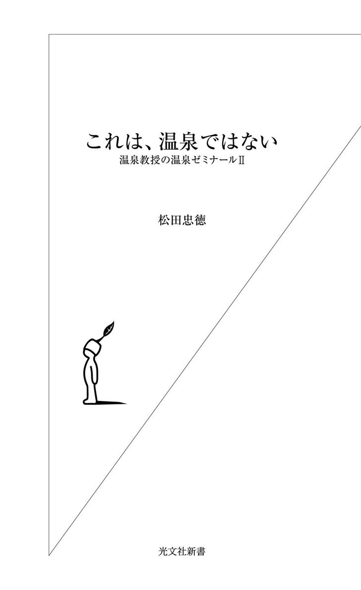
目 次
編集協力 福井信彦
「循環湯の見分け方」図版 飯箸薫
二年前の二〇〇一年、私は、前著『温泉教授の温泉ゼミナール（以下、温泉ゼミナール）』（光文社新書）において現在の温泉の状況、すなわち温泉を循環させて塩素殺菌を施した〝温泉〟が日本の入浴施設のすでに七割前後を占めるのではないか、しかもそれが現行の温泉法下では堂々と〝天然温泉〟という看板を掲げることができる、そういう状況を報告した。
温泉はこれでいいのか。それは二千年以上も続いてきた、日本の伝統的な温泉文化を守るために、私が温泉経営者に訴えつづけてきたことだった。しかし事態は一向に改善には向かわず、むしろ全国の自治体において循環施設による「公共温泉バブル」とでもいうべき状況を現出するに至り、そしてついには管理のミスから死者まで出る事態となった。
この時私は、改善を経営者側にのみ訴える時期はすでに過ぎたことを自覚した。私が前著の執筆を決意したのは、まさにそのような時期だった。冒頭部分に「私は本書の中で、温泉に対する〝幻想〟〝常識〟をこっぱみじんに打ち砕くことから始めたい」と記したのは、洞爺湖温泉で生まれ、全国四千三百湯の温泉に浸かってきた私の痛切な思いの表れだった。
一時的には利用者にショックを与え、場合によってはパニックを呼び起こすことも懸念しないではなかった。しかし事態がそこまで進んだ以上、私には温泉を利用する側に訴えるしか手だてがなかったのである。温泉を愛する人々に状況を訴えることによって、世界でも稀な日本の温泉文化を継承し、守り育ててほしかった。結果的に前著の衝撃波はパニックではなく、より豊かな、しかも大きな流れと合流していった。
大きな流れとは何か。それこそは、閉塞感が広く濃く漂う現在の日本のなかで「癒し」あるいは「安らぎ」を求める、静かではあるが大きなうねりのような流れだった。それが特徴的だったのは、若い人々――それも女性を中心としていたことだった。これまでになく女性誌を中心に「癒し」という言葉が流通し、それが温泉に向かうという傾向が一段と加速されていった。
日本の観光や温泉の長い歴史の中で、二十代を中心とした若い人達がこれほど温泉に向かったことはないだろう。今の日本の状況が、出口の見えないような、どんどん蟻地獄に落ち込んでいくかのようななかで、日本人は心の原風景や故郷を求めたのである。女性を中心とした若い人々は、無意識のうちにそういうものをゴルフ場や欧米的なリゾート地よりも、日本の原風景である温泉に見出した。『温泉ゼミナール』が若い人達、さらにいうならば都会の人たちに支持されたのは、そのような志向とぴったりと符合したからだと私は考えている。
刊行から二年が過ぎた現在、幸いにもこの本について、利用者側からはもちろん温泉経営側からも苦情や批判をいただくことはまったくなかった。そこから感じられるのは、少しでもいい温泉に入りたい、そして少しでもいい温泉を提供したいという、温泉を心から愛する日本人の心情である。
二〇〇三年に入り、私は地元紙で立て続けに嬉しい広告を見た。ひとつは旭川市の郊外、大雪山の麓に湧く天人峡温泉、今ひとつは本州の草津と肩を並べる一大温泉郷登別温泉のものである。
かつて旭川の奥座敷といわれた天人峡温泉。なかでも老舗旅館として知られるのが、「天人閣」である。その「天人閣」が打った広告のメインコピーは、「源泉一〇〇％の極楽」というものだった。そして天人閣の温泉の五大特徴として「●自然湧出一〇〇％天然温泉。源泉温度は五十二度です。●源泉を浴槽まで引いてくる間にさめて四十二～四十三度になります。●豊富な湧出量のため一度浴槽に入れたお湯はすべて捨てています。●天然温泉一〇〇％ですので湯花が豊富です。●循環式ではありませんので、ご自由にお飲み下さい」というコピーが続く。
はっきり書くが、私がこのような広告を見たのは、これが初めてである。もちろんこの他にバーやレストランの説明もあるのだが、とにかく圧倒的に大きなスペースを使って、泉質と湯量をアピールしている。私は長年旅行作家を続けているが、こうした内容の広告を見たのは本当に初めての経験だった。このように書くと、多くの読者は驚かれることと思うし、私のこの言葉もにわかには信じてもらえないかもしれない。しかしこれは事実なのである。
もちろんこれまでも、プールのような巨大な温泉ができましたとか、大理石を用いたローマ風の風呂ができましたとか、全室に露天風呂がついていますとか、温泉の本質とはまったく関係のない広告はいくらでも見てきた。しかし、「源泉一〇〇％」「非循環、かけ流し」「飲泉が可能」、さらには湯花についての説明が書かれた広告など、これまで見たことなかった。それはまるで、何かのタブーにでも触れるかのようであったのだ。
同じ頃新聞に登場した、登別、というよりわが国を代表する名旅館「第一滝本館」の広告が、再び私に快い衝撃を与えてくれた。メインコピーは「本物の温泉をご存知ですか？」である。これに少々長めのコピーが続くが、これがまたすごい内容であった。しかもその他の施設などの説明は一切なし。コピーのすべては、泉質と湯量にのみ費やされていた。その一部をここに紹介する。
「温泉の定義を温泉法で調べてみると、『地中から湧出する温水、鉱水、及び水蒸気その他のガスとされ、源泉での温度が二十五℃以上』とあり、含まれる成分と含有量まで細かく決められています。では、この条件を満たしたとして、源泉から引いたお湯に塩素などをくわえて殺菌し循環させ、数日も使いつづけたとしたら、はたしてそれは温泉といえるでしょうか？ 実は『天然温泉』と名のつくもののなかにも、このような温泉（？）が数多くあるのです。古来より温泉とは、地表に湧きでたお湯が湯床にためられ、あふれるままに流れていくものだったのですが......。
温泉のお湯は生ものです。時間がたてば本来の効能は薄れてしまうのです。ですから滝本はお湯を循環させることは一切していません。（中略）
このお湯の恵みを一人でも多くの皆様に気持ちよく楽しんでいただけるよう、私たちは、毎日お湯を抜きこころを込めて掃除をしています。（後略）」
どうだろう。読者の皆さんのなかにも、このような広告を見たことのある人はいないのではないだろうか。ここでは温泉とは違う、循環させた〝温泉〟があることをはっきりと示している。そしてホンモノの温泉の存在をアピールしているのである。清水の舞台から飛び下りるような覚悟で、『温泉ゼミナール』を書いた甲斐があったというものだ。
そしてもうひとつ私が好感を持ったのは、毎日の掃除に触れていることである。第一滝本館ではこの後も、この掃除の部分をアピールする広告を打っている。そこには掃除に取り組む十名の湯守たちの姿が大きく写し出されている。
ホンモノの温泉には、湯花に代表される凝固成分が付き物である。温泉成分の濃い温泉ほど、これの扱いに苦慮している。ある程度の間隔で交換しなければ、パイプなどもたちまち詰まってしまうようなところもある。もちろん湯船の掃除も重要である。ホンモノの温泉であれば、これは一日も欠かすことができない。つまりホンモノの温泉こそ、設備にも人件費にもコストがかかるのである。
実は循環風呂の普及は、こうした点にもひとつの原因があった。なにしろ本来毎日湯を抜いて掃除しなければならないところを、一週間も二週間もそのままにできるのである。洗い場などの清掃はするにしても、湯船の掃除から解放されることは、温泉業者にとって「福音」と映ったはずである。私が九州から北海道まで全国を歩いて、好感を持てる温泉というのは、必ずといっていいほどこの掃除が充実している。良い温泉のバロメーターのひとつといっていいだろう。
別の視点からいえば、われわれ利用者は「二十四時間入浴可能」に惑わされてはいけないということだ。なぜなら、これでは掃除ができないからである。もちろん「二十四時間入浴可能」とうたっていても、掃除の時間を確保しているところも多いから、そこはしっかり見極めてほしい。
これらの広告を見た時の私の感想は、「ついにこういう時代がきた！」というものだった。温泉が施設の大きさや話題性によるのではなく、泉質とその保全の努力によって選ばれる。そういう時代が到来したことを、これらの経営者たちは敏感に感じ取ったのである。そしてそこに至るまでには、必ず利用者からの声があったはずである。「お宅はホンモノの温泉ですか？」という声が。
実際にこの二年間、全国を講演や取材で歩くなか、公共温泉を中心とした循環施設では循環湯の交換間隔が確実に短くなってきている。それは、私自身が実際に歩くなかで確かめられたことである。この手ごたえも実に嬉しい限りだった。
なかには、以前は一カ月湯を抜かなかった所が毎日抜くようになった、という話も私の地元である北海道からは聞こえてきている。札幌近隣の公共温泉では、循環からかけ流しにシステムを変更するところも現れた。やはりそれは、読者がそういうものを求めていった結果でもあろうし、同時に経営者側も現在求められている温泉がどのようなものかを真摯に追求された結果といえるだろう。
『温泉ゼミナール』刊行の直後に私は、湯布院の隣町にある書店で「温泉経営者必読」という惹句が書かれたポップカードを見た。それは版元が作成したものではなく、その書店手製のものだった。私は「ああ、そう読んでくれたのか」と胸に熱いものがこみ上げてきた。やむを得ず利用者に向けて書いたつもりだったこの本を、書店は正しく温泉経営者が読むべき一書と理解してくれていたのだ。わが意を得たり、とはまさにこのことであった。
私は、活動の拠点を北海道札幌市においている。そのため日常的に中央のメディアと接触している東京在住の作家とは違い、光文社新書の一冊として世に問うたとしても、その意図するところが流布されるまでには四年から五年を要するだろうと考えていた。しかし実際には、私の下手な計算を上回る勢いでホンモノの温泉を求める動きは加速し、東京、大阪から新聞・雑誌などのマスコミが週に二、三社は札幌まで訪ねて来られる日々が二年以上も続いている。二〇〇三年を迎えた頃には自らの目的はほぼ達せられたと感じられた。地方在住の作家として私は、これをひそやかな喜びとし、札幌の一隅でほくそ笑んでいたのである。
そんななか、最も温泉利用者の多い首都圏で、二〇〇三年に相次いで大型の温泉施設がオープンし、これがマスメディアの大きな話題となった。話題となっただけでなく、各施設に毎日数千人もの人々が押しかけ、長蛇の列をつくっているという。
それぞれの施設が大宣伝を展開したにしても、この結果に私は衝撃を受けた。先にも書いたように、ホンモノの温泉とマガイモノの温泉の違い、また塩素を混入した循環風呂の実態についてかなりの部分が知られてきている。そしてそのような差別化の流れができたと私が思っていた矢先のことである。しかしそこにまた巨大な温泉施設が登場して、一日数千もの入館者があるという事実。まだまだ私の努力が足りないのかなという思いと同時に、マスメディアから大量に流される情報によって、人々が吸い寄せられていく恐ろしさをまざまざと見せつけられる思いだった。
しかし、東京や大阪など大都市圏の消費者は東ならば東北の乳頭温泉郷、西ならば九州の黒川温泉のような一級の温泉地、いうならば日本の温泉文化を支える人々である。それがいかに話題のスポットとはいえ、ホンモノとはいえない〝温泉〟に一日数千人が押しかけるという現象に、私は非常に複雑な気持ちを抑えることができなかった。
正直なところ私は、これらの〝温泉〟には一生入る必要もないし、またその機会もないものだと思っていた。実際に私は、二〇〇二年の六月にたまたま講演したホテルの〝天然温泉〝と称する循環風呂に入って以来、循環施設には一切入っていない。そして、その間に良質の温泉にばかり浸かってきた私の体は、塩素が混入した湯に敏感に反応するようになっていた。できることなら、循環風呂にはこのまま生涯入りたくない。それが私の率直な思いだった。しかしこうした現象を前に私は、新しくできた東京の〝温泉〟に入らなければならないという使命感を抱くことになったのである。
まずは、Ａという施設に出向いてみた（個々の施設を取り上げて、あげつらうつもりはないので、名前は伏せさせていただく）。率直にいってここの印象は、そう悪いものではなかった。もちろん私は男性風呂に入ったのだが、そこに配された内風呂、露天風呂はそれぞれ強食塩泉。ここは毎分四百リットル、それなりの湧出量といえる。温度も四十度そこそこ。しかしやはり四十度では、加熱した循環塩素殺菌風呂とならざるを得ない。
だがこれらの風呂には、基本的に温泉を使用するという姿勢が貫かれていた。これには私自身、意外に思いながらも好感が持てた。しかしそれでも外に出たとき私の口からは、「いい風だねぇ」という感想が同行した編集者に向かって自然に出た。もちろん東京の排気ガスにまみれた風であるから本来いいはずがないのである。しかしこの循環塩素殺菌風呂を出たときの私には、その排気ガスまみれの風も思わずそう感じられたのである。
一方のＢ。ここは基本的にテーマパークである。ただテーマパークといっても、「天然温泉」という看板があるから多くの人が高額な入館料を支払っても行くのだろうし、混雑や交通渋滞をくぐり抜けても行くのだろう。
脱衣場に入った途端、私の嗅覚に強い塩素臭が襲ってきた。浴室のドアは、閉まっている。ドアが閉まっているにもかかわらず、この臭いである。他のお客さんたちは気にならないのだろうか。塩素臭からしばらく遠のいていた私には強烈に感じられる。
中に入ると、露天風呂を含めていくつかの風呂が並んでいる。ところが、そのなかで「天然温泉」の風呂は一つだけなのである。しかしパンフレットを見ても、どれが「天然温泉」なのか、はっきりとは記されていないし、現場のこの風呂場にも案内板があるわけではない。実際には、内風呂の中心の大浴槽のみが、強食塩泉の入った「天然温泉」であった。
この浴槽では塩素の臭いはしない。何故か。この強食塩泉という泉質に塩素を入れても塩素臭はそれほどしないものなのである。しかし私はまず、湯を両手にすくって鼻を近づけてみた。この臭いは、一体何だろうか。
私は気分転換のために、露天風呂に向かった。今度は屋外にもかかわらず塩素の臭いがすごい。何せ一日数千人が入る湯である。塩素なしでは、たちまち重大事故を引き起こすことになる。結局私は塩素の臭いに負けて、すぐに浴室に戻った。しかし、再び湯船に入る気にはならず、洗い場へと向かった。
人々が二千数百円也を支払ってここにやってくるのは、先にも書いたように「天然温泉」の名に惹かれるからだろう。予算の都合や時間の都合で草津や熱海や黒川まで行けない人達が、ここで温泉気分を味わおうとして来るのだろう。そしてさらにはここで疲れを取り、癒されたいから来るのだろう。
なぜなら、ただ体を洗うだけなら近場の銭湯で五百円も支払えば充分なのだ。まして最近ではスーパー銭湯などという、少々銭湯の湯銭に上乗せをすれば、マッサージや昼寝もできる結構な場所がある。それなのにわざわざここまで時間をかけて足を伸ばし、しかも入湯税込みで二千数百円も支払うのは、ここが〝温泉〟、しかも〝天然温泉〟だからである。
日本人の温泉ＤＮＡには、温泉といえばどういうものなのか、どういうことをしてくれるのかということが刷り込まれている。私は前著で、循環風呂などのマガイモノの温泉はそういう日本人の温泉ＤＮＡ、あるいは温泉というものに対する共通理解の元に成立した「黙示の契約」、それを利用していると書いた。はるばる北海道から東京の〝温泉〟にやってきて、私は改めてそのことをここで再確認できたのである。
私は、全身をくまなく洗い流した。石鹸とシャンプーを使い、頭から足の先まで洗った。もちろんＡの湯に入った時も同様に、頭と体を洗い、最後にシャワーで塩素をよく洗い流して出てきた。塩素風呂に入った際には、これは必須の防衛策である（まだ水道水に含まれている塩素の方がまし、ということだ）。塩素は、関節の内側のような皮膚の薄いところからよく吸収されるので、とくにそういう箇所はよく洗い流さねばならない。
体を拭き、脱衣所に戻ろうとした。そしてそこで、その日何度目かの衝撃を受けた。脱衣場と浴室をつなぐ短い通路の壁に、浴用上の注意事項が書かれていたのだが、そこに、「入浴後は身体に付着した温泉の成分を水で洗い流さない」という文言があったのである。この風呂のお湯を、流さずに上がって下さいというのである。実に実に、驚くべきことであった。
私は、こういう所を温泉風銭湯と呼んでいる。温泉といいながら実際には銭湯、洗う場であるということだ。だからこういうところには、必ずカラン付きの洗い場がバーッと並んでいる。そしてシャワーがズラッとならび、換気扇が唸りをあげている。
私はそれを、そのシャワーで循環風呂の塩素をできるだけ洗い流していって下さいというシグナルだと思っている。そして換気扇は、塩素ガスで人々が中毒にならないように動いていると考えている。そう考えることにしている、といった方が正確か。
ところがここでは、湯を洗い流さずに上がって下さいというのである。全国の循環風呂のなかでもこれは希有な例だろう。こういう掲示をしているところは、なかなかない。
若い人たちは、どれほど温泉の匂いを知っているだろうか。それは例えば、草津の町に一歩足を踏み入れたときの匂いである。少なくともここの湯船から立ちのぼる臭いではない。
私が恐れるのは、ホンモノの温泉を知らない人々が、これを温泉のスタンダードだと勘違いするのではないかということである。日本中にある山の中の温泉、もう何百年という歴史をくぐり抜けて営々と守られてきた温泉を、こういう所を「天然温泉」だと錯覚した人達が殺していくのではないか、と本気で危惧する。二年前に私が警鐘を鳴らした構図が、さらにもっと悪い形で進んでいる姿を見て、愕然とするのである。実際に脱衣所で、「やっぱり温泉はいいねぇ」と話す年輩の男性グループを見かけた。
Ｂに現れたことは、現在の日本の温泉状況をデフォルメした一幅のカリカチュア（風刺画）である。つまり今ここで私が書いているようなことは、日本全国で起こっている、あるいは起こりうるのである。これは、全国にある公共の循環施設の拡大版といえる。それが今、この東京都内にできている〝温泉〟であるということだ。
各地方の市町村営、また第三セクターの温泉、そのような公共温泉の一時的な成功が、東京都内に民間の大掛かりな温泉施設がどんどん造られるヒントになったことは間違いない。だからこそ私たち利用者は、それをちゃんと分かったうえで使い分けする必要があるのだ。
一言断っておきたいが、私は東京の温泉がダメだといっているのではない。現在も東京の海岸部周辺に湧きだしている「黒湯」と呼ばれる温泉は、江戸の名物である。これの多くは化石海水と呼ばれるもので、古代の海水が地下に陸封されたものである。所によっては非常な効能を持つものもある。そういう温泉文化の伝統は是非守っていただきたいものである。
またこれも重ねていうが、私は循環風呂を抹殺しろなどというつもりはない。僅少な温泉資源を守るため、やむを得ずそういう処置をとるところもあるだろう。ただ循環させるのであれば、現在のところ塩素殺菌は不可欠である（例外的に、塩素殺菌はせず、加熱やゴミの除去の目的で循環させるところもある。ただし、そういうところはどんどん新湯を注ぎ込むのが普通。例えば法師温泉の野天風呂「玉城の湯」は、冬期加熱するものの、ほぼかけ流し）。ならばそれはすでに温泉ではない、ということである。そしてそのことは、きちんとユーザーに知らされるべきである。その結果、循環で塩素殺菌していることを承知のうえで行く人もあるだろうし、私のように避ける者もいる、ということだ。知ったうえで行くのであれば、湯上がりにしっかりシャワー浴びて塩素を洗い流すだろうし、まして湯口の湯を口にしたりすることはないだろう。
その後私は、札幌に戻ってきてある親しい人にこの話をしたところ、「東京から今年の春札幌に単身赴任してきた上司が月に一、二度東京に帰るたびに、Ｂの湯に浸かって癒されているというんですよ。素晴らしい風呂だって」という話を聞いた。
単身赴任で北海道に来ている。新しい生活環境、新しい職場環境になってさぞ疲れることだろう。ならば北海道には、札幌から車で一時間から二時間で、登別温泉やニセコ温泉郷など日本でもトップクラスの温泉がいくらでもある。できることならば、是非そういうところで疲れを癒してほしいものである。この人の話を聞いて、私はなにかやるせない、非常に寂しい思いがした。
古来日本人は、温泉で癒されてきた。温泉で救われてきたといってもいいかもしれない。日本の人口の八割が農業従事者だった時代には、農閑期の湯治で厳しい農作業の疲れを癒してきたし、高度成長時代には全国の企業がこぞって慰安旅行先に温泉を選んできた。サラリーマンや工場労働者が厳しいノルマに苦しんでいるときにも、社長や上司の「来週は温泉に行くぞ」の一声で自然に元気づけられたのである。
私はこの先の見えない閉塞の時代にこそ、日本人に温泉が真に求められていると考える。日本の景気回復には小手先の経済政策よりも、ホンモノの温泉回復の方がずっと効果があるだろうとさえ思っている。東京のど真ん中に〝温泉〟が次々に造られているということは、いかに都会の人々が温泉で癒されたいと願っているかということを表す非常に分かりやすい現象なのである。しかし、だからこそホンモノが必要なのだ。
ところが今、私の想像をはるかに超える温泉が、〝温泉〟といわれるものが、大都会の中に続々と造られている。一部には、東京の「温泉ブーム元年」などという書き方をしているメディアもあるようだ。もちろんこれを指して、温泉風銭湯というのならそれはかまわない。しかしこれを温泉と強弁するのなら、私は東京の景気は回復しないなという思いがする。
そして逆にいえば、熱海を玄関口とする伊豆の責任は大きなものがあるだろう。東京からの利便性の高い伊豆が、新幹線で一時間足らずのところにありながら、こういう東京都内の〝温泉〟にどんどん客を奪われるとしたら、温泉とは一体何なのか。熱海の徳川家康以来四百年の歴史とは、一体何だったのかということになる。
プロの温泉地が自分たちの役割、温泉リゾート地、観光地としての役割を果たせていないことのひとつの表れが、こういうものになっていくのかと考え込まざるを得ない。
先ほど私が書いた反省。まだまだ自分の努力が足りないのか、という反省。私は平成の首都に現れたこの巨大循環施設を前に、その反省を新たにせざるを得なかった。温泉に恵まれない地域の人々が、最新の技術を用いて掘削をし、温泉を得ることは結構なことである。湯量がわずかであるから循環させて利用する。それもいいだろう。しかし重ねていう。これは本来の温泉ではない。私たち日本人が心身を癒すため、営々と守り続けてきたホンモノの温泉ではないのである。
二〇〇三年の正月に札幌の一隅で浮かべた、地方在住作家のほくそ笑みはすでに消えてしまった。誠に残念なことに本書の第一章は、再び温泉でかけがえのない命を落とした人々の話から始めねばならない。その人々は、それが温泉ではないことを知らされなかった人々でもある。私は今再び、いわなければならない。それは温泉ではない、と。
平成十五年十二月
松田忠徳
本書に登場する温泉用語
源泉
地中から湧いた温泉そのもの。温泉は生ものであり、地表に出て空気に触れるとどんどん劣化していくので、源泉の湯元（泉源）と浴槽はなるべく近いほうがいい。
源泉100％
地中から湧いた温泉を、水道水や川水を加えず、そのまま使うこと。あるいは、源泉同士を混ぜずに使うこと。源泉温度が高い場合、適温にするためにやむを得ず加水して温度を下げることもあるが、加水せずに適温にする努力をしているところも多い。当然温泉成分は濃い状態のままである。
集中管理方式
温泉街全体で温泉の管理をすること。複数の源泉のお湯を一カ所に集め、それを各共同浴場や温泉宿へ配湯するシステム。
かけ流し
「垂れ流し」「流しっ放し」「放流式」ともいう。源泉の湯だけで浴槽を満たし、あふれた湯は使い捨てる。本来、温泉はかけ流しが当たり前だった。これとは逆に浴槽の湯を何度も再利用するのが「循環式」。
自然湧出
地下からの水圧で自然に温泉が湧くこと。他に、ボーリングした温泉が自力で湧き出る「掘削自噴」、ボーリングした温泉をポンプで吸い上げる「動力揚湯」がある。
循環式
源泉のお湯を何度も再利用すること。そのため、濾過、殺菌、加熱が不可欠で、本来の源泉とは異なる湯になってしまう。同じ湯を何度も使うので、少ない湧出量でも大型の温泉施設を造ることが可能。経営側からすれば、掃除の手間が省け、下水道代も少なくて済むというメリットもある。プールや銭湯でも、循環式が用いられている。
半循環式（一部循環式）
浴槽の湯を循環させながら、常に新湯を加える方式のこと。
塩素
循環式、半循環式で殺菌消毒に用いられる化学物質。水道水やプールでもお馴染み。値段が安いため、もっともよく用いられるが、人体への悪影響が懸念されている。塩素に代わる殺菌消毒剤として、オゾンや、ある貝の貝殻を焼いて砕いたものがあるが、一長一短があり、現段階ではまだそれほど普及していない。
循環式浴槽で殺菌が不充分だと、「レジオネラ菌」が繁殖し重大事故を引き起こす可能性が高いので、殺菌は不可欠。
レジオネラ菌
もともと自然界に広く存在していた菌。何らかの原因で増殖し、高齢者や乳幼児、免疫力が低下した成人が感染すると、肺炎やインフルエンザのような熱性疾患になることがある。循環式浴槽や空調用冷却水、噴水などが感染源として報告されている。
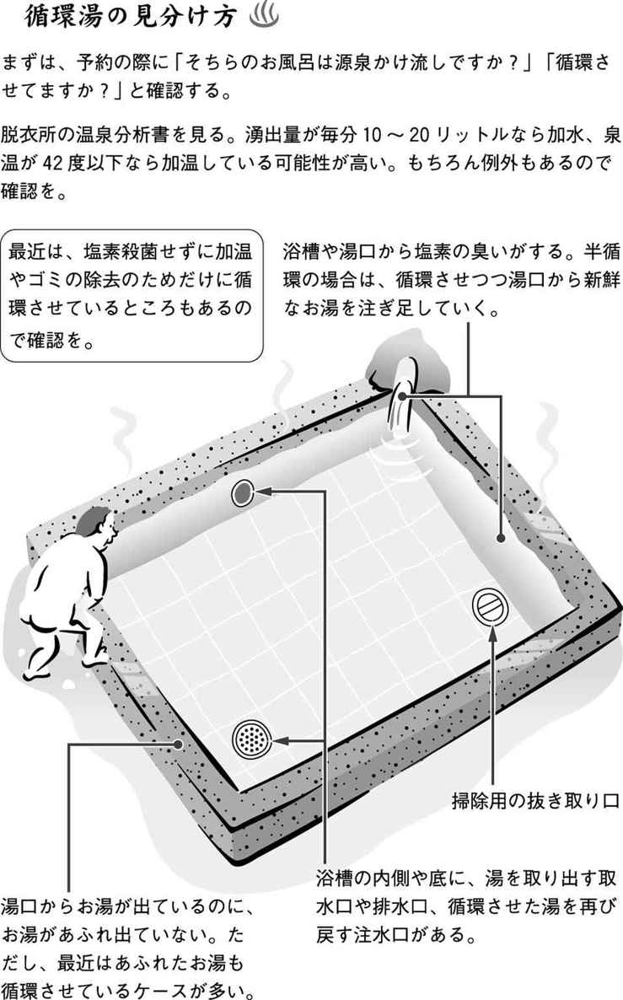
心身が癒されるべき温泉で、人が死ぬ。温泉に関わり、温泉を愛する者にとって、もっともおぞましい事件がまた起こってしまった。二〇〇二年七月、宮崎県日向市の「日向サンパーク温泉・お舟出の湯」で引き起こされたレジオネラ菌集団感染は、被害者総数およそ三百人、死者七人という未曾有の大惨事となった。
これは、過去最大の事故とされる、二〇〇〇年に発生した茨城県石岡市の入浴施設における集団感染をはるかに上回るものだった。かりにも〝温泉〟とうたった施設でのこの惨事は、その痛ましさはもちろんだが、温泉のイメージダウンを恐れる全国の温泉経営者にも恐慌を引き起こした。
私が『温泉ゼミナール』で警告を発し、全国的に循環風呂の大増殖やレジオネラ症の恐ろしさが相当に知られてきたと思っていた矢先の事故である。にもかかわらずまたしても行政が関わる第三セクターが経営する施設で、この惨事は引き起こされた。
私がこの種の事件に接して、どうにもやり切れない気持ちに襲われるのは、これらの被害者が温泉というものに絶対の信頼をおいている高齢者がほとんどだからである。これらの人々は、自然の恵みである温泉が本来どのようなものであるかよく知っている。その上で温泉というものに全幅の信頼をおいているのである。その人々がもっとも過酷な被害に遭う。それを思うと私には、被害にあった人々の怨嗟の声が聞こえてくるようである。
二〇〇二年十二月、私は宮崎県日向市のこの施設を実見することができた。そしてそこで見たものは、現代の温泉状況のもっとも歪んだ部分が寄せ集められた現場だった。その報告の前に、まず事件の経緯を簡単に辿ってみることにしたい。
日向の国は、天孫降臨の地である。日向サンパーク温泉に付けられた「お舟出の湯」の名も、神武天皇の故事によるものだという。日向市を中心とした第三セクター方式で運営される日向サンパーク温泉は、二〇〇二年七月一日に正式オープンしている。
しかし実際にはこの十日前の六月二十日、二十一日の両日、入浴客四百名を集めて体験入浴が行われていた。実はのちに分かったことだが、レジオネラ菌の感染は、この体験入浴の時点ですでに発生していた。つまりオープン前すでに「お舟出の湯」は、レジオネラ菌の海になっていたのである。
七月十八日、日向サンパーク温泉に「レジオネラ症に似た症状を示す患者が三人いる。三人に共通しているのはサンパーク温泉を利用していることだ。明日水質検査を実施したい」という連絡が日向保健所から入る。レジオネラ症あるいはレジオネラ菌という言葉をまったく知らなかった、支配人をはじめサンパーク温泉の関係者はこの連絡に無反応であった。
翌十九日保健所が立ち入り調査したところ、循環風呂にもかかわらず浴槽の残留塩素濃度がゼロだったため（つまりまったく殺菌されていなかった可能性大！）、保健所は温泉側に対し営業の自粛を要請する。しかし二十日、二十一日の週末は海の日を含む連休で予約が多く入っていたことを理由に要請に従わず、二十一日まで営業を続ける。二十日には業者が設備の点検を行った。
二十二日の月曜日は休館日であった。しかし市側、温泉側、保健所ともにこの日の動きはない。二十三日（この日営業を行ったかは不明だが、営業した可能性が大）保健所より電話で中間報告があり、レジオネラ菌が基準より多く検出される可能性が高いので、安全が確認されるまで営業を自粛するよう再び要請が行われる。
やっと翌二十四日に臨時休業し、清掃、消毒を行う。二十五日も休業し、清掃、消毒を行う。この間日向保健所より山本孫春日向市長に対し、「新たに感染を疑われる患者が十人出た。県保健薬務課が、サンパーク温泉を利用した人からレジオネラ症患者が出たことを記者発表する。ただちに営業を自粛されたい」という要請が行われる。同時に宮崎県が、「県内におけるレジオネラ症患者の届け出について」の記者発表を行う（集団感染の発表）。
二十六日、隣接する延岡市の六十歳代の女性が二十二日に死亡したことが判明。事件による初の死者となる。この後八月に入り死者が続く。
三十日。最初の立入検査から十日以上経ったこの日、患者と浴槽中のレジオネラ菌のＤＮＡが一致。日向市を中心に発生したレジオネラ症の感染源が、サンパーク温泉であることがはっきりした。保健所が、日向サンパーク温泉を六十日間の営業停止処分にする。同時にこの日、宮崎県警が業務上過失致傷容疑で温泉と市商業観光課を家宅捜索。
月が替わった八月五日、日向市がレジオネラ症被害対策室を設置。宮崎県も十八日、原因究明対策委員会を設置する。この頃市側は、市民に対する情報の告知と被害者見舞い、マスコミに対する発表に追われる。
九月十五日、延岡市の六十歳代女性が死亡。ついに死者は七名に達する。市は九月二日頃より被害者との補償交渉を開始する。
十月二十一日、日向市が原因究明委員会を設置。藪内英子前岐阜大学教授（微生物学）を会長として、原因の究明と改善計画策定にあたる。
十二月十六日、山本市長が翌年の九月には施設を再開する意向を発表。二十五日には日向サンパーク温泉取締役会で、木村支配人の副館長への降格と三月末の解雇を決定。社長である山本市長は、市長職も社長職も辞任の考えを否定。
二〇〇三年一月三十一日、市が改善計画書を保健所に提出。補償金総額が四億二千四百万円に上ることが判明する。
二月二十七日、木村元支配人が退職。翌二十八日、県警が山本市長ら五人を業務上過失致死容疑で書類送検する。
十一月十三日、一年四カ月ぶりに営業を再開。初日は三百人の利用者が訪れる。山本市長は会見で、起訴された場合（二月末に書類送検されたにもかかわらず、この時点でまだ起訴あるいは不起訴決定に至らず）社長退任の可能性を示唆したが、市長辞任は否定。
簡単に経緯を説明したが、ここまでの説明からも多くの問題点を感じ取られた方が多いことと思う。最大の問題点は、施設、市、保健所、県ともにすべての対応が遅れ遅れになったことだろう。なかでも私が驚きをもって聞いたのが、七月十八日に保健所から施設側にレジオネラ菌感染者が発生した可能性が伝えられたにもかかわらず、以降も三日ないし四日営業を続けた点である。
のちに市の商業観光課長が、「レジオネラ菌の名前は知っていたが、具体的な知識はなかった。茨城県などの集団感染については今回初めて知った」と述べているが、施設側の責任者においてもほとんど同程度の知識しかなかったと思われる。もし仮に、そうではなく充分な知識があったとすれば、極めて悪質な確信犯ということになってしまうからだ。少なくとも私は、そこまでの可能性は考えたくない。しかし時に、無知は重大な罪となる。
日向サンパーク温泉の職員は、この時二十七名。しかしこのうち温泉施設などでの勤務経験があったのは、木村國治支配人だけだった。しかしその支配人の経験も、熊本県不知火町の第三セクターに地方銀行から出向していたというもので、業務の中心はもっぱら経理や集客だったという。温泉の衛生管理などについては、「素人」といってもいい状態だった。
初動における市の対応には、不明な部分が多い。被害者の拡大が確認された二十五日に、保健所から市長に電話が入ったとなっているが、これが市に事件が伝えられた最初だったのだろうか。だとすれば、支配人は単独で保健所からの自粛の要請を無視したことになる。しかし、これは通常考えにくい。
結局この初動の問題について報告書では、「医療機関からの通報を受けた保健所が即日立入検査を行い、自主休業を指示したのは適切な対応であった。しかし施設側がその指示に従わなかったことを、法的強制力がなかったことに帰するのみでよいのであろうか」と記しているだけで、市側の対応については触れていない。なにか割り切れない疑問が残る。
私が日常的に接している温泉経営者にとって、保健所の指導というのは絶対的なものである。のちにこのことは別な観点から問題にするが、場合によって保健所は温泉施設に対し営業停止命令を行うことができるのである。それだけの権限をもつ官庁の指導に対し、果たして施設の一支配人が公然たる無視を決め込めるものだろうか。日頃の経験からいって、私にはにわかに信じることができない。
こうした経緯と関係があるのかないのかは不明だが、事件の拡大が連日報道されていた八月八日、ひとつの不可解な死が報じられている。前日の七日午前、日向保健所衛生環境課係長のＫ氏が、自宅で服毒自殺した姿で発見されたのである。Ｋ氏は当時公衆浴場の管理、指導の業務をしており、日向サンパーク温泉はその管轄だった。警察の調べでは、数日前から心労を訴えていたという。初動における疑問に答えてくれる重要な人物が、一人失われてしまったことになる。
遅れといえば、県が細菌検査を行うスピードも問題だった。患者発生が最初に伝えられたのが十八日。十九日に保健所が立入検査をし、浴槽水を採取した。しかし同時に行った五十歳代の患者の検査とともに、結果が出たのは一週間後の二十五日だった。さらに患者の菌と浴槽の菌が同一のＤＮＡをもつことが判明したのは、その五日後の三十日である。
これは菌の培養に時間がかかったからだ。検査薬を用いる尿中抗原検査を行えば、検査結果は数分から数時間で得られるのだが、この時、県には検査薬がなかった。三年前に茨城県で悲惨な事故が起こった教訓は、自治体においても活かされていないのである。
県では事件発生後の七月三十日から、県下で循環式浴槽をもつ類似の公衆浴場の緊急立入検査を行った。その施設数は、七十七である。宮崎県下だけでも七十七カ所も循環施設があるというのに、緊急事態に素早く検査が行える体制は整えられていなかった。多くの自治体も同じ状況に違いない。
さらに、あえてもうひとつの遅れを取り上げるとするなら、それは日向市とその第三セクターである日向サンパーク温泉の責任問題だろう。経緯のなかでも触れたので、すでに多くの読者が奇異の感を持たれたことと思う。三百人近い人々を死の危険に追いやり、しかも七人の尊い命が失われたというこの事件には、当然のことながら県警による捜査が入った。責任者と目される五名が、書類送検もされている。ところが事態がここに至ってもなお、この事件ではその責任を明らかにする者がいないのである。
二〇〇三年二月二十八日に書類送検された山本市長は、報道陣に促される形で記者会見を行った。その際記者からは、前日行った前支配人の更迭処分に関連して、自らの進退問題を問われている。それに対し市長は、「施設の再開に目途がつくまでは」と答えている。しかし再開がなった今日もなお、辞任の意志はまったく示していない。
それどころか、二〇〇三年十二月の議会では再選に向けて意欲を示す予定であることが報道された。再選される可能性があるからその意志を示すのであろうが、日向市の外から見る目には誠に奇妙な光景としか映らない。無辜の市民七人を死に追いやった事件の責任者が再び市長候補に擬せられるとは、まさに天下の奇観というべきである。
私は二〇〇二年の十二月に現地に入ったが、実は日向に入る前に鹿児島県の東郷町を訪れている。この日向市の事件の直後、二〇〇二年の八月にこの町の町営の温泉施設でやはりレジオネラ菌に感染した高齢者が亡くなっていたからである。
亡くなったのは、地元ではなく長崎県の人であった。集団感染ではないこのようなケースの場合、レジオネラ症が疑われることは通常少ない。にもかかわらずすぐにレジオネラ症が疑われ、検査の結果それが判明したのは、直前に日向市の大事件があったからである。
東郷町の場合、施設はすぐに営業停止となった。これも日向市の事件が教訓となったからだろう。ところが東郷町が日向市を教訓にしなかった点がひとつある。それは町長が即座に辞任したことである。町長自らが責任者である施設で、人一人が亡くなったのである。これが当然の対応と思うのだが、広い日本にはそうではない地域もあるらしい。
「日向サンパーク温泉・お舟出の湯」は、日向灘に面した絶景の地にあった。「道の駅」も隣に造られ、他のスポーツ施設などとともに相当の面積がある。周辺の海岸には海水浴場も点在し、ここに温泉を掘り当てたことは、日向観光に新しい可能性を呼び起こしたことだろう。
しかし車から降りてこの施設を見たときの私の第一印象は、「ああ、これは美術館だな」というものだった。とても温泉施設のデザインではない、まるで美術館のように見える。この第一印象は、そのまま施設のなかに入ってからも同様だった。
この日は地元の新聞社の記者に同行してもらったのだが、警察の調査が入っていて、ロープが回されていると聞かされていた。しかし行ってみるとすでにロープはなくなっていたので、裏口のインターホンを押してみた。対応に出た女性職員に施設を見せてほしい旨告げると、やがて一人の年輩の男性が出てきてなかを案内された。
名刺は渡されなかったが、案内を受けているなかで、この人物が支配人であることが分かった。この時までこの支配人は、報道などでも非難の集中砲火を浴び、徹底的に悪者にされていた。私もそういう思いこみが多少あったのだが、案内されるにしたがい、意外にも誠実な人柄がうかがえた。
真っ先に、大浴場に案内してもらった。相当な予算がかけられた施設である。内部には全体に木が用いられ、私にとっては、好みの造りといえた。浴室は日向灘に面したガラス張りで、中心となる大浴槽はすべてヒバで造られていた。豪華な施設造りを競っている市町村営の公共温泉のなかでも、かなり贅沢な造りである。
しかしすぐに私は、これは素人が設計したなと直感した。公共の温泉施設を数多く手がけている設計者の場合、こういう風呂は造らない。なぜなら木の浴槽の場合、他の材質に比べて圧倒的に掃除などの管理が大変なのである。
もちろん、入浴者の数が限られている温泉宿の場合は別だ。しかし一日に何千人という入浴者がある日帰りの施設では、掃除に手がかかる木の素材は用いないのが普通だろう。一般的な意味で建築のプロではあろうが、温泉施設については素人の発想と感じられた。
結果的にこの施設は、開業から事故発生まで〇日というとんでもない記録を作った。また開業から三週間足らずでの営業停止というのも、ほとんど例がないだろう。さまざまな混乱に対処してきたこの施設では、このヒバ材で造られた浴槽をどれほど清掃できたのか。それを考えると、私は背筋にぞわぞわとするものを感じた。
風呂の次には、館内を丁寧に見せてもらった。これはまさに、私が外観から直感した「美術館」というイメージがぴったりであることが分かった。
まず玄関を入る。すると、すぐにロビーが広がっている。しかし、通常この手の入浴施設の場合、そこは受付がおかれている場所である。私が見たところ、この美術館のロビーのようなものは無用の長物だった。
なぜなら、ここは「道の駅」のような他の施設と隣接しているため、どのような人がここに入り込むか分からない。しかも次には、二十メートルはあろうかという細長い廊下を進むことになる。だからこの先の受付からは、玄関部分に広がるロビーは見えないのである。このスペースを施設側が管理しなければならないとすれば、ただ人的な負担が増えるだけだったろう。
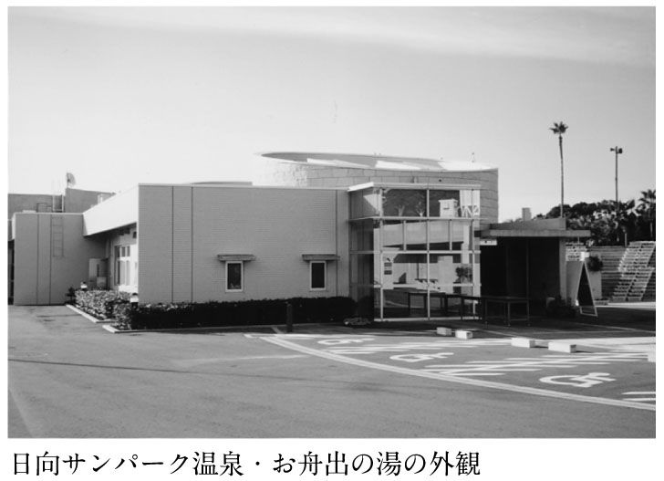
そして、その廊下の途中に入場券の自販機がある。ところがこれがまた、非常におしゃれに造られている。おしゃれすぎて普通に歩いていたのでは、素通りしてしまう。おそらく三人いたら、一人ぐらいは素通りする可能性があるような造りなのだ。
それでも素通りしてフロントまで行ったら、そこで係員が指をさして「そこに券売機がありますから、買ってください」といえればいいのだが、フロントから指させるところに券売機は見えない。壁に組み込み式になっているからである。おそらくこれの対応も、かなり大変だったことだろう。
さらにフロントをそのまま真っ直ぐ進むと、レストランに行き当たる。実はこのレストランにはいわくがある。事故発生直後市民からごうごうたる非難が寄せられるなか、取材に答えた支配人は「自分はレストランの対応に追われていた」という趣旨の発言をして、燃えさかる市民の怒りに油を注いだ。
私もその話を聞いて、衛生管理そっちのけで営利に走ったのか、と思っていた。しかし実際にこのレストランを見ると、休日に二千人近い利用客が訪れた場合の混乱は容易に予想できる。とにかく狭いのである。私はなにも美術館に恨みがあるわけではないが、ここも都会の美術館が似合うような、洒落たスペースに造られていると感じられた。実際利用者が狭いスペースで待たされ、苦情が相次ぎ、支配人はその対応に忙殺された。
そこで施設では急遽、日向灘が一望できるテラスをレストランスペースに割り当てて対応した。これで広さは倍になったわけだが、果たして厨房はこの二倍のスペースに対応できる能力があったのだろうか。注文したものがなかなか出てこなければ、それもおそらくはクレームとなったことだろう。それに真夏や冬期間はテラスで、というわけにはいかなかっただろう。
こうした造作上の問題はまだあった。ここは受付を済ませて入場し階下の浴室に向かう前に、靴を脱ぐことになっている。つまり階段の前は下足スペースとなっているのである。ところがバリアフリーが売り物のこの施設は、ここにまったく段差がない。しかもこのスペースに入ると正面に階段が見えるから、客は自然と靴を履いたまま階段に向かう。下足箱は右の壁側にあって、階段に目を向けていると死角になる。そこで、靴のまま階段に向かう客が続出したのである。施設はこうした客にも、対応しなければならなかった。
私はなにも、バリアフリーが悪いといっているのではない。もちろん、あらゆる人が同じように利用できるユニバーサルなデザインは、いまや常識である。しかしそれと同じくらい、あるいはそれ以上に大切なのが、スペースの機能性ではないのだろうか。
失礼な言い方になるかもしれないが、ここはバリアフリー、ユニバーサルデザインといった言葉が普通に使われている都会ではない。地方都市の、それもどちらかといえば高齢の利用者が多い温泉施設である。無骨でも下足箱が並び、足下にほんの数センチでも段差がついていれば、利用者は但し書きがなくともそこで靴を脱がねばならないことを理解したはずである。もちろん、右か左の隅に車椅子利用者のためのスロープが不可欠なのは、いうまでもない。
端的にいうならば、あらゆるものが機能的ではないのである。このような日帰りの入浴施設というものは、風呂にしても温泉宿の風呂とは違う。特定の少数の客にサービスを提供するのではない。不特定多数の人々を対象とした、公衆浴場なのだ。ならばまず、機能的に利用しやすくなっていることがもっとも重要なことなのである。それが、こういう施設を造るときの基本思想だろう。
スーパー銭湯などでは、下足箱のキーを顧客管理に利用しているところが多い。客はまず、自分の靴を入れた下足箱のキーとロッカーのキーを受付で交換する。以降館内ではこのロッカーのキーで、マッサージなどのサービスや飲食の代金もすべて管理され、退場時に精算を行った後、下足箱のキーが返還されるというシステムである。
ここがオープンしたのは、二〇〇二年の七月である。右に書いたようなあまりに機能的すぎる管理はともかくとしても、他の公共温泉やスーパー銭湯ではもっと有効な手法が取られていたはずである。十三億円をかけた施設を造るに当たって、市やこの第三セクターはどのような下準備をしてきたのだろう。首を傾げざるを得ない。
ここまで見せてもらったところで私は、案内をしてくれた支配人の顔を見た。どうやら私の表情には、彼に対する同情の気持ちが自然に浮かんだようである。支配人の表情に、わずかだがほっとした様子がうかがえた。
市役所で聞いたところでは、ここの設計業者は、日向市のすぐ近くにある小さな町の公共温泉施設を造ったそうだ。この設計業者は東京の業者であった。私はこのことにも問題を感じている。
というのも先に訪れた鹿児島県東郷町も、二〇〇〇年に大事故を引き起こした茨城県石岡市の施設も、やはり設計や施工が地元の業者ではなかった。今回の日向市の場合も、設計は東京のよく知られた大手企業ということだった。そして、施工は福岡の大手だという。
これはここに限らず全国的な傾向なのかもしれないが、私が心配するのはコミュニケーションの問題である。それぞれの地域によって、利用者の年齢層や利用の実態にはそれなりの差異があることだろう。当然設計施工の段階で、細かく微調整していく必要は多いことだろう。それが遠く離れた業者で、万全の対応が可能なものだろうか。もちろん業者は可能だと答えるだろうが、今回施設を実見するなかで、私のこの疑問は深まっていった。
それが原因かどうかは不明だが、この施設と施工業者との関係には驚くべき事実があった。
というのも、設備のメンテナンスなど温泉の管理について業者と施設との間で契約が結ばれていなかったのである。私が知るところでは、循環設備の設置業者は施設完成後のメンテナンスが大きな仕事になると聞いている。
ところがここではオープンの三カ月前の三月末で、その業者との契約が切れていて、あとは素人である施設側でやるという体制だったというのである。のちに日向市の原因究明委員会でも明らかになることだが、オープン前すでに極めて杜撰な管理体制に陥っていたのは、こうした体制がその大きな原因だった。
これも私はのちに詳しく述べることにするが、温泉を循環させる、そうなればやむを得ず塩素を入れなければならない。それならば設備および薬剤に関する専門家、それも温泉施設に特化した専門家を配置することを義務づける、あるいは指導する体制をとってほしいと考えている。もちろん循環させないのがベストなのだが、循環が必要というなら、利用者の安全を図るためにはそれくらいの体制が不可欠であると考える。
しかし、取りあえずここの施設についていえば、到底それを論議する段階ではなく、塩素という薬剤が人間には便利だけれど同時に危険性もあるという認識すらない。設備さえしてもらえば、もうあとは全部自分たちでやるという、いわば循環施設を家電製品なみにしか考えない安易な発想しかなかったのである。
そして当然のことながらまともな管理はできず、国の基準の十五万倍ものレジオネラ菌を浴槽内に発生させていた。施工完了の段階で、業者と施設側との間にはいったいどのようなコミュニケーションが取られていたのだろうか。
この後の項で私は、宮崎県と日向市の事故調査委員会の報告を読む。そこに記されているのは、かりにも温泉に関わろうとする人間が行いうる、もっとも劣悪な衛生管理である。私がそれを最初に読んだ直後には、しばらく気分が悪くなり、食欲を失ったほどである。
しかしそれは、基本的に衛生管理に関する問題点である。宮崎県の委員会は福祉保険部が行ったものだし、市の原因究明委員会の長は細菌学者である。いずれも風呂を中心とした衛生管理の問題点をもっぱらにしている。私はこの姿勢にも問題を感じている。
もちろん事故は、直接的には衛生管理の不備から引き起こされたものであるから、その観点からの究明は重要である。またそういう立場から事故防止の努力をされている方々に敬意を払うのは当然のことである。しかし、問題は衛生面だけだったのだろうか。この施設全体を見た直後、私はそこに疑問をもたざるを得なかった。
たしかにこの施設の衛生管理はひどいものだった。しかしのちに明らかにするが、管理だけが問題だったのではない。ここでは設備そのものに、重大な欠陥がいくつも指摘されている。つまり管理以前に、すでに問題があったのである。
人員の配置にも、衛生面での配慮はまったくされていなかった。専門家が一人もいなかった事実がそれを示している。開業前に高鍋市の施設に研修にも行っているが、衛生面の研修はなかったことが委員会で報告されている。
しかも建築物など風呂以外の施設においても、今見てきたように機能性という面で大きな問題があった。つまりここの経営者は、運営上の問題に忙殺されるあまり衛生面に細かな配慮をする余裕がなかったということである。
私はここで、丁寧に案内をしてくれた支配人を庇おうというのではない。かりにも支配人を任されたのであるから、施設で起きたことに責任があるのは当然である。また種々の問題点を、事前に提起できなかったことにも責任があるだろう。だから私は、あえて支配人が気の毒だとか、同情するなどというつもりはない。しかし同時に、ここで起きた問題は、支配人の努力だけで必ず回避できたとも絶対に思えないのである。
繰り返していうが、衛生面の原因究明が重要でないなどというつもりはない。しかしそれはワンオブゼムではないのか。施設や人員の配置、それをサポートする体制、そういったすべてが原因で、事故は起きるのではないのか。そういう視点が、行政側が立ち上げる究明組織にないのは不思議である。いや不自然ですらある。まるで衛生の問題以外には触れたくない、とでもいうかのようである。それで再発は本当に防げるのだろうか。
さらにいうなら、「菌」を退治することだけが温泉を管理することなのだろうか。このことは後で詳しく述べるが、温泉はレジオネラ菌が出さえしなければそれでいいのか、ということである。菌を出さないために塩素をどんどん入れる。塩素まみれの温泉を造る。それでは今や温泉に行くということは、塩素を浴びに行くということになってしまうではないか。それで日本の温泉は守られるのか。
この支配人は二〇〇三年三月で解雇された。つまり支配人だけは、責任を取ったといえるだろう。では不備の多い設備、経験のない人材、非機能的な施設、これらを現場経営者に押しつけて経営させた、市および市が九七％出資する第三セクターには責任がないのか。
現状を見る限り、責任がないことになっているとしか思えない。なぜなら、市の最高責任者である市長ならびに第三セクターの社長である人物が、その責任を明らかにしていないからである。
現在地方分権推進の重要性が、さかんに論議されている。推進派の論を聞いていると、まるで地方分権が実現すれば日本のすべての問題が解決するかのようである。しかしこの国には、人が七人死んでも責任を取らない自治体の長がいるのである。いくら薔薇色の地方分権推進論を聞かされても、人々の気持ちが少しも明るくならないのは無理もないことである。
ここでは、宮崎県福祉保険部レジオネラ症対策本部および宮崎県福祉保健部が出した報告と、日向市が設置した日向サンパーク温泉施設レジオネラ菌原因究明等委員会の報告を読むことにする。同時に、二〇〇一年九月に厚生労働省健康局生活衛生課が示した「循環式浴槽におけるレジオネラ症防止対策マニュアル」を随時援用して、この事件の本質を明らかにしたい。
図１は、連日使用型循環式浴槽（循環式で、浴槽に満たした水を二十四時間以上使用する方式）の基本的な構造である。実際には温泉の特徴や施設の事情などが加味され、これにさまざまな工夫が行われている。しかし集毛器で髪の毛などの混入物を除去して消毒剤で消毒し、濾過器でさらに微細な汚濁物質を濾過し、加熱器で適温に温めて浴槽に戻すという構造は不変である。
この他に毎日完全に浴槽水を交換する毎日換水型循環浴槽もあり、その構造はおもに循環ポンプと濾過器で構成されている。日向サンパーク温泉は、連日使用型である。
図２は日向サンパーク温泉の配管略図である。図３では報告で指摘された問題点を、配管図の上に記した。
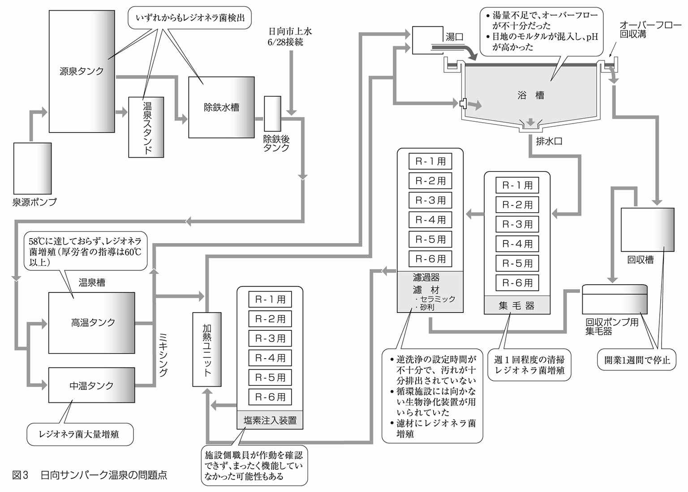
レジオネラ症の発生が最初に疑われた直後の七月十九日に行われた検査の結果では、採取した浴槽水すべてからレジオネラ属菌が検出された。その後二十四日と二十五日には休業して清掃、消毒を実施したにもかかわらず、八月五日に実施した検査でも六基ある濾過槽のうち五基から、また除鉄（鉄やマンガンなどを除くこと）後温泉水や中温タンクからも大量のレジオネラ属菌が検出されている。
私はこの図を見た瞬間、この事故が起こるべくして起きたことを知った。明らかな構造上の問題点が、随所に見られるのである。これはもう、完全に管理以前の問題である。
図１の浴槽の右上にある湯口の位置を見ていただきたい。厚生労働省のマニュアルに、「浴槽に補給する湯や水は、必ず水面上部から落とし込む必要がある」とされている通りになっている。そこで図２の浴槽左上をみると、たしかに高温タンクと中温タンクの湯がミックスされた湯が、浴槽の上部から落とし込まれる形になっている。
しかし厚労省のマニュアルでは、「浴槽への補給水や補給湯の配管を浴槽循環配管に接続しない」とされている。ところが図２を見てみると、浴槽に新湯を落とし込むタンクに循環した湯も送り込まれているのである。
厚労省のマニュアルでは、「循環湯の吐出口は浴槽の水面下に設ける」とされている。なぜか。マニュアルにはこう記されている。「旅館や娯楽施設の浴場で湯を豊富に見せるための演出として行われているようですが、新しい湯と誤解して湯を口に含んだりする入浴客もあり、またレジオネラ症感染の原因であるエアロゾルが発生するなど衛生的に危険なものです。浴槽の湯口からは、新しい温泉水や湯、水以外は流さないようにする必要があります」
残念なことであるが、これはひとり日向だけの問題ではない。多くの循環施設でこのマニュアルを無視して、循環湯を浴槽の上から流している。私は実際循環施設で、湯口からの湯を飲もうとする高齢者を何度も慌てて止めている。私が、循環施設の情報公開を再三にわたって叫ぶ所以である。
この風呂で湯を飲んだ人はいなかったのだろうか。私はその可能性を考える。たとえ飲まなかったとしても、日向の場合湯口の近くにいただけで感染の危険にさらされていたことになる。なにしろ新湯、循環湯の両方がレジオネラ菌に汚染されていたのだから。
新湯の給湯システムのなかでもっとも問題なのは、中温タンクの存在だろう。湯の温度調整のために設けられたものだが、これについては報告書のなかでも廃止すべきとされている。なぜなら、レジオネラ菌は十五～四十三℃で増え、三十六℃前後で最も繁殖するからである。日向の場合、ここでレジオネラ菌が大量に発生した可能性が非常に高い。
調査によると、高温タンクにも問題があった。厚労省のマニュアルでは「温泉等で貯湯タンクを設けている場合には、レジオネラ属菌の繁殖あるいは混入を防ぐため、湯温は六十℃以上に設定する」としている。レジオネラ菌は六十℃以上で死ぬためだ。ところがこの日向の施設の場合設定は五十八℃であり、しかもその能力が不充分で五十八℃にさえ達していなかった。中温タンクの存在とともに、極めて危険な状態にあったことになる。
しかし、このタンクまでの湯は除鉄処理をしてはいるが、基本的に地下から汲み上げた温泉そのものである。つまり循環に至っていないのだから、温泉そのものということになる。それがなぜこれほどに汚染されていたのか。その謎は、施工業者から施設側に設備が引き渡される経緯にあった。
究明委員会の聞き取り調査のなかで、次のようなくだりがある。
Ａ委員「三月二十九日（完成）から四月初旬の期間、温泉の配管内はどうなっていたのか」
技師「配管内のほこり、かすなどを除去するため、水道水を利用してあく抜き（？）を行い、その後水抜きがなされたと思っている」
Ｂ委員「その期間に増殖する可能性はあったと思う」
（中略）
Ｂ委員「六月二十日、二十一日（体験入浴）前の誰も入っていない浴槽水にレジオネラ菌がいたということか。六月六日の保健所の検査時にはレジオネラ菌の検査はなかったのか。保健所は何を検査したのか」
Ｃ課長「保健所としては、県条例に基づいたハード面での検査しか行っていない」
（中略）
技師「六月十二日に設計業者が最終検査を実施。十三日には機能検査を実施した後、浴槽の湯を抜いている」
Ｃ委員「管理面での責任の主体は、どの時点からどのようになっていたのか」
支配人「六月十二、十三日については自分としてはノータッチであった。自分としては、設備関係での完全な引き継ぎはなかったと思っている」
Ｃ委員「聞いていると、経過、状況があいまいである。（後略）」
「と思っている」が続く。そして「経過、状況があいまい」という指摘がなされている。また別の部分では次のようなやりとりも行われている。
Ｂ委員「残留塩素の測定や機械操作について、設計業者、施工業者、メーカーからの説明、指導はなされたのか。また操作に関するマニュアルは業者から出ているのか。また、この施設の機械設備等の特徴について説明はあったのか。ハードを渡すだけではおかしい」
技師「説明書には、具体的な管理要領はない。管理マニュアルは、業者から社員に渡されている」
支配人「マニュアルは直接もらっていない。操作関係については自分で勉強するのが当然かもしれないが、業者から自分に対する直接の指導は受けていない。担当者への湯張りの方法、集毛器の掃除等全般の指導は業者に依頼した」
技師「指導は、社員に対し口頭でなされたのではないか」
ここでは完全に話が食い違っている。すでに水掛け論である。一方は伝えたと主張し、一方は伝えられていないという。はっきりしていることは、適正な話し合いや指導はなされていなかったということである。業を煮やしたＡ委員が、最後に質している。
Ａ委員「温泉の衛生管理について、業者と契約は結んでいなかったのか」
支配人「契約をしていなかった」
Ａ委員「それは残念なことである......」
極めつけは、事故直後の山本市長の発言だろう。
「引き渡しを受ける前に、保健所から指導を受けた業者が水質検査を行っていると思っていたが、やっていなかった」
またしても「思っていた」である。最高責任者が会見場でこの体たらくである。すべては推して知るべしだろう。つまりここに表れているのは、恐るべき無責任体質である。開業前の市長を交えた会議では、自販機に入れる煙草の銘柄が議題になったそうである。ところが衛生管理が話題になったことは一度もなかったという。
山本市長は最初の会見の席で、事件を「青天の霹靂」と語った。青空にとどろく雷鳴のごとく、この事件は予想もつかないことだったというのである。およそこの種の事件に使われる言葉としては、もっとも不適切な言葉だろう。かりにも自らが社長に就任している第三セクターが運営する温泉施設である。レジオネラ症発生の可能性について、万が一にも考えなかったとするなら、それこそが重大なサボタージュである。
開業前の状態は保全されていないので結局推測になってしまうが、さまざまな状況から判断して、レジオネラ菌は開業以前から配管等に発生していた可能性が大きい。配管に残った水。そこはレジオネラ菌がもっとも増殖しやすいところである。その時期にこの温泉施設は、業者からも施設側からも何の衛生管理もされていなかった。
源泉タンクから貯湯タンクに至る部分についても、まったく同じ状況だったわけだから、開業前にすでにレジオネラ菌が増殖していた可能性が高い。自然湧出してかけ流しにされている温泉ではまずありえないことが、人間によって造られた設備ではおこる。それがレジオネラ菌問題の本質なのである。
次に循環部分を見てみる。専門家なら一目で問題点が指摘できる。それは塩素注入装置の位置である。本来塩素注入装置は、図１のように濾過器の前に置くものである。なぜなら、湯をきれいにするはずの濾過器そのものが、レジオネラ菌の供給源になる可能性が高いからである。
またこの施設では、図２に見えるように濾材にセラミックを用いている。ということは、おそらくこの濾過器は生物浄化装置である。長年レジオネラ症集団感染に取り組んできた藪内会長も、会議の席上で「生物浄化装置はやめなさいと指導してきた」と発言しているので、ここで使われていたことは間違いないだろう。厚労省のマニュアルにも同様の記述がある。
塩素注入装置の位置が不適切で、濾過器自体も不適切な生物浄化装置だった。しかし実際に稼働させていた設備は、もっとひどいトラブルを引き起こしていた。実は塩素が供給されていなかった可能性が高いのである。このことは確認されなかったようで、報告書には書かれていない。しかし支配人からの報告には、このようなくだりがある。
「七月十九日までは、大浴場の一カ所で一日一回塩素濃度を測定していた（らしい）。その際塩素注入器がエアをかんでいた事実が判明し、担当職員がエアをかんでいることの意味をメーカーの方に聞いていた。そのとき、業者の方は塩素注入器等の機械操作が分かっておらず、担当社員への指導もなされていなかったのではないかと疑問に思った」
このあと他の委員から「エアをかむとは、どういうことか」と聞かれたが返事がないので、他の委員が代わって答える。
「次亜塩素酸ナトリウム液（いわゆる塩素）の場合、ガスが発生しやすい。ガスが発生するとエアだまりができる。エアだまりができると塩素は全然注入されなくなる。一日一回は点検して、エアだまりがあればエア抜きが必要」
これも当時の状況が保全されていないので、推測するしかない。しかし七月十九日に採取した浴槽水は残留塩素濃度ゼロだったのは事実である。しかも職員は機械の操作がよく分かっていなかったのだから、ガス抜きが適正に行われなかった可能性が高い。
このあたりの事情説明では、支配人側から設置業者からの説明や指導がなかったことが主張されているが、なにしろ衛生管理について契約がなかったのだからしかたがない。しかし契約が行われなかった事情は施設側にあったのか、それとも業者側にあったのかは不明である。この事件には、よく分からない点が多い。
最後に浴槽とオーバーフロー回収槽について見てみる。オーバーフローというのは、湯を浴槽からあふれ出させることである。これは浴槽表面の浮遊物を除去する目的がある。ここでは二つの問題があった。一つは回収槽の位置の問題である。厚労省のマニュアルでは、オーバーフロー回収槽は清掃しやすいように地下ではなく、地上に設置するように指導しているが、ここでは地下に設置されていた。
しかしこの程度の問題なら罪は軽かった。ここでも施設では、操作の問題に突き当たったのである。つまり第二の問題は、清掃の仕方がよく分からなかったということである。そこで施設側ではオーバーフロー槽の運転を一週間程度でやめている。問題外である。
これも一因となったのであろう、浴槽は常に満水状態にならず、湯の入れ替えが不充分だったことが報告で指摘されている。しかし私には、もっと本質的な問題がこの温泉施設にはあると思える。それは、ここの源泉の湯量が絶対的に不足しているのではないかという疑念である。
平成に入ってから日本各地で掘削され公共温泉の元になった〝温泉〟と称するものには、実のところ温泉としての能力が低いものが多いのである。そもそもボーリングして発見されたという温泉に、この問題は常につきまとっている。
本来の温泉は、いつからとも知れず湧き出ていたものをいうのである。いまではこれを、わざわざ自然湧出といっている。しかしこれが本当の温泉なのである。草津もかつての熱海や別府も、すべて人間が知る以前から湧き出ていたものである。人間はそれを利用させてもらっているだけなのである。
ところが温泉ブームというものが起きるたびに、全国で掘削ブームが起きてきた。最近では平成に入ってからの温泉掘削が、異常なまでの広がりをみせている。これらの多くは当初こそ自噴するが、間もなくポンプで汲み上げなければ温泉が得られなくなるケースがほとんどである。
しかしこれは私にいわせれば、まだＣ級Ｄ級である。さらにＥ級以下の温泉がある。出たとはいうものの、温度も量もわずかな温泉である。今回ここの温泉施設やその運用状況をみると、私にはここがＥ級以下の可能性が高いように思える。もし仮にそうだとしたら、この豪華な施設はあまりに身の丈をはみ出しているといえるだろう。さらにいえば、今回の事件の深層もそこにあるのではないだろうか。
ここまで読まれたところで気分が悪くなり、思わず巻を置かれた方もあるかもしれない。しかしこれが〝温泉〟というものに浸かって七人が亡くなり、およそ三百人の人々が被害に遭った日向サンパーク温泉の実態だったのである。
だがこれほどひどい事件にも一筋の光明はあった。二〇〇三年一月二十九日、日向サンパーク温泉施設レジオネラ菌原因究明等委員会は、調査報告書をまとめた。そしてそのなかで示された改善案には、多くの注目すべき提案が盛り込まれていた。そのなかには、私がある新聞に求められて行った提案も、いくつか含まれている。あまりに大きな犠牲を生んだ事件だったが、心ある人は正しい教訓を汲み取ったのである。
ではその提案を順番に見ていくことにする。
まず、「源泉タンク、除鉄装置の増設により湯量の供給能力を高める」という項目が真っ先にあげられている。これは私が先に指摘した、この〝温泉〟が温泉としての能力に欠けているのではないかということに関係している。
もう一度図２の配管図を見ていただきたい。除鉄タンクの後ろに、オープン直前の六月二十八日、日向市上水道が接続されている。これは明らかに、この源泉の絶対量が不足していることを示すものである。高温タンクの温度が五十八度に設定されていたにもかかわらず、それに達しなかったのは、おそらくこれが原因である。
つまり、この源泉でこれだけの施設を維持するのはそもそも無理なことを、この上水道の接続が明らかにしているのである。源泉タンク、除鉄装置を増設するというが、果たしてそれが実際に可能なのか、首を傾げざるを得ない。
しかし次に、注目すべき提言が行われている。「浴槽数を減らす」というのである。この提案は、ある意味で前の提案と矛盾する。源泉タンク、除鉄装置を増設するなら、浴槽を減らす必要はないからである。ということは、源泉タンク、除鉄装置を増設できないなら、浴槽を減らすしかないということだろう。そういうことならば、私はこれを評価する。
ここまで順番に読まれた方は、この提言を当然の帰結と捉えるだろう。しかしこれは、これまでこの種の温泉施設でいわれたことはほとんどない。その意味で「浴槽数を減らす」は、かなり思い切った提案なのである。
私にはこの施設そのものが矛盾を抱え込んでいると思えるのだが、十三億の資金をつぎ込んで完成したばかりの施設を潰すことはできない。そこで次の提言となる。「高温タンクの温泉水が常に六十℃を保つように、熱源にはボイラーを併用する」。
高温タンクの熱源は熱交換システムだったようである。それでは水道水を混入した場合六十℃に達しないので、ボイラーを併用するというわけだが、水道水を入れ、ボイラーで沸かして、それが温泉といえるのだろうか。せっかくの提言に水を差すようで申し訳ないのだが、これが施設を衛生的に維持すればよいという考え方の人と私が決定的に違うところである。
しかしここまでの提案は、「温泉の身の丈に合った施設を」と私が従来主張してきたことと趣旨を同じにするものである。
さらに次の提案は、私がある新聞紙上で行った提案と非常に似たものだった。それは「衛生管理責任者と施設責任者を配属する」というものである。しかしこれは私の意見に一見非常に近いのだが、思想の部分で大きく異なる点がある。それを説明したい。
その後の細かい記述を読むと、どうやらこの衛生管理責任者というのは、レジオネラ菌撃退のために塩素を管理する者ということのようである。残念ながら私とはここが違う。残留塩素濃度に目を光らせ、レジオネラ菌さえ出なければ、それでいいのだろうか。これではレジオネラ菌の問題は解決しても、温泉の問題は少しも解決していない。解決どころか、温泉を塩素まみれにしているだけではないのか。
私は衛生管理責任者ではなく、健康管理責任者をおくべきと考える。衛生は健康になるための一要素にすぎない。健康であるためには衛生的であることは大切である。しかし現代においては衛生を追求するあまり、健康を損ねかねないことがある。例えば塩素の問題がそれである。
塩素をたっぷり入れてレジオネラ菌を退治した温泉に入って、本当に健康になれるだろうか。やむを得ず循環施設とするなら、現在のところ塩素に頼ることになる。ならばそれは、必要最低限度にするべきだろう。私はその必要最低限度の塩素量を調節し、入浴者の健康にも配慮してくれる健康管理責任者をおくべきと考えるのである。この管理者は、レジオネラ菌と闘うのだが、塩素とも闘うのだ。もちろん湯質の維持も忘れてはならない。
もうひとつ私には重大な不満な点がある。それは清掃についての指摘である。提案には「浴槽水の換水間隔を短縮し、毎日換水型方式も検討する」とは記している。これが私は残念でならない。なぜ毎日湯を抜いて清掃すべき、といわないのか。だから塩素たっぷりの湯にならざるを得ないのではないのか。
清掃のことは、プロローグでも触れた。私はいま、利用者はこれを声を大にして求めるべきときが来たと思っている。全国の温泉のなかでも私が評価するところは、例外なく清掃が行き届いている。いまや清掃は、温泉の良否を見分ける指標にさえなるものだ。もちろんここでいう清掃とは、洗い場だけではなく、浴槽の湯をしっかり抜いて洗浄することである。
大分県直入町の町営温泉「御前湯」は、公共温泉ながら完全な源泉一〇〇％かけ流しである。濃厚な温泉成分が含まれているため、清掃を欠かせないということもあるが、毎日三時間かけて四人の職員が丁寧に掃除を行っている。黒川温泉「新明館」の後藤哲也社長は毎日、社員を帰した深夜に人気の露天風呂や洞窟風呂を一人で清掃している。いうまでもなく、いずれも全国トップ級の温泉である。温泉が良いところほど、清掃も完璧なのである。
私は循環風呂というのは、やむを得ない手段だと考える。温泉にはそれぞれの特徴や事情があるので、完全に一律に否定することを私はしない。しかしそれならばせめて、清掃を毎日して、少しでも塩素を減らす工夫をしてほしいのである。
私は、毎日清掃をするくらいなら循環にする価値がない、などという温泉経営者は決していないと信じたい。公共の温泉とて同じではないだろうか。入浴者の多くは納税者でもあるのだから、心を込めた清掃を是非してほしいものである。本来塩素のような化学物質は、丁寧な清掃の補助として用いるべきではないだろうか。
私が『温泉ゼミナール』で、予約の際「お宅は循環ですか」と聞きましょうと提言したところ、現在全国の温泉地でその質問が急増しているという。温泉の質に対する、利用者の関心の高さがうかがえる。
そこで今回本書では、私は次の提言をしたい。循環の質問とともに、「お宅のお風呂は毎日お湯を抜いて掃除していますか」と聞いてみるのも宿選びの大切なポイントになるのではないだろうか。「お湯を抜く」というところがミソである。これが確かめられたなら、きっと良い温泉に出会えることと思う。良い温泉は、必ず清掃にも心がこもっているはずである。そして、そのような温泉の経営者は温泉を愛している。温泉を愛している経営者の宿は、必ずや癒しの湯、雰囲気を提供してくれるはずだ。温泉を単に客集めの道具として使っていやしないかチェックすることが、今の時代必要なのである。
私は今回の究明委員会の提案をそれなりに評価する。このなかには他にも、「浴槽水は常に満杯に保ち、溢水（オーバーフロー）させるようにし、溢水は循環させずに捨て水とする」とか、「塩素濃度、水温、pH、水質検査の結果、細菌検査結果などを掲示板等に常時掲載する」など、他の公共施設ではなかなか見られない先進的な提案がなされているからだ。
しかしやはり根本のところで、私はどうしても全面的に支持することができない。それはこの提案の柱が、衛生というところにばかり主眼がおかれ、温泉が塩素にまみれることには問題意識が感じられないからである。
そうであるならばそれは、現在厚生労働省が全国の保健所を通じて行っている指導と同根である。そしていまやその指導は、現在ではそれほど多くないホンモノの温泉を確実に死に追いやろうとしているのである。
衛生は大切である。そうでなければ安心して温泉に入ることはできない。しかしそれは、温泉の効能、味わい、さらには心を込めた清掃など、日本の温泉文化全体にとってはやはりワンオブゼムではないだろうか。
私は本当は、レジオネラ菌の話をするのは嫌なのである。こんな話をする時間があるなら、もっと本質的な温泉の問題を語り合いたいし、レジオネラ菌の話にのめり込むと温泉の本質からはどんどん話が逸れていってしまうからだ。
ところがいまだに、循環器を使いながらレジオネラ禍のことを「青天の霹靂」などという輩が絶えないので、しかたなく私はレジオネラ菌のことを書かねばならない。しかも先に書いたように、全国の保健所はこれに対して塩素、塩素と温泉地を巡礼して歩いている。
それは、なんと源泉一〇〇％かけ流しのホンモノの温泉に対しても行われているのである。役所のそういう対応から、レジオネラ菌を誤解している人も多いようである。前著と重なることではあるが、もう一度レジオネラ菌について説明しておきたい。
レジオネラの名前は、最初に大量の犠牲者を出したアメリカの在郷軍人会（The Legion）に由来する。この事件は一九七六年のことで、フィラデルフィアのホテルで開かれた在郷軍人会の総会に集まった二百二十一名が、帰郷後に原因不明の重症肺炎を発病し、そのうち三十四名が死亡したというものである。
これだけ多くの犠牲者が一度に出たことから熱心な原因究明が行われ、半年後病原体が発見された。その際被害を受けた団体の名前から、Legionella pneumophilaと名付けられたものである。その後肺炎だけでなく発熱を伴うインフルエンザのような疾患があることも分かり、それは発生した場所にちなんでポンティアック熱と呼ばれている。
日本では温泉の循環施設で感染者が大量に出たことで知られているが、一九七六年の事件は空調機にたまった水が原因だった。この菌は配管の内側のぬめりなどが大好きなようである。日向の事件でも、開業前配管内に残った水の中でレジオネラ菌が増殖した可能性が高いと考えられている。
わが国では、レジオネラ菌といえば〝温泉〟（あくまでカッコ付きである）、ということになっている。さらにこれが日向のような事件を受けて、ますます〝温泉〟がレジオネラ菌に結びつけられる事態になろうとしている。しかしこれはとんでもない誤解である。
是非冷静に考えてもらいたい。これまで大量のレジオネラ症患者を出しているのは、いずれも循環風呂の施設である。しかもこうした事態を招いた施設は機械設備の操作に習熟していなかったり、塩素をまったく使用していなかったり、清掃を怠っていたというように、その原因は常に明白になっている。
つまりレジオネラ症が発症したのは、循環風呂という特殊な装置を使ってお湯を繰り返し使い、にもかかわらず適性に塩素を用いなかったり、掃除を怠ったりした場合である。自然に湧いている源泉を直接引いてきて、それを湯船に溢れさせている温泉ではそのような被害は起きていない。
ところがここが問題なのであるが、レジオネラ菌というのは自然界の土壌や淡水中に普通に生息している自然生活菌なのである。そのため温度が低めの温泉などを調べると、検出される可能性はかなり高い。しかしそこでレジオネラ症を引き起こしたことは、ほとんど報告されていないのである。
レジオネラ菌はいわゆる日和見感染菌といわれるもので、菌があったからといって必ず感染したり、肺炎になったりするものではない。病原性大腸菌Ｏ‐１５７のように徹底的に撲滅すべきものではなく、適当に共存していくべき細菌といえる。「いえる」というよりも、人類は長年そうして生きてきたのである。危険な菌であれば、砂場や川、池などで遊んでいる子供たちこそ危ないことになる。
レジオネラ菌が人間に深刻な被害を与えるようになったのは、ここ数十年のことである。それは、大量増殖している場所を見ても分かる。日本ではまず、循環させているにもかかわらず塩素をまったく使用していなかったような極端に不衛生な循環風呂、欧米ではビルに使われている空調の循環水システム、とくに冷却塔などである。いずれも人間が快適さと横着さを求めた結果の産物で、百年前にはなかったものばかりである。この一事をとっても、自然に湧いている温泉とレジオネラ症が結びつかないことが分かる。
ところが二〇〇〇年に静岡、茨城の両県で死者まで出る集団感染が相次ぎ、レジオネラ菌は人類の敵とされてしまった。しかもそれは、常に風呂や温泉と結びつけられることになったのである。そして今回の日向市の事件がそれを決定的にしてしまった。『温泉ゼミナール』で警告しておいただけに残念至極だ。
そして一方には、このレジオネラ菌を退治してくれる塩素というものがある。読者のなかには私が塩素、塩素と、まるで親の敵のように書くのを不思議に思われる方もいるかもしれない。これについても誤解があってはいけないので、少し説明することにする。
ご存知のように塩素は、水道水の殺菌に使用されている。日本で投与されるようになったのは、一九五七年からである。チフス菌やコレラ菌のような細菌には強い効果を発揮するから、それらの伝染病に苦しんできた人類にとって、これはまさしく福音であった。
しかし便利なものには、リスクが付き物である。塩素も同様で、さまざまな弊害も現れている。カルキ臭に代表される味や臭いの問題もあるが、もっとも深刻なのがトリハロメタンの問題だろう。
水道水に含まれるトリハロメタンは、一九七〇年代から世界中で問題となってきた。これは取水した川水のなかに含まれるアンモニアと塩素が反応してできる有毒物質で、通常クロロホルム、ブロモホルム、ブロロジクロロメタン、ジブロロクロロメタンの四種を指す。いずれも動物実験では、肺ガンや腫瘍の発生がみられる危険な物質である。
温泉も地中を通って湧き出てくるものだから、当然地中のアンモニアをわずかだが含んでいる。だからこれに塩素を投与することは、トリハロメタン発生の可能性がある。私が塩素の温泉への使用に反対する理由のひとつは、このトリハロメタンである。しかも湯を沸かすと、トリハロメタンは気化して浴室に充満する。水道水を沸かした家庭の風呂でさえある程度のリスクがあるのだ。循環風呂で塩素を入れて加温すればどういうことになるか、ご想像いただきたい。
さらにもうひとつは、温泉にはさまざまな成分が含まれている。温泉の効能を表すのは、この成分である。そこに塩素という化学物質を投入すれば、当然何らかの反応を起こす。しかしこれが実は、あまりよく分かっていないのである。厚生労働省の指針にも、その可能性は指摘されているが、「事前に充分な調査をする必要があります」とするのみである。
危険性を指摘しながらそれを具体的に示さないのもひどい話だが、それも無理からぬことで、温泉に含まれる成分というのは百の温泉があれば百通りあると考えねばならないからだ。つまり結果はよく分からないが、とにかくレジオネラ菌を殺さねばならないから取りあえず塩素を入れなさいというのが現状なのである。
私はこの章の冒頭で、日向の事件が全国の温泉経営者を大恐慌に突き落としたと書いた。決してこれは誇張ではない。とくに源泉一〇〇％かけ流しの良質な温泉に、保健所が塩素を混入することを強制して歩いたことは、泉質にこだわって温泉を守ってきた経営者たちを苦しめたのである。
宮崎県では、日向サンパーク温泉の問題が発生した直後に、全県の循環施設（病院や老人ホームも含む）の調査を行った。そして厚生労働省の指導により、この検査は全国に広がった。その際に行われた指導が、とにかく風呂には塩素を入れろというものだった。
保健所が調査や指導に入る際、行うことはいくつかあるが、湯についての検査はひとつである。それが残留塩素濃度の測定である。そしてその対象は、「旅館業営業施設で共同浴場を有する施設」、つまり温泉旅館である。ところがある県の保健所の書類には、こういう但し書きがついている。「循環濾過装置を使用していない客室付浴槽は、検査対象外」。この文言には、温泉施設に対する無知と無理解が露骨なまでに表れているではないか。
まず「循環濾過装置を使用していない客室付浴槽」というが、これは何を根拠にそういっているのか。最近、全室温泉付きと宣伝している高級温泉旅館があちこちに出てきた。これをみると相当な湯量が必要である。果たしてこれを全部源泉でまかなえるのか。私には疑問である。加えて、どうしたら調べる前に、客室付浴槽が循環濾過装置を使っていないと分かるのか、教えてほしいものである。
そして逆に聞きたいのは、なぜ調べる前に旅館の共同浴場が循環濾過装置を使用していると分かるのか、ということである。この文言を解釈すれば、温泉旅館の共同浴場は全部循環施設ということになる。なぜそれが調べる前に分かるのだろうか。
温泉業者の生殺与奪の権をもって調べるのなら、温泉には湯を循環させている所と源泉をかけ流しにしている所がある、ということくらい知っていてほしい。知れば、その二つが同じ検査になるはずがないのである。
水道水も川水も混ぜていない、ましてや循環など一切していない源泉一〇〇％かけ流しの温泉も、等しく残留塩素を測定される。そして塩素が入っていなければ（入っていないに決まっている！）、「すぐに塩素を入れろ」と指導される。経営者が、「いや、これは何百年もここから湧いている温泉で素晴らしい効能をもった温泉です。塩素など必要ないし、入れれば温泉が台無しです。浴槽や配管の清掃は毎日しています」と訴えても、「すぐに塩素を入れなければ、営業停止だ」と恫喝する。そういう光景が、日向市の事件以降、毎日のように全国の温泉地で繰り広げられたのである。
他県の話を引き合いに出したが、私の地元北海道でも同様の事態は起こっていた。十勝管内を管轄する帯広保健所の指導がまったく右と同様の有様で、新鮮な源泉をかけ流しにしている温泉関係者から反発が広がっているという。これは、二〇〇三年九月四日の『北海道新聞』帯広版に掲載されている。
記事中保健所の環境衛生係長は、こう説明している。「たとえかけ流しでも、源泉からの配管が汚れていれば、そこで菌は増殖する。配管のない露天風呂などでも、入浴者数が多ければ外から持ち込まれた菌が急に増えることがある。年に数回水質検査をしても菌の増減は把握しきれないので、塩素を入れ、確実に殺菌してもらう」
ここにも温泉の歴史と文化に対する、とんでもない誤解と無理解がある。あえて名前はあげないが、この帯広保健所の管轄内、とくに大雪山麓には全国的に見てもトップ級の湯質を誇るホンモノの温泉がいくつもある。今それが、保健所の指導によって塩素風呂に変えられようとしている。
日向サンパーク温泉で起きた事件は、検証したように経営者の無知と不手際によって引き起こされた。しかしそれがきっかけとなり、こうして全国各地のホンモノの温泉が圧殺されようとしているのだ。
係長氏は、「配管のない露天風呂などでも、入浴者数が多ければ外から持ち込まれた菌が急に増えることがある」としている。「配管のない露天風呂」というのは、源泉の湧き出し口の下、あるいは上に造られた風呂のことだろう。まさに形態としては、第一級の温泉である。これが山の中にあれば、動物がやってきて病や傷を癒していくかもしれない。人間はそうした自然の恵みを、ほんの少し借りているだけなのだ。
そこに賢しらな人間が塩素片手に現れて、「レジオネラ菌は人類にとって不倶戴天の敵。生かしてはおけぬ」と塩素をまき散らす。私たちはそうまでして、今日まで共存してきたレジオネラ菌の絶滅に向かわねばならないのだろうか。
もう一度いうが、この菌は土壌や池の水など、身近な場所で私たち人類と長年ともに生きてきた細菌である。大量に増殖して人間に害を及ぼすような場所は、いずれも人間が作り出した空間だ。少し智恵を働かせて、人間が元の通りこの菌と共存できる道を求めれば、私たちは豊かな自然の恵みである温泉を、そのまま享受することができるのである。
しかもこれほどレジオネラ菌を目の敵にしているのに、公共温泉などでは相変わらずジェットバスなどと称する泡風呂が稼働しているのは不思議である。日向市の事件以降はさすがに打たせ湯は危険性が高いので、循環施設では使用しない傾向になっている。だが同様にレジオネラ菌を吸引する危険性が高い泡風呂は、止められないようである。
おそらくこれは、温泉の効能が低い循環施設である公共温泉などでは、泡風呂でもなければ利用者に魅力がないからである。つまり、営利とはいわないが、施設を維持するために危険性の高い設備をあえて維持しているのである。
『温泉ゼミナール』で私はこう警告した。
「ヒトがこうした温水から発生したエアロゾル（噴霧質）を吸入する（空気感染、経口感染）と、レジオネラ属菌の経気道感染が起こる。循環風呂ではとくに、飛沫が口や鼻から入りやすい泡（バイブラ）風呂や打たせ湯に注意しなければならない。良心的経営者なら、打たせ湯に一次水（新鮮な温泉）か真湯を使用するのが常識である」
もちろんここでいう真湯は循環されていない真湯のことである。
第二章で触れるが、私のこの警告が不幸にも的中してしまう事件が今年（二〇〇三年）一月にあの有名な山中温泉の町営施設で起こった。男性が泡風呂の底に沈みレジオネラ菌に感染して死亡したのである。
先ほど私は、日向市のおぞましい事件以降、さすがに打たせ湯は循環施設では使用しないようになってきたと書いた。実際、私の地元北海道でも、二〇〇二年の秋から公共温泉施設での打たせ湯の使用は順次禁止になっている。
ところが今年三月十二付の栃木の県紙『下野新聞』朝刊を見て驚愕してしまった。大見出しで恐い活字が踊っているのだ。
「禁止の『打たせ湯に循環湯』」「県内公営温泉の二割超使用」「レジオネラ菌感染危険」「県防止マニュアル無視」
那須温泉郷、塩原温泉郷、鬼怒川温泉郷など、全国的に知られる大温泉地を抱える栃木県が、国のレジオネラ防止マニュアルに反して、循環湯の打たせ湯への使用を禁止していないことに対する県民の怒りを『下野新聞』が代弁したのである。日向市の事件から八カ月近く経過しているにもかかわらず、わが国有数の温泉県（温泉施設での宿泊客数は、北海道、静岡県、長野県に次いで栃木県は全国四番目に多い）である栃木県の対応としては首を傾げざるを得ない。
厚生労働省の指針を基に県生活衛生課が作成した感染防止マニュアル『レジオネラ症の知識と浴場の衛生管理』によると、打たせ湯で使用するのは『新しい湯』とされている。
『循環湯の打たせ湯使用』とは、浴槽で使用した湯を循環ろ過し、再び打たせ湯に再利用すること。レジオネラ感染症の原因となり得る水の飛沫が発生するため、危険だとされている。
このほか、ジャグジー（気泡、超音波、ジェット風呂なども含む）も気泡が破れて菌が飛散するため、毎日湯を交換しない施設では循環湯の使用が禁じられている。
下野新聞社が県内公的入浴施設四十二カ所を対象に行った電話アンケートによると、十三カ所に打たせ湯があった。このうち九カ所が一度使用した湯を循環させて打たせ湯に再利用していると回答した。四カ所は新しい湯を使っていた。一部に、安全性確保のため打たせ湯を廃止した施設もあった。
循環湯使用の理由として『ゆう出量が少ないため、湯を有効利用している』とする施設が大半を占めた。
今回明らかになったマニュアル無視の循環湯使用について、県生活衛生課は『実態を把握していない。条例がないので罰則適用など強い指導はできないが、感染事故防止に努める』とするにとどまり、設備改善指導については消極的だ。
厚生労働省によると、レジオネラ症発生の危険性がある業者に対し、営業停止、罰則措置を講じるため公衆浴場法、旅館業法の条例を改正したが、改正作業を進めている自治体は三十六都道府県。態度を保留しているのは本県のほか群馬、千葉、福井、京都など少数だという。それぞれの改正条例には『循環湯の打たせ湯使用禁止』が盛り込まれている。
（二〇〇三年三月十二日付『下野新聞』より）
私は、個人的に泡風呂というのが大嫌いである。もともと日本の温泉にはなかったものである。日本人がこんなものを好むようになったことは、本当に残念だ。もっといえば、カランもシャワーも私はいらない。温泉というのは、基本的には髪や体を洗うところではない。湯に浸かってその効能を得るところなのだ。さらにいえば心を清浄にする場である。欧米のように体の表面の汚れを洗い流せればキレイになったとは日本人は考えない。心がキレイになってこそ温泉浴の目的は達せられるのである。そういうところに循環施設を持ち込み、シャワーやカランを並べ、大量の観光客を呼び集めたあげく、自然の反撃を受けて温泉は塩素にまみれるはめになってしまった。
なんと愚かなことだろう。私には、何かが間違っているとしか思えない。
全国で繰り広げられた温泉の受難は、長野県で面白い展開をみせた。これは田中康夫知事が打ち出した明快な方針とそれに対する反論という形で、他県にはあまり見られなかった活発な議論が行われた。そしてその結果、行政、温泉双方がもつ問題点が浮かびあがってきたのである。
長野県でも、二〇〇二年七月に発生した日向サンパーク温泉のレジオネラ禍発生を受けて、全県の温泉施設の検査を行った。その結果、いくつかの温泉施設から国の基準値をこえるレジオネラ菌が検出された。この事態に対し、観光を長野県の重要な産業とする田中知事が早々と行動を起こしたのである。
県は十月三日県知事名で、「レジオネラ症に関する防止対策について」という文書を、公衆浴場営業者、旅館営業者、病院・有床診療所長、社会福祉施設設置者に宛てて送った。これには、レジオネラ症を防ぐ努力を循環濾過式の浴槽をもつ施設に要請するとともに、
「１ 浴槽水を定期的に交換すること。２ 浴槽・循環濾過装置等の清掃、消毒を徹底すること。３ 塩素等による浴槽水の消毒を行うこと。４ 定期的にレジオネラ属菌の検査を行うこと」
が記されていた。
また今後のレジオネラ症防止対策として、長野県レジオネラ症防止対策本部・幹事会の設置など推進体制の整備、関係条例の改正、など自主管理体制の強化推進、緊急立入検査の実施などきめ細かな監視指導などの行動計画を発表した。
条例改正案は、水質基準および管理基準を制定し（厚生労働省の指針を基準とする）、レジオネラ菌自主検査結果の知事への報告を義務づけることを柱としている。そして新条項として「基準を超過した浴槽の使用自粛および自主公表の義務づけ」、「公表等の指導に従わない場合の県による公表」、「『循環式』表示の義務づけ」（傍点は筆者）を盛り込むことを予定していた。これは画期的な条例案といえる。
会見の席上田中知事は「温泉は重要な観光資源。循環式浴槽も多く、観光県として大変な危機感を抱いている。利用者を守る観点から、施設にも協力いただけると思う。循環式も、きちんと管理していれば胸を張って表示できる」と述べた。
これはまさに出直し知事選挙で再選された直後の取り組みであり、その熱い意欲が伝わってくるようだ。
しかしことは、田中知事の目論見通りには進まなかった。その原因は、情報公開に関するあまりに合理的な田中知事の考え方が、イメージにこだわる旅館業者と相容れなかったこと。もうひとつは、当初循環風呂をおもに対象としていたのが、源泉一〇〇％かけ流しの温泉もその対象となったことで矛盾が生じてきたこと。そしてその矛盾を、旅館・ホテルの側がうまく利用したことなどがあげられるだろう。
代表的な反論を二つ取り上げながら、見えてきた論議のポイントを紹介したい。
二〇〇二年十一月十一日、長野県ホテル旅館生活衛生同業組合理事長名で、長野県議会議長宛に通称「レジオネラ菌問題」への条例改正に対する陳情書が提出された。その内容は、予定される条例改正が長野県観光に大きな打撃を与えるだけでなく、ホテル旅館の死活問題に関わる厳しいものだと反発している。そして次の四項目を陳情した。
（１）日本固有の「温泉文化」「温泉経済」を育成する条例に。公表に端を発したレジオネラ菌問題は、あたかも〝マスコミ裁判〟の様相を呈して「温泉や循環風呂は汚い」という風評被害騒ぎが起きている。本来、温泉がもつ効能、価値への理解が進むよう育成型、振興型の条例を目指してほしい。
（２）議論を尽くし、周知徹底してこそ、条例は生きる。各方面の専門家や関係者、消費者などの幅広い意見を集めて、英知を結集してほしい。条例の目的は「制裁的な公表」にあるのではなく、浴場を業とする事業主（管理者）の「安全管理への認識の涵養」にある。
（３）現状の「公表」（案）は制裁である。指針（厚生労働省）から県条例へ格上げする充分な根拠を示して。常在菌としてのレジオネラ菌は、そもそも無菌とするのは可能なのか。無菌とする消毒は、人体に影響はあるのか、ないのか。「営業停止」という厳しい処分の整合性は妥当なのか。
（４）「循環風呂」の表示より、風呂の「適マーク」交付が妥当。循環風呂が悪い印象ではなく、管理が行き届いていることが大切だ。
この後保健所が全県で行った検査・指導（諏訪保健所管内では非循環施設に対しても、塩素殺菌が求められた）が、ホテル・旅館業者の激しい反発を受け、田中知事は条例の十二月議会への提案を見送ることとした。
それを受けてちょうど一カ月後の十二月十一日、同団体は陳情書を格下げした要望書を議会に対し提出している。内容は陳情書から（４）を外したもので、それ以外はほぼ同様である。さすがに（４）を出したのでは、衣の下の鎧が見えてしまうと考えたのか。
業界の主張は、要するに今まで通りにやりたいということである。それに対し田中知事は、むしろ日本中がレジオネラ菌の恐怖で揺れている機会を逆手にとり、長野が一気に国を先取りした先進的な情報開示の取り組みをすることで、全国の温泉ファンを長野に引きつけられると読んだのである。これは実に鋭いセンスといえるだろう。私自身、虚を衝かれた思いだった。
しかしその手段に使ったのが、厚生労働省が示している指針というのが問題だった。しかもこれを現場で運用している保健所が、源泉一〇〇％かけ流しの風呂も循環風呂も同列に扱うような状態である。結局それを基準にし、保健所を動員すれば、循環などせず温泉を正しく守っている温泉経営者まで敵に回してしまうことになる。現実に長野ではそうなった。
業界団体とは別に一人の県議が、独自の要望書を作成して知事に直接手渡している。現在は県議を引退されているが、県保守陣営の重鎮であり、ご自身が渋温泉の老舗旅館を経営する西山平四郎氏である。要望書の内容は、自然との調和を主張した非常に説得力のあるものとなっている。日頃の主張から考えて、この書面を受け取った田中知事は思わず唸ったのではないだろうか。少し整理して一部を紹介する。
現在条例化しようとしているレジオネラ菌撲滅の手法は、短兵急であり、自然との調和を欠くものといわざるを得ない。
今回の条例案では、元来自然界に存在し、発症力の弱いレジオネラ菌を、「塩素」を主体とした方法で、浴場内での個数を限りなく「〇」に近い数字にしようとしている。
国の定めた一〇〇ミリリットルあたり一〇コロニーの基準の整合性を確かめようともせず、自然界にも人間にも決してやさしくない「塩素」をはじめとする薬品で解決しようとする方法は、自然との調和および県民益をとなえる知事の従来の姿勢とは全く異なるものだといわざるを得ない。
そして、自然の恵みである温泉を化学物質の塩素漬けにすることが自然益、県民益であるとは到底思えない。
是非再考を促すものである。
（中略）
宮崎での発病は、一〇〇ミリリットルで一五〇万コロニーのレジオネラ菌の検出をみてい、二百九十五人が発病し、七名が死亡している。この一五〇万コロニーのレジオネラ菌と一〇コロニーのレジオネラ菌を同じに解釈すること自体が疑問である。
菌がいるだけで営業（使用）ができなくなるのなら、夏場の近海で採れる魚のほとんどには腸炎ビブリオ菌がついている（中略）。
このような食中毒実績のあるものが平然と制限なく県民に売られ、浴槽内のレジオネラ菌のみ異常に厳しい基準の罰則を設けようとしているのは、県民の職業に対する公平さを大きく欠くものである。
スーパーは良くて旅館は悪いのかとの職業差別にもつながる。
以上述べたように、下（左）記の二点の理由、
１、自然界との調和欠如、および県民の真の意味での健康への弊害。
２、食品衛生、環境衛生についての規則、罰則が長野県民の間での職業により、著しく差が出てしまう。
により、現在されようとしているレジオネラ菌に関する条例には反対するものである。
しかし、レジオネラ菌に対する長野モデルを作成するという知事の意欲には敬意を表するものである。
知事の従来唱えている「自然との調和」「県民益」にそうよう早急に、「化学薬品」に頼らないレジオネラ菌対策、および長野県独自の研究によるレジオネラと人間との共存の値の決定、等の研究部署を設置していただきたい。
（後略）
まず西山氏は、厚生労働省（正確には旧厚生省）が設定したレジオネラ菌に関する水質基準に、率直な疑問を投げかけている。
これまで塩素の問題を中心に取り上げてきたので、この厚労省の基準について触れずにきてしまったが、これが非常に矛盾をはらんだものなのである。温泉旅館などが、レジオネラ症問題について危機意識をもちながら、なかなか保健所などの行政と一体感を持てずにいるのも、この基準が影響しているといってもよい。
この基準が設定されたのは、二〇〇〇年の十二月である。二〇〇〇年といえば、茨城県石岡市、静岡県掛川市などで相次いでレジオネラ症患者が発生し、死者まで出た年である。他にも医療機関や家庭の二十四時間風呂でも死者が出、「レジオネラ菌」という言葉が広く日本人に認知され出した年である。旧厚生省が急ごしらえの基準を出した背景には、そういう事情があった。
あえて急ごしらえといったのは、その基準値が西山氏が指摘するように一〇〇ミリリットルあたり一〇コロニーという、現在の技術で検出できる最低限度の値、すなわちレジオネラ菌が一個でもあったらクリアできないという極めて厳しい基準だからである。おそらくは乏しいデータのなかで、何とかして基準値を示さなければならなかったからだろう。
ところが何度もいうように、レジオネラ菌というのは自然界の土壌や淡水中に普通に生息している自然生活菌である。いうなれば常に私たちの足下で、レジオネラ菌は生きているのである。これに対してこのような苛烈な基準を設けつづけることが果たして適当なのか、という疑問をもつのは当然ではないだろうか。
二〇〇〇年十二月の基準が急ごしらえであったのは、やむを得ないことだったと思う。それは、先に説明したような背景があったからだ。しかしあれから三年が経過しようとしている。もう一度この基準を冷静に、科学的に見直す必要があるのではないか。西山氏もそのことを指摘しているのである。
また西山氏は、あえて挑発的に「職業差別」という言い方をしているが、あらゆるものには許容値というものがあるはずだ。同じく人間が浸かるものでいえば、夏場の海水浴場の水質がある。この直前の梅雨時には下水処理場の水は大量にあふれ出し、屎尿が河川を汚染しているはずだ。その水が海水浴場にも流れ込んでいるのである。毎年検査結果が発表されているが、風呂におけるレジオネラ菌なみの基準を適用したら、日本では実質的に海水浴は不可能になってしまうだろう。
西山氏も私も求めているのは、もっと科学的なデータや実験に基づいた基準である。少なくとも一個でも見つかれば不可、というのが科学的とはとても思えない。せっかくの長野県の革新的な取り組みが頓挫したのは、この厚労省の基準を無批判に適用しようとしたところにあったのではないだろうか。
もうひとつは、「『自然との調和』『県民益』にそうよう早急に、『化学薬品』に頼らないレジオネラ菌対策を」と述べているように、循環風呂も源泉一〇〇％かけ流しの風呂もとにかく塩素を入れろ、残留塩素の値を基準通りにしろ、というやり方への反発である。一見合理的に見えるこのやり方は、自然の恵みであるホンモノの温泉の完全な死を意味する。
そもそも私は、この考え方がどこから出てきたのか不思議でならない。というのも、二〇〇〇年十二月に示された旧厚生省の基準は、循環濾過措置をもつ風呂に対してのものだったはずだ。ところが指導の現場である各保健所では、これを源泉一〇〇％かけ流しの温泉にも適用して、残留塩素濃度を守れと指導しはじめた。二〇〇一年九月に出された「循環式浴槽におけるレジオネラ症防止対策マニュアル」も、表題を素直に読めばこれは循環風呂に対するものである。いったいこれはどういうことになっているのか。
西山氏の要望書には、ひとつの見識とも受け取れるし、また同時に物足りないと思われる点がある。それは循環式の表示問題である。私が田中改革案のなかでもっとも評価するこの点について、西山氏は触れていない。氏が長野県観光産業議員連盟会長であったことを考えれば、むしろ「非表示」を主張しなかったことを評価すべきかもしれない。しかし私は、ホンモノの温泉を守るためには、これは不可欠の施策ではないかと考える。
最初に出された業界団体の陳情書には、「『循環風呂』の表示より、風呂の『適マーク』交付が妥当。循環風呂が悪い印象ではなく、管理が行き届いていることが大切だ」と、わけの分からないことが書いてある。要するにこれは、「循環風呂」の表示をしたくないということだろう。さすがに体裁が悪いと思ったのか、次の要望書ではこれを削除したうえで、「すでに風評被害が甚大」などと書いている。
「循環の表示はしたくない」と陳情しておいて、風評被害もないものだ。風評被害というなら、それは自らばらまいた風評だろう。循環表示はしたくないといっている長野県のホテルや旅館を一体誰が信用するというのか。その陰でホンモノの温泉は重大な危機を迎えているのである。
循環施設をもつ旅館も源泉一〇〇％かけ流しの旅館も、自らの立場を鮮明にしたり議論したりするのではなく、ただ馴れ合いと庇い合いに終始するならば、行政からの塩素攻撃にも利用者からの批判にも決して対処することはできないだろう。源泉一〇〇％かけ流しの湯に循環風呂と同じく塩素を入れなければならなくなったとき、ホンモノの温泉を愛する人々がどのような行動をとるのか、天与の恵みである温泉を預かってきた人は今それを真剣に考え、行動しなければならないはずである。
私は北海道に住む者として、長野は観光における北海道のライバルだと思っている。海をもっていないだけで、あらゆる気象条件が似ている。四季も似ている。温泉も北海道に次いで長野が多い。冬季オリンピックが日本で開催されたのは、北海道と長野だ。いろんな状況が似ているのである。
そんな中で、田中康夫知事が今回の条例案を打ち出し実行したら、北海道は危ういな、正直私はそう思った。だから私は北海道の講演では、早くこういうことに前向きな知事に変えていかなければ危ないという言い方もした。少なくとも田中康夫知事は、あの激しい選挙戦のなかで、温泉の問題にも真剣に取り組んでいたのである。
そして私は、再選の勢いをもってすれば、これは実現してしまうだろうなと思っていた。そうなったら首都圏と中部の利用者は、どっと長野に流れていくだろう。なぜなら情報を消費者の目線に置くということは、今もっとも消費者の支持が得られることだからだ。食品の表示についての流れをみれば、それは誰でも分かることだろう。
北海道の危機などといいながら、私も非常に期待感をもちながら長野の、そして田中知事の動きを見ていた。今の温泉状況を考えれば、すでに長野がどうの北海道がどうしたのといってはいられない状況となったのである。是非長野から温泉の情報開示の流れを作ってほしい。それが私の願いだった。
ところが、なんとあの田中康夫知事の勢いをもってしても、二〇〇二年十二月の初めから始まった県議会では改革案を撤回せざるを得なかった。これは本当に残念なことであった。なにも私は、循環風呂をあげつらえといっているのではない。心ある経営者に自らディスクロージャーしてもらいたい。そういう流れを作ってほしいと願っていたのである。
実際に私は、各地の経営者から自分は個人的に自分の宿、自分の温泉施設が循環なのか非循環なのかをディスクロージャーしたい、自分は松田さんの趣旨に賛成です、という声を随分聞いていた。でも自分だけがそれをするわけにはいかない、というのである。いろんな考え方はあるだろうが、これもまた日本人の美徳だろう。しかし、だからこそ行政の役割があるのではないだろうか。
私が聞くところでは、長野県の温泉業界では、こういう不景気な時代に自ら循環風呂であるということをディスクロージャーした場合、人が来なくなるんじゃないか、ますます事業のリストラをしなければならなくなるんじゃないか、そういう声が強かったようである。
しかしそれならば、それこそ私が前著で展開した仮説が正しかったということになる。その仮説とは、現在の温泉経営者の中には、日本人の温泉ＤＮＡを、温泉というのは常に新しいお湯がどんどん流れ続けてくるものという暗黙の了解を、逆手に取って商売をしている者もいるのではないかということだ。循環風呂であることを隠したいというのなら、そう考えざるを得ないではないか。
結局、一部の温泉経営者は循環風呂を、これはお客さんの求めるものではないなと気がつきながらもやっていた。これがお客さんに分かってしまったらまずいな、そう思いながらやっていた人がたくさんいたということだ。しかもそれが決して少数ではなかったから強い反対の声となって、田中知事もそれを撤回せざるを得なかったのだろう。
今再び私は、温泉経営者にとってのプライド、自負心とは何なのかを考えさせられる。私はよく講演で、自分たちの社会における座標軸を見失わないで下さいという言い方をしている。座標軸とは、例えば自分の会社における位置づけ、あるいは自分はどういう部分にあって生かされているのかということを考える意識である。
私は北海道の猿払から狂牛病が出たとき、大変なショックを受けた。それは、まさか北海道でという思いである。なぜなら北海道の牛は、広々とした大草原でゆったり草をはんで育っていると思っていたからだ。狂牛病が出るような餌は与えられてはいないだろうと信じていたからである。
しかし実際にはそうではなく、本州の大都会に近いところと同じような餌が与えられていたのである。これは北海道の畜産農家が自らの日本での社会的座標軸を失った結果だと私は考える。なぜ自分の製品が売れるのか、また高く売れるのか。自分たちの位置づけを見失ったとき、人はそれを忘れてしまう。狂牛病の騒動も、雪印で起こったことも、私はそういうことだったと思っている。
今首都圏の人達は、長野の天然のいい温泉で癒されたい、爽やかな信州というイメージのなかで新鮮な空気を吸って心や頭の疲れを癒したいと心から願っている。私はそれを長野の温泉経営者の方々に考えていただきたいのである。
長野で温泉を経営する人々の座標軸を長野の県内だけで考えていたら、すでに生きていくことはできないだろう。自分の町だけ、自分の県だけでなく、もっと広く自分が生かされている位置を見ていかなければ、自分の座標軸上の位置を知ることはできないはずである。
温泉経営者にとってそれを知ることとは、人々が温泉に何を求めているのかを知ることである。もしかすると、本当に求めているものを利用者自身が気付かずに苦しんでいることもあるだろう。そのとき、ホンモノとの出会いがその人を救うのである。ああ、これが自分の求めていたものだったと知るのである。
私は、今回田中知事が目指した情報開示の方向は、決して間違っていなかったと思う。田中康夫一流の鋭い感性が、それに気付かせたのである。私は、田中知事の感性が間違いなく他県に先駆けて長野の温泉業界を救ったと思う。しかし長野の人々は、それを正しく評価することができなかった。実に惜しいことであった。
そして同時に思うことは、田中知事の周囲にもう少し温泉を知る人がいてくれたなら、感覚だけでなく、その手法においても誤ることがなかっただろうということである。レジオネラ菌撲滅に走るあまり、温泉の本質を見失ったことが返すがえすも残念でならない。長野にとっても、また日本の温泉にとっても、あまりに痛い頓挫であった。
これを執筆している最中、とんでもない報せが届けられた。三千年の歴史をもつ愛媛県松山市の道後温泉、そのシンボルである「道後温泉本館」に、塩素が投与されたというのである。読者の皆さんもよくご存じだろうが、道後温泉本館の湯は混合泉だが一応「源泉一〇〇％かけ流し」といっていいもの。こことすぐ近くの共同湯「椿の湯」が名門道後でかろうじてかけ流しが守られていたのである。ここに塩素を投与するとはどういうことか。湯船に注ぎ込まれる新湯にすでに塩素が含まれている、ということである。つまり、「源泉一〇〇％かけ流し」なのに「塩素殺菌」されているのである。
われわれ利用者は普通「源泉一〇〇％かけ流し」だと聞けば、ホンモノの温泉であると判断するだろう。しかし、もうその常識は通じなくなりそうだ。「源泉一〇〇％かけ流し」のマガイモノが存在するのである。
実はこういったケースは道後が初めてではない。日向市の事件の直後、二〇〇二年の八月に鹿児島県東郷町の町営温泉施設「東郷温泉ゆったり館」でもレジオネラ菌に感染し高齢者が亡くなったことは前述した。その「ゆったり館」が同年十一月下旬にかけ流し塩素殺菌で営業再開し、その直後に私も入浴した。
普通なら循環のままこれまで以上に塩素濃度を上げて再開するのだが、「ゆったり館」は循環からかけ流しに切り換えた。そのうえで塩素殺菌である。
東郷町企画課の小林和隆課長はその辺の事情をこう語ってくれた。
「循環式だからレジオネラ菌が出たとの悪いイメージを払拭するためです。塩素殺菌は浴槽内の安全性を保つためやむを得ない処置でした」
日向サンパーク温泉のレジオネラ症集団感染騒ぎの最中である八月十日にオープンし、しかもまたしてもその直後の感染であったから、保健所の強力な指導が入ったのは想像に難くない。
国の基準では残留塩素濃度が〇・二以上に保たれれば十分だが、東郷町では、自主的に国の二倍以上の〇・四～〇・五の塩素濃度を保つようにしている。そこにはレジオネラ菌対策はあっても、それがわれわれの体に何らかのダメージを与える恐れはないのかとの疑問をはさむ余地はなかったようだ。「二倍以上の塩素を使うから再開させてほしい」との姿勢なのである。
もともとわれわれが入湯税まで払って温泉に入るのは、単に体を洗うためではない。町も十一億円もの税金を投じてこのような施設を建設したのは、住民の健康増進のためであったはずだ。
東郷町が浴槽の湯を循環式からかけ流し方式に切り換えることにしたのは、再開時のイメージを良くするという戦略もあっただろうが、本当のところはその方が安全性を保てるとの結論を得たからに違いない。日向市の事件もあったから、オープン時から浴槽の湯をオーバーフロー（あふれ）させ、毎日換水、塩素殺菌などレジオネラ菌対策は十分にしていた。それでも感染し死亡者が出た原因は、循環濾過装置内で菌が増殖したためだという。
貴い生命と引き換えに東郷町は非循環風呂の安全性の方を選択した。と同時に毎日、午前と午後の二回、施設の入り口に残留塩素濃度の数値を掲示するようにした。情報開示の実施である。例えばアトピー性皮膚炎を患っている利用者や塩素殺菌風呂に入りたくない利用者は、入浴料や入湯税を払う前に不本意な入館を回避できるわけだ。その点では一歩前進である。
東郷町のケースとは違って、道後温泉でレジオネラ菌に感染したという報告は聞いていない。道後はいったいどうしてしまったのだろうか。松山市観光施設経営管理課に電話して事情を尋ねてみたところ、施行されたばかりの愛媛県の条例によるということだった。十月二十九日に行われた松山市道後温泉審議会の会議録には、事務局側の発言として、「県条例が平成十五年十月一日施行。次亜塩素酸ナトリウムをいれている。透明度がよくなり、泉質上は変わりない」とある。
ついに日本の温泉の虐殺が、官の手によって始まった。
岩間に湧き出る湯で傷ついた白鷺が脚を癒したという発見伝説以来、幾多の古典に道後温泉の名が登場してきた。
『日本書紀』は舒明、斉明の二天皇の来浴を伝え、『万葉集』では山部赤人や額田王ら万葉歌人の題材となり、また『源氏物語』を読むと、平安時代の宮廷人にその名を知られていたことが分かる。
下っては明治の文豪、夏目漱石が『坊つちゃん』で激賞した。東京もかなわぬものが松山にひとつある。それが道後の湯だ、と。
高浜虚子は漱石が亡くなって三年後の大正八（一九一九）年に『いよのゆ』を著し、その中で漱石と道後の関係をこう記した。
「彼は早く此の地を去り度いと思うことも一再では無かつたが、彼を此の地から引き離し兼ねるものに唯一つの道後温泉があった。（中略）彼が此の温泉に浸る時の心持ちは極めて純な清い静かなものであつた。（中略）別に石鹸を塗り立てたり、手拭でごしごし洗つたりするでも無く、唯心のおもむくままに湯の中に浸つたり又出たりしてぼんやり時間を過ごした」
われわれもまた、その贅沢な時を得んがために松山へ、道後温泉への道を辿ったのではなかったのか。漱石の入浴法は平成の今に続く松山市民の流儀でもある。地元民が利用する共同浴場「椿の湯」などでは、三千年もの歴史を誇り聖徳太子が入浴した日本最古の温泉といわれるだけあって、皆自分のスタイルで心の湯あみを堪能している光景によく出会う。そこには実に贅沢な時が漂っているように思う。全国一松山の市民は温泉の入り方を心得ている、というのが私の正直な感想だ。
『坊つちゃん』の舞台はもちろん「道後温泉本館」。明治二十七（一八九四）年に建てられた大屋根入母屋造りの木造三階建てで、屋上に太鼓櫓、振鷺閣がある。早朝の六時半、刻太鼓のドンドンと鳴り響く音を合図に、一番風呂の開湯となる。正午と夕方六時にも打ち鳴らされる。道後の人々の生活にすっかり溶け込んだ刻の音のようだ。
館内には「神の湯」と「霊の湯」の二カ所の浴場がある。地元の人は三百円を払い一階の「神の湯」に直行するが、観光客はふつう六百二十円を払い二階の五十五畳の大広間に上がる。ここで浴衣に着替えてから一階の浴場に行くのである。湯上がりに昔ながらにお茶とせんべいが出される。
これからはこんな儀式めいたものをありがたがるのは観光客だけになるだろう。薬剤の臭いが漂う湯に、残念なことに真の温泉ファンを魅了する温泉力はもうない。漱石が松山を再訪したら再度、「東京にかなわぬものが松山にひとつある」と言い切れるだろうか。
松山市は三千年の歴史の重みを安易にも塩素と交換した。その他の追随を許さなかった温泉文化の根底そのものを自ら突き崩したのである。人の手が深く関わった道後の湯はもはや「神の湯」とは呼べない。道後は開湯して一、二年の東郷温泉と同じレベルに自らを貶めてしまった。しかも塩素殺菌の情報開示すらしていない。
私は今、この狂った時代がただ悲しい。
だがこれは紛れもない現実である。私は二年前の『温泉ゼミナール』にこう書いている。
「日本中の温泉施設でレジオネラ菌を殺すためと称してホンモノの温泉までもが塩素浸けになる日が来ないと誰が断言できようか。恐ろしい事態が迫っているのである」
このまま推移すれば、あと一、二年で全国の温泉が、たとえ源泉一〇〇％かけ流しであっても道後温泉本館のように容赦なく塩素に汚染されてしまうと思われる。しかも鹿児島県東郷町とは違って、情報開示しないまま。
北海道帯広保健所の例で見たように、所員の塩素殺菌の指導は、温泉施設経営者に対して直接口頭で行われるのが特色だ。文書には残さないのである。なぜなら温泉に塩素を混入しなければならないという法的規定はないからである。だから経営者が自主的に塩素を混入した形を取らせる。こうした施設、つまり温泉宿、日帰り入浴施設の営業の許認可権は保健所にあるから、力関係は火を見るより明らかだ。
二〇〇三年度中に、茨城県に続いて道後温泉のある愛媛県もすべての温泉に対してプールのように塩素殺菌することが条例化された。しかも目下、福島県、山形県、そして長野県のようなわが国を代表する温泉県が狙われている。
古来日本人を癒し続けてくれた天与の薬湯を代々守り抜いてきた真に温泉を愛する経営者たちから、毎日のように断末魔の叫びにも似た声が寄せられている。
温泉に薬剤を混入するには本来、温泉法そのものの見直しから始めなくてはならないはずだ。松山市は「次亜塩素酸ナトリウム（塩素）をいれている。透明度がよくなり、泉質上は変わりない」（傍点は筆者）と言っている。
道後はアルカリ性単純温泉であるから、塩素と化合してはっきりと化学変化を起こす成分は含まれていない可能性がある。だが、「泉質上は変わりない」というのは正しくない。道後温泉本館に掲示されている「温泉分析書」中の成分表に、残留塩素の事実が明記されていないからである。表示違反である。われわれ利用者は温泉分析書の成分表を見て入浴するわけであるから、公正取引委員会は利用者を錯覚させるものとして改善命令を出してしかるべきではないか。如何だろう？ そしてわれわれ納税者は入湯税を徴収している公共温泉施設のある自治体に、不適切な表示による入湯税の返還を求めることも可能であろう。入湯税は直接税でこれら自治体に入る。
法的に十分整備されないまま、一部の行政マンによって日本民族のアイデンティティー（独自性）ともいえる温泉文化の土台そのものが根こそぎにされようとしている。
しかも残念なのはこのようなきっかけを作ったのがもっぱら公共温泉施設であり、循環風呂の設置を許可しながら、浴槽や配管の洗浄など衛生管理の徹底指導を怠ってきた保健所の一部の所員なのである。その卑近な例が日向市であった。
こうした一部の自治体の理事者や民間経営者の無知や怠慢が、三千年の歴史を有する道後温泉を始め、日本の温泉文化を根底から揺るがさざるを得ないものにしつつある。
温泉はそれ自体では文化ではない。日本人と温泉の、千年、二千年の長い関わり合いの歴史の中で温泉文化というものが培われてきた。銭湯では湯を飲む人はいない。けれども温泉では無意識に飲む人はまだまだ大勢いる。これも紛れもない温泉文化である。温泉文化は信頼の上に成り立ってきた。
〝温泉〟という言葉は魔力を秘めている。若い人は「この仕事をやり終えたらみんなで塩原温泉に行こう」と言うだけで、徹夜で残業にケリをつけられたりする。団塊の世代なら「休みが取れなくて申し訳ない。定年になったらゆっくり全国の温泉巡りでもしようや」とでも言えば、奥さんの不満も解消されるだろう。これも温泉文化の成せる業といっていいだろうか。マガイモノの温泉からはこのような文化は育たない。
三、四年前だったと思う。新潟の県議会議員と名乗る男性から、「保健所は新潟のすべての温泉に対して塩素殺菌する条例を作ろうとしている」との相談が寄せられたことがある。
「保健所は自分たちの守備範囲からレジオネラ菌の感染者を出さないようにと忠実に職務を遂行しようとしているのです。ただ安全確保するのに選択肢が薬剤投入しかないというのも考えものです。東京の温泉施設と新潟が同じようなレベルの湯質だったら、東京の人はわざわざ高い交通費をかけてまで新潟の温泉へ足を運ぶでしょうか。保健所の論理ばかりに振り回されることなく、しっかり議論して下さい。急がば回れです」
今年（二〇〇三年）十月上旬、私は松山大学で講演した。テーマは「温泉街とまちづくり」だった。この講演で私はこう語り始めた。
「昨日、道後温泉を歩いて来ました。二年ぶりでしたが、改めて道後はつまらない街ですね」
学生と市民は一瞬、ぎょっとした表情を見せた。当然だろう。この私の言葉は半分真実で半分は期待が込められていた。だが講演の後の懇談会に集まってくれた松山市民の声はもっと厳しいものであった。「もう救われない」というのである。真剣に松山を、そのシンボルとしての道後を愛しているが故の沈痛な声に、プラス志向の私の方が言葉を失ってしまうほどであった。
私が道後を訪れたのは十月六日だから、道後温泉本館の湯はホンモノの温泉ではなくなっていたのである。たぶん、その時入浴していれば翌日の松山大学での講演はキャンセルしていたに違いない。理由は「塩素風呂に浸かり余りにも精神的ダメージを受けたので」。
「道後はつまらない街ですね」の言葉が、私一流の挑発ではなく、本当にそうなってしまったことに今、言いようのない寂しさを感じている。
松山の市民よ、その誇りをどこへやってしまったのですか。明治二十七（一八九四）年に建造された国の重要文化財の浴舎に源泉一〇〇％の、三千年の歴史を有する神の湯がかけ流されていることにこそ誇りがあったのではありませんか。単に文化財という建造物に対してだったのですか。
神の湯を、人間様が合成して作り出した薬剤で汚染して心の痛みを感じない一部の行政マンと、どのような体を張った議論を尽くしたのですか。教えてほしい。
これは、温泉ではない。
〝日本の温泉〟を守るのは一部の行政マンではない。真っ当な文化的な心をもった行政マン、温泉の本質を知っている温泉経営者、そしてこの両者を支える圧倒的な数のわれわれ利用者自身なのである。最終的な責任はわれわれ利用者、市民の側にあるのです。
日向サンパーク温泉の衝撃的な事件に決定的な端を発した、国民的な、まさに〝日本の温泉〟のシンボルであった「道後温泉本館」の薬剤汚染という現実は、われわれが温泉史上最大の危機を迎えつつある現場に立ち合っていることを、はっきりと認識させてくれた。
なぜかくも日本人は温泉を求めるのか。なぜ温泉に行き続けるのか。その素朴で深い意味をホンモノの温泉に浸かりながら、じっくり考えてみてほしい。日本人の温泉ＤＮＡは永遠なのか？
またレジオネラ症の話ですか、といわれてしまいそうだが、二〇〇三年一月、日本を代表する名門の温泉地である山中温泉で起きた事件には、これまでとは別な観点から問題にしなければならない要素がある。ここではそれを検証してみたい。
山中温泉は、これまで男性のための温泉地であった。しかしそのことはすなわち、山中温泉が歩まねばならなかったバブル経済崩壊後の茨の道を指し示していたのである。私は二〇〇二年十一月、地元の銀行に招かれて金沢市で講演を行った。その際には山中からも人がたくさん来られ、なかには町政に関わる町議会議員さんの姿も見られた。
その時には、「遊歩道を作るなどの努力で、いま山中は女性の観光客が増えてきてます」というお話を聞き、山中温泉も男性客を中心にした歓楽型から、女性客がゆっくりと楽しめる安らぎの温泉に脱皮しようと、懸命になっている様子がうかがえた。その後も電話をいただき、私の再訪を促す熱心なお誘いも受けていた。山中町営の温泉施設からレジオネラ症患者が出た、という報せが届いたのは、その矢先の二〇〇三年一月である。
これは私には衝撃であった。というのも、山中町営の温泉施設と聞いたとき私の頭に真っ先に浮かんだのは、「総湯・菊の湯」であったからだ。あの名門の「総湯・菊の湯」でレジオネラ？ これは一体どういうことか、と私は一瞬混乱した。
ところがよく聞いてみると、それは一九九〇年にオープンした「ゆけむり健康村 ゆーゆー館」だという。この施設の存在自体が、私には初耳である。天下の山中温泉によりによって今流行の町営温泉施設？ バカな！ 私は思わずそう吐き出した。
山中温泉は、大仏勧進の行基が開いたという伝説が残る、開湯千三百年の古湯である。また、温泉のことにそれほど関心が深くなかった芭蕉が、『奥の細道』の道中で、九日間も逗留し、山中を有馬、草津と並ぶ扶桑すなわち日本の三名湯のひとつとわざわざものに書き残した温泉としても知られる。関西の人々にとっては、憧れの温泉地のひとつといっていい名門である。
そしてそこには「総湯・菊の湯」がある。どうしてここに改めて循環施設が必要だというのか。しかも町が運営する施設で、レジオネラ菌の犠牲者を出すとは。懸命に新しい山中温泉のイメージ作りに温泉関係者が努力しているさなかに、行政がその足を引っ張る。まさしくこれでは、裏切り行為ではないか。
事件の顛末はこうであった。二〇〇三年一月十六日、六十歳代の男性が気を失って泡風呂に沈んでいた。気付いた人が慌てて助け出し湯を吐かせたところ、無事意識を取り戻し、その日はそのまま帰宅した。だが翌日から体調の不良を訴え、一週間後の二十三日には重症肺炎で死亡した。
循環施設の泡風呂で、高齢者がレジオネラ菌に感染して死亡する。泡風呂の危険性についてはすでに『温泉ゼミナール』でも指摘したように、これまでも繰り返された典型的なレジオネラ菌感染事件である。しかしこの事件には、典型とはいえない大きな二つの要素があった。
ひとつは、これまでのレジオネラ症事件が、比較的湯に恵まれない地域――いわば温泉地としてはマイナーな所で引き起こされてきたが、今回舞台となったのは、日本を代表する温泉地であるということ。これが、この事件の大きな特徴だった。
そしてもうひとつは、町がこの事件を一週間以上にわたって隠していたことである。二月四日になって、地元の『北国新聞』がすっぱ抜いたことで、これは知られることになる。その後の報道をみると、この事件に対して石川県はレジオネラ事件に対する一般的な対応に終始しているようだ。だが、この「隠した」という町の行為は、それで済まされることではないだろう。ひとつ間違えば、被害の拡大につながりかねない、あまりに悪質な行為である。
二月四日の報道を知って、山中町には終日入浴客からの問い合わせが殺到した。町では慌ててこの日から、事件の経緯や謝罪、レジオネラ菌に対する情報などを記したチラシを町内に配った。
幸いにもその後、重症患者は出なかったようである。しかし、もし仮に他にも感染した患者がいたとしたら、町の対応は大きな批判を浴びることになっただろう。もちろん情報を隠した、という点についてである。それによって、助かる命が助からなかった可能性すらあったのだから。
私は『温泉ゼミナール』で、わずかにこの可能性をほのめかした。それは、これまで比較的マイナーな温泉地で起きてきたレジオネラ感染が、もし有名温泉地で起きたとしたら、そのときどういう対応がなされるだろうかという疑念である。図らずもその疑念は、今回現実のものとなってしまった。
事件そのものも痛恨事であったが、私にはこの「隠した」という行為があまりにも残念だった。だが、この事件が著名な温泉地で起きたということと、「隠した」ということは、その根を同じくするものではなかっただろうか。私はそこに、「つい、隠してしまいました」だけではないものを感じる。それはいわば、温泉界の体質のようなものである。
この章では、レジオネラ菌に関わる温泉の実態を問題としようというのではなく、ひたひたと日本の温泉界に押し寄せてきた情報開示という新しい波について考えてみたいと思う。
私たちが住むこの世界は、すでに都合の悪いことが隠せるような所ではない。あえてそれをしたなら、この世界がどのような形で報いてくるのか。私たちはおもに食品の世界で、充分にそれを見てきたはずである。にもかかわらず、温泉の世界ではまだ隠すのである。いや、私がいっているのは、山中温泉のことではない。これは日本中の温泉が同じなのである。
しかし、新しい温泉像を目指そうとする山中温泉関係者にとって、今回の事件は実に気の毒であったと思う。
私は金沢の講演では、山中からやってきた人々にこう語りかけた。山中温泉は、形としては日本の温泉の正統派である。総湯という共同浴場、これを温泉場の真ん中に置いて開けていくという、日本の典型的な温泉街を守っている。サービスを知りつくした女将もいる。行基、芭蕉の故事もある。なにより加賀百万石に支えられた、絢爛たる地方文化がある。
条件は完全に揃っているのだから、ハード等に改めてお金は投じなくてもいい。つまり、問題は頭の切り替えだけなのである。それなのにまだ一部には、男性客を呼び集めようとするところがある。考え方を切り替えて下さい。そういうことを繰り返し私は語りかけた。
それを受けて、例えば私が愛する「かよう亭」の社長などからは、「山中は変わろうとしていますよ。女性客もどんどん増えてきています。だから、是非もう一度見に来て下さい」と熱心に誘っていただいた。私も懐かしく山中の湯を思い出し、そぞろ加賀路に旅心を誘われていたのである。
事件を起こした施設の責任者は、「お客さまから塩素の臭いが強いといわれたので、塩素濃度を下げた」と語っている。要するに自分の施設がどういうものであるか、全く分かっていないのだ。これが、温泉のプロがずらりと揃った有名温泉地の町営施設の実態である。しかも隠すという、度し難い事後処理。これは、循環風呂とはいいたくないという声が世論となり、情報公開という王道を進もうとした先進的な知事のセンスを排除した、どこかの県と底深いところでつながっている問題なのである。
しかし新しい波は、確実にやってきている。二〇〇三年は、その大波がいよいよ水平線に白い波頭を見せた年であった。
大きな波の話をする前に、小さな波の話をもうひとつしておきたい。いわゆる「吉良温泉事件」である。すでにご存知の方も多いと思うが、簡単に事件を振り返ってみる。
二〇〇三年八月六日の『毎日新聞』朝刊で、その第一報は伝えられた。『毎日新聞』のスクープである。愛知県吉良町の大小十九軒の温泉宿からなる吉良温泉が、実は十年前から源泉が枯渇しており、上水道を沸かすなどして営業を続けていたというのである。さらに続けて、これを受けて愛知県自然環境課は、不当景品類及び不当表示法違反の疑いで現地調査を開始する方針を固めた、と報じた。
これが明らかになった発端は、『毎日新聞』が中部版で企画した「ぶらり湯らり」の取材だった。記者が吉良を取材に訪れ、ある民宿の泉質と効能を尋ねたところ、言いづらそうに源泉枯渇の事実を打ち明けられたという。
面白いというと不謹慎であるが、私がこれを読んでなるほどと思ったのは、面と向かって尋ねられると人間というものはなかなか嘘はつけないものなのだなあ、ということだった。私は「お宅は循環風呂ですか」と宿に聞きましょうと提案してきた。やはり聞いてみることには、価値があるのだ。
それはともかくとして、これには私も驚かされた。かつて栄えた温泉地で、相当の所が湯量の減少に悩んでいることは知られている。また、なかには完全に枯渇したことを聞かされた所もある。しかし、新聞記事というはっきりとした形でこういう温泉の存在を目にすると、やはり驚きが大きい。
さらにその後、取材に入ったテレビ局から聞いたところでは、実は源泉の枯渇は十年前ではなく、二十年前にさかのぼることも分かった。二十年も経てば、嘘もひとつの市民権を得て、この小さな街に住みついてしまったのだろう。許せないことではあるが、同時に人の世の不思議を思い知らされる。現在はその当時の湯元すらもないという。すでに埋め立てられて、別な建物が建っているそうである。
しかし通常源泉が枯渇した場合、多くはさらにその下を掘るものである。掘り下げれば、その下からは何か出ることが多い。この温泉ではそれすらも出なかったのだろうか。とすれば、放射能泉であったというこの温泉は、いずれにしても相当に力が弱かったことが想像できる。
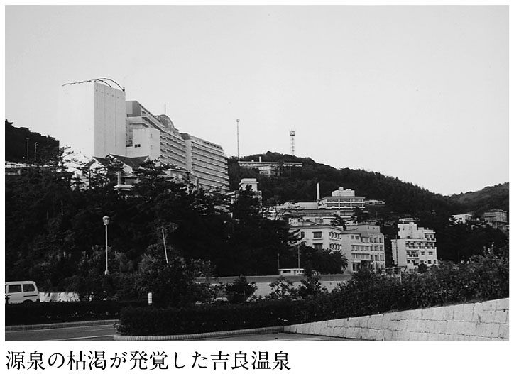
温泉法の大きな矛盾とは何か。ひとつは、温泉とは何かということだ。温泉法では、「地中から湧出する温水等で、泉温が二十五度以上、または水素イオン等の特定の物質を有するもの」と規定されているだけである。つまり二十五度以上あれば、何の成分がなくとも温泉と称することができるのである。なぜ適温といわれる四十二度ではなく、二十五度なのか。ここまで五十年間、それが説明されたことはない。
特別な成分が認められない二十七度の温泉と称する水を入浴に適した四十二度に加温したものと、水道の水を四十二度に沸かしたものの違いは何なのか、誰が科学的根拠に基づいて説明できるのか。実は吉良温泉の事件は温泉法の見直しを迫るものといっていいのである。
もうひとつは、今回の事実が温泉を管轄する環境省などの役所によって明らかにされたのではなく、たまたま取材に訪れた新聞社によって暴かれたということだ。吉良が温泉を掘り当てたのは、一九五五年のことだ。放射能泉の冷泉として県から許可を受けた。
現行の温泉法では、一度許可を受ければその後の泉質を調査する義務は権利者にはない。役所も調査をするわけではない。これではこの種の事件の温床を放置しているも同然ではないのか。環境省は「十年に一度を目途とした泉質調査が望ましい」という通達を出しているが、それが実効あるものになっているとはいえない。いい換えれば、官庁は〝温泉〟という言葉だけを与えて、何の管理もしてこなかったのである。
この一件がきっかけになったのか、遅ればせながら環境省はここ十年で温泉資源がどれほど枯渇したのかを調査することにしたようである。二〇〇四年一月にかけて、過去十年に許可した温泉の掘削深度、一九九三年に各自治体が許可した温泉が、十年間でどのように変化したか、掘削や利用の許可を定めた要項や内規の内容などを都道府県を通じて調査するという。今回のような事態が明らかになった以上、せめてこの程度の調査は必要だろう。
この問題が発覚した直後、吉良温泉組合は県に対し「吉良温泉を名乗ってもよいのか」というお伺いを立てた。それに対し県では、銭湯でも○○温泉と名乗っているところがあるから、それは問題ないという見解を示している。現在の温泉がおかれている立場が、ここに如実に表れている。
結局バカを見るのは善良な市民ばかりということなのである。愛知県の対応からも分かるように〝温泉バカの壁〟を突破する第一歩は、情報公開を求めることなのだ。「お宅は源泉かけ流しですか」も、そのひとつである。この際、聞かないことの日本的美徳を捨てた方がいい。入浴料や入湯税を払うのはわれわれ利用者自身なのだから。
そして改めて考えさせられるのは、温泉という言葉の魔力である。温泉という言葉ひとつで、二十年にわたってわれわれを欺くことができるのである。いかにこの言葉が、日本人の体と文化と生活にしみ込んでいるかを表している。
本書の校正中、愛知県の読者Ｍさんからメールが送られてきた。
「今日の『中日新聞』朝刊に掲載された記事です。ひどい実態ですね。名古屋市内のスーパー銭湯にも岐阜県からローリーした湯を使った浴槽がありますが、『運搬頻度』を見ると、怖くなってきました」
Ｍさんから添付されてきた『中日新聞』（二〇〇三年十二月十九日付）の記事は次のようなものであった。
「吉良温泉が源泉枯渇にもかかわらず天然温泉と偽っていた問題を受け、（愛知）県は十八日、県内の源泉百十四カ所と二百七十八施設に対する一斉調査の結果を発表した。温泉法に基づく利用許可を得ずに温泉を使用していた事例が十五件、温泉成分などの掲示がなかったり誤記されていた事例が二十八件あった。『いずれも意図的な無許可利用とか虚偽掲示はなく、軽微な違反事案』（県自然環境課）といい、県では温泉法の周知を徹底する」
温泉に対する信頼を著しく失墜させた吉良温泉を監督する立場にある県のコメントとは思えない。湯あたり症状も甚だしい。温泉成分などの掲示は温泉施設が最低限守らなければならない義務なのである。これを行政マンが「軽微な違反事案」とコメントしていいのだろうか。どうせ温泉分析表を掲示しても、湯船の温泉成分は源泉と異なっているから意味がないと先読みでもしているのだろうか。
温泉法の第十三条で「温泉の成分等の掲示」に関して次のように規定されている。
「温泉を公共の浴用又は飲用に供する者は、施設内の見易い場所に、総理府令の定めるところにより、温泉の成分、禁忌症及び入浴又は飲用上の注意を掲示しなければならない」
この掲示は、いわば利用者に対して当該施設が「温泉」であることを示すものでもあり、その掲示は温泉法で定められていることでもあるから、掲示していないことは決して「軽微な違反事案」ではない。愛知県のこうした認識が、吉良温泉の十年とも二十年ともいわれる水道水の〝天然温泉〟詐称を見逃してきた下地になっていたのであろうか。残念である。
『温泉ゼミナール』でタンクローリーで運ばれてくる〝天然温泉〟について触れたが、愛知県ではこのことについても調査結果を発表している。
「また、二百七十八施設のうち九十五施設が県内のほか岐阜、三重、長野県の源泉からタンクローリーで温泉を運搬して利用。
運搬頻度は月に一回が二十八カ所、一週間に一度が十一カ所、毎日が二カ所、不定期が五十四カ所だった。
県自然環境課は『湯の交換が適正にできているか若干心配があり、事業者には十分に注意してもらうよう指導していく』としている」
温泉好きのＭさんでなくても恐い話である。県の「湯の交換が適正にできているか若干心配があり」との湯あたり的なコメントはもっと恐い。
それにしても愛知県内の温泉を使用している二百七十八施設のうち、タンクローリーで他県等から源泉を搬入している施設が九十五、つまり三四％がタンクローリー湯であったことは驚愕ものである。愛知は全国一のタンクローリー湯の密集地帯といってよさそうである。何らかの法整備が急がれる。
私はやはり前著で、泉質の違う温泉の集中管理や加水、加温の問題を取り上げて、いまや一部の温泉経営者にとっては、温泉はただの温かい水であると書いた。今回の吉良の事件は、事実をもってそれを明らかにした、といえる。そしてそういう経営者ほど、日本人が強く濃くもつ温泉ＤＮＡを利用しているのである。
温泉とはどういうものかという、黙示の契約――私たちと温泉を提供する側との間には、長くその契約が守られてきた。ところが一部の経営者から、これが一方的に破棄されたのである。
今後こうした問題が続き、温泉法の見直しが提起されることは、おそらく時間の問題だろう。そうでなければ、温泉は遠からず日本人から完全に見捨てられてしまうはずである。そのとき問題になるのは、やはり温泉とは何かということだろう。
実は一九五八年に日本で温泉法ができる以前は、ヨーロッパでも日本でも温泉の認識は一致していた。しかも日本でいうなら、江戸時代からその認識は続いてきたのである。その認識とは、温泉とはまず鉱泉であるというものだ。
そもそも水は、常水と鉱水に分けることができる。常水というのはそのまま飲めるもの、いわば水道水である。一方鉱水というのは、鉱物質を含んだ水である。そして鉱泉は、その鉱水を生み出す泉なのである。
さらに鉱泉は、冷泉と温泉にわかれる。つまり温泉というのは、鉱泉の下に位置するものなのである。ということは、本来温泉は必ず鉱物質を含んでいるものを指していた。ところが日本では、温泉法ができた一九五八年にその概念に変更が加えられた。それ以前は、日本でも温泉とはまず鉱泉であると捉えていたのである。
本来の考え方に立ったなら二十五度以上あれば温泉などとはいえない。これを温泉と言いくるめたところに、今日の循環風呂乱立の事態に至る発端がある。もっと早い時点で国は、この二十五度以上という温泉の規定に対し何らかの手を打っておくべきだったのである。それを放置してきたことが、今日の混乱を招いたのではないだろうか。
今ひとつ考えさせられたのは、報道のあり方だ。今回は『毎日新聞』のスクープであったが、その後追いでもっとも詳しく報道すべき地元紙の扱いが、極めて控えめなものだった。私がそのことについて親しい記者に水をむけると、「いやー、地元は書きづらいかもしれませんね」という答えが返ってきた。この返答には、私も落胆した。
親しい間柄なので、その人も本音をいってくれたのだろう。しかし地元の観光業界などに遠慮をして新聞が報道を地味にするというのなら、これは本当に許せない。どのような理由があろうとも、今回のことは吉良温泉の利用者に対する背信行為である。報道機関はもっと厳しく追及すべきだし、むしろ地元紙こそここで頑張ってもらいたい。残念である。
私は同様の問題を旅行専門誌にも感じていた。五、六年前の列島縦断の旅に際しては、さまざまなメディア、それこそ外国の特派員などからも取材があった。ところが日頃付き合いのある旅行専門誌からは、一向に取材がないのである。
私はあるとき思い切って親しい旅行誌の編集長に、もうすでに温泉の泉質や循環風呂の問題について取り上げるべき時期だと思うと話した。そのとき帰ってきた返答は、スポンサーが......というものだった。
このときにも私はがっかりさせられた。スポンサーのためにこそ、利用者の志向の変化をいち早く伝えるべきではなかったのか。利用者はすでに大型の旅館やホテルではなく、ホンモノの温泉でゆったりくつろぎたいと願っていますよと。現に今苦しんでいるところは、その志向の変化を捉えられなかったところなのだから。
ちなみにその旅行誌は六年も経過した今頃ようやく「源泉」の特集を組んだ。編集長が女性になったからだろうか。
吉良温泉の問題を真っ先に報じた記者は、九月十一日の記事で取材の総括をしてこう記している。
「取材が一段落した日、吉良の温泉街を望む砂浜で、今回の問題を振り返ってみた。目の前には三河湾国定公園の美しい海岸風景が広がる。ふと『温泉枯渇が世間に知れたら死活問題だ』と語った、民宿の主人の困惑した顔が浮かんだ。しかし、その考えは違うと思う。利用客はのんびり湯船で日常生活のストレスを癒すために訪れる。客への背信行為は、どんな理由があろうと許されない」
温泉で生計を立てている人々の姿に接したとき、この記者に一瞬の逡巡がなかったとはいえないだろう。むしろそういう逡巡をもつ人だからこそ、報道の正義が貫けたのかもしれない。辛い思いもあったことと想像するが、まことに立派な態度であったと思う。
二〇〇二年の温泉界を揺るがした問題が、日向サンパーク温泉でのレジオネラ症事件であったとするなら、二〇〇三年は、公正取引委員会（以下、公取委）が行った温泉表示に関する実態調査で大揺れに揺れた。
温泉を利用する人々が、温泉という言葉だけでは安心できない、レジオネラ菌は大丈夫なのか、そもそもそれはホンモノの温泉なのか、と考えはじめたのは、『温泉ゼミナール』がひとつの端緒であったと私はひそかに自負している。そしてそれによって、日本の温泉復活の道が拓けてきたことが実感できる、いくつかの嬉しい現象も確認してきた。
また田中康夫長野県知事がいち早く鮮明にした、情報公開こそ温泉の生きる道という先進的な改革、しかしまたそれがある勢力に押し戻されていく、そういう行きつ戻りつを繰り返しながらも、少しずつだが利用者が確実に正しい情報を得られる方向に進んでいくのを実感してきた。
しかしその私にしても、二〇〇三年夏に突如公取委が温泉の表示問題に動き出したことは、驚きだった。しかしそれは温泉関係の官庁といえば、環境省（旧環境庁）、厚生労働省（旧厚生省）、国土交通省（旧運輸省）という先入観があったためで、これまでの一連の流れを冷静に眺めれば、決して予測できないことではなかった。
それはおそらく食品の表示問題が、大きな流れを作ったのだろう。健康に関わる問題に国民が敏感になり、しかもその問題や疑問を放置しなくなった今の日本人であれば、温泉についても遅かれ早かれこうした機関に訴える動きは出てきたことだろう。温泉を安心して享受したいという利用者の動きは、温泉を提供する側の予測をはるかに越えているのである。
プロローグでも書いたが、私が知る多くの温泉旅館では、予約などの問い合わせの際に聞かれる内容が確実に変わってきている。たとえば北海道八雲町の「銀婚湯温泉」では、二〇〇二年の夏の時点で問い合わせ中の三割が「お宅は循環風呂ですか。かけ流しですか」というものだったという。
また最近取材した群馬の山の中の温泉でも、問い合わせの半数が「お宅は源泉かけ流しですか」というものだと聞いた。ここではかつて一番多かった質問は、「露天風呂はありますか」だったという。数年前まで続いていた露天風呂ブームはすでに下火になり、完全な泉質本意、本物指向に変わってきているという。
温泉地単位でも観光協会の事務所にかかってくる電話の多くが、かけ流しの宿を教えてほしいというものだという。そして今問題なのは、そういう問い合わせがあった場合にその事務所が対応できるかということだ。例えば群馬県の四万温泉などの場合は全部の宿がかけ流しだから、これに完全に対応できる。四万温泉急伸の原因は、はっきりここに出ている。
それに対し、群馬でもやや大型の温泉地となるとそうはいかないようで、実際に客足を落としているところがある。観光協会事務所でそういう対応ができないところである。それはその温泉地を構成する個々の宿の問題でもあろうし、温泉地全体がまだこうした傾向に気付いていないか、もしくは気付いていても対応できないかだろう。ひとつ視点を変えてみると、好不況の原因も意外にはっきりと見えてくるものである。
そもそもなぜ、こうした質問が寄せられるのか。それは宿や旅行社が作るパンフレットでは、温泉の内容がどうなのか一切分からないからである。宿や風呂場の写真、泉質や効能などはあっても、かけ流しなのか、加水されてるのかという部分についての情報はほとんど提供されていない。ところが、今や利用者の一番の関心はここにある。まずは循環風呂か、源泉一〇〇％かけ流しかということだ。
利用者から温泉の情報公開の声が高まるなか、社団法人「日本温泉協会」も二〇〇三年の春から一部の会員施設で、五項目三段階の「新天然温泉表示」を開始した。当初の案はこういう形ではなかったし、また紆余曲折を経て行うことになったこの表示も多くの問題を抱えている。しかしこれまでほとんどタブー視されてきた温泉の質に、ひとつの業界団体が動き出したことは一定の評価ができるだろう。今年から二年間は試行期間ということになっているのだから、二年後の本格実施の際には是非利用者が完全に納得できるより良い制度にしてもらいたいと願っている。
日本温泉協会というと、なにか日本の温泉界で指導的な立場で活動している温泉の総本山のように思われる方も多いかもしれないが、実際には会員数千九百軒の団体にすぎない。日本全国には二万二、三千軒の温泉施設（温泉旅館、日帰り施設等）があるから、全体の一割にも満たない加盟数である。しかも現在の表示制度に参加しているのは、そのうちのわずか三百軒。動き出したかに見える情報開示だが、実状はまだまだこの程度なのである。
しかし私は、まだまだあきらめてはいない。現在はまだせせらぎともいえないほどの小さな流れではあるが、必ずこれは大きな本流になるはずである。なぜならこれは、小なりといえども利用者の声から起こったことだからだ。
公取委の実態調査、それに続く誇大表示への警告、これはともに大きな衝撃を与えたが、ここではまず二〇〇二年から始まっていた日本温泉協会の動きからみていきたい。動き出したことを評価するといっても、そこには多くの問題があるし、ここに至る流れにも不透明なものがあった。
実は私自身、日本温泉協会の個人会員である。この協会の中心的なメンバーは温泉経営者であり、会長を始め役員のほとんどもそうである。だが私のような研究者も一部にはいる。日本温泉協会はそういう団体である。
その日本温泉協会が、循環湯の問題などについて検討しているということは知っていた。しかし正直なところそれを前向きに検討するような組織ではないし、具体的にそれを公表するなどとは私は考えてもいなかった。はっきりいうと、それは不可能だと思っていたからだ。
ところが二〇〇二年の一月に、『東京新聞』の記者が私にコメントを求めてきた。その質問の内容は、日本温泉協会の中で泉質などについて協会としても何か行動を起こさなければならないという考えがあるようだ、具体的には、ミシュラン方式の五つ星制度を考えているらしい、というのである。初耳であった。ついては私の著書などがきっかけになったようだから、コメントがほしいということだった。これは「評価制度導入へ」の見出しで一月二十八日の紙面に載り、結果的に『東京新聞』のスクープとなった。
しかし私が想像するところでは、この時点では協会全体でそれほど具体的なコンセンサスがとれていなかったように思える。むしろ、こういう記事が出たことでマスコミの取材が殺到し、協会側も導入の方向に動かざるを得なくなっていったのではないだろうか。
というのも、結局この五つ星制度は二〇〇二年六月の総会で決定したにもかかわらず、非常に不透明な形で消えてしまったのである。公的な機関である総会で決定していたものが、二カ月半後の九月上旬には委員会で覆された。マスメディアを始め、外部に発表してしまったあとに、こんな不透明なことが起きたということはよほどの事情があったと考えるべきだろう。
内部に強硬な反対があったことは想像がつく。しかもそういう勢力は、マスコミが取材に入った総会などではとても発言できない。発言できるのは、せいぜい会議室という密室の中だけである。総会後、そこから強硬な反対が出たのではないか。おそらくは、宿の存亡に関わるといった、経営者の立場からの反対意見を抑えることができなかったに違いない。
あえて私はマスコミ先行という言い方をしたが、要するにそれが世論なのである。そしてその世論の方が、情報公開についてははるかに進んでいる。日本温泉協会は、利用者を対象としたアンケートを毎年三月に東京駅での「旅と温泉展」で行っているが、そこではなんと九七パーセントの人が温泉にも情報公開推進が必要、と回答しているのである。これほどたしかな世論はないだろう。ところが日本温泉協会は、到底その世論についていけなかった。その結果五つ星制度は消えてしまった。それが真相ではなかったのか。私はそんなふうに推測している。
しかしこの五つ星制度は、非常にインパクトがあった。おそらく日本温泉協会が設立されて以来もっとも脚光を浴びたのが、この五つ星制度だったろう。一般の人々は、日本温泉協会の存在すら知らなかったろうし、マスコミも同様だったかもしれない。しかしこれが話題になっていた頃は、「日本温泉協会が風呂の五つ星制度を始めるんですね」という言葉が私の周囲では挨拶代わりになっていた。
明らかにそれは、ミシュランの五つ星という極めて分かりやすい制度に対する、一般の利用者からの期待だったはずである。それも日本温泉協会の役員が想像もできないほどの大きさだったろう。私はこれが挨拶代わりの話題になるたびにひしひしとそれを感じ、同時に本当にできるのかという不安を抱いていた。
期待の大きさは、利用者側の話題性にとどまらなかった。施設側からもこれを後押しするような動きが出てきたのである。というのも、この五つ星制度の話が出る前には千七百程度だった会員数が、新聞などで取り上げられたとたんに約二百増えて千九百になった。これはこれまで会員になっていなかった日帰り施設などから、趣旨に賛同して新規入会者が続出したからである。制度への期待がここにもうかがえた。
私が住んでいる札幌市南区には定山渓という大規模な温泉地があるが、さらにその奥に若い人たちに大人気の「豊平峡温泉」という日帰り施設がある。私の評価としては、これは大雪山中の秘湯に匹敵する一級もの。百八十五万都市の一角でこれほどの湯質が保たれているとは驚きなのである。まさに札幌の秘湯である。
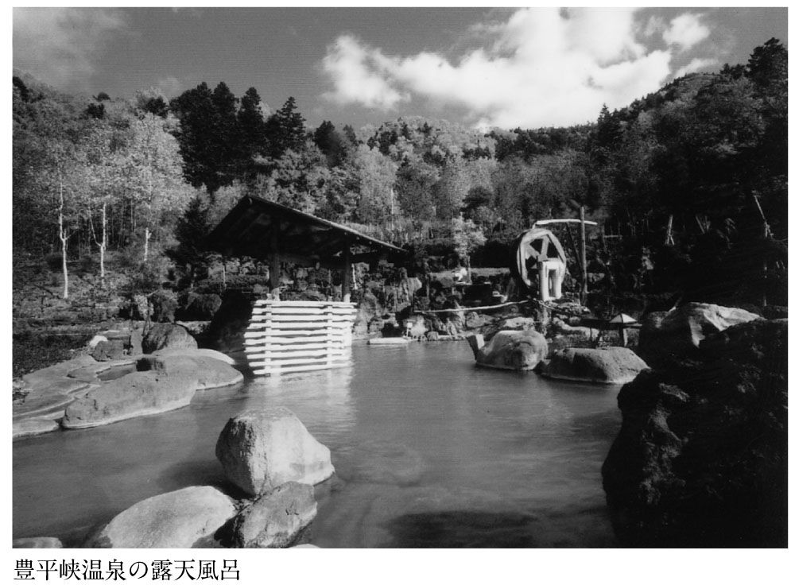
五つ星制度が話題になっていた頃、私はたまたまこの豊平峡温泉に出かけた。するとこちらの尾中社長が突然、「ウチは今度日本温泉協会に加盟を申し込みました、五つ星のついた看板が来ることを非常に楽しみにしています」というではないか。なんと新加盟組が、ここにもいたのである。
「豊平峡温泉」は、お湯に一滴も水を加えないばかりか、タンクにも貯めないようにしている。湯温の高いところでは、タンクに貯めて温度を調整するところも多いのだが、その分お湯は酸化して劣化する。尾中社長は素人の段階からそこまで学んだ勉強家である。
清掃にも気配りが行き届き、露天風呂は北海道的なスケールの大きさなのに一日おきに湯を抜く。内風呂もかなり大きいのだが、これは毎日抜いて清掃している。もちろん両方とも、最高の温泉をかけ流しの状態で提供している。
利用者の年齢層を見ても、若い人達が女性を中心にどんどん来る。お湯の良さに完全に取り付かれ、二十歳前後の人達がリピーターになっているのである。利用価格は千円と、北海道では圧倒的に高い。建物はお世辞にも立派だといえないバラック風である。にもかかわらず、若い人達で連日賑わっている。まさにお湯の良さ、環境の良さ、露天風呂の爽快さに引きつけられているのだ。尾中社長は五つ星間違いなしの自信をもって、勇躍日本温泉協会に加盟したのである。
ちょうどその一年後、私は再び尾中社長と顔を合わせた。すると「日本温泉協会は脱会しました」という。なるほどと思いつつ理由を尋ねると、「いや、五つ星制度をやるといっていたのに、全然違う制度になってしまった。しかもそれはペテンだった」と吐き捨てるように語った。
私もペテンとまではいわないが、後述する五項目三段階表示は、五つ星制度に比べて非常に分かりづらい評価になっている。相当な注意力をもたなければ、利用者に分からない評価方法といえるだろう。なにしろ一旦決めた五つ星を撤回した組織が、新たに打ち出してきた制度なのだ。その内容は推して知るべしである。一年間に増えた二百軒ほどの新規加盟組の多くは、同じように失望しているのではないだろうか。
このことは、マスコミの扱いひとつを取ってみても分かる。五つ星制度という言葉が流れた時には、マスコミ各社が動いた。二〇〇二年六月の熱海での総会にはテレビカメラも入った。だが今試行している五項目三段階表示については、報道は微々たるものである。私はテレビで見ることもなかったし、新聞などでの扱いも五つ星制度のそれに比べたら明らかに小さい。一般の国民も五つ星制度を始めることを知った人はたくさんいただろうが、五項目三段階方式で試行が始まったことはほとんど知らないのではないだろうか。
漏れ聞こえてきた反対勢力の意見は、五つ星が旅館やホテルそのものの評価につながることを恐れたという。だがなぜそれを恐れる必要があるのか。日本人は温泉があるから、温泉の暖簾があるからこそ温泉宿に泊まりに行くのである。その一番の基本の部分が評価され、宿の評価になるのは当然ではないか。どうして逃げるのか。これ自体が、まったくおかしなことなのである。
宿の評価を総合的にしてほしいというなら、それは別に設けたらいいのだ。しかしそもそも一般の利用者の立場から考えれば、風呂の評価が宿の評価であって何が悪いというのだろうか。私にいわせれば、まず風呂が良くて、その上であそこはさらに料理がいいぞ、女将がいいぞということになるのが温泉旅館・ホテルの評価であるはずだ。だからこそ、シティホテルよりも高い料金を取ることができるのである。温泉がなく、料理や設備だけならホテルに負ける宿の方が多いだろう。
要するに日本温泉協会は、利用者の視点に立てなかったのである。結局は経営者の視点に立ったという時代錯誤的な感覚が、五つ星制度を潰したのである。
二〇〇二年六月十八日、熱海温泉で日本温泉協会はこの年の総会を開いた。私はこの熱海で、五つ星制度という泉質や温泉のあり方に関わる革新的な制度がアピールされることは、非常に意味深いことだと思っていた。これによって熱海に温泉の良い部分のイメージを付加してもらいたかったし、また同時に熱海が変わっていくきっかけにもしてほしかった。
かつて熱海は、全国の温泉関係者がはるかに仰ぎ見る存在だった。家康以来の江戸の湯治文化、明治に入れば尾崎紅葉のベストセラー『金色夜叉』のお宮の松、そして一九六四年の東京オリンピックの年には新幹線が停まる最初の温泉地ともなった。そう、熱海は常に時代の脚光を浴びてきたのである。しかしそういう日本でも最大級の温泉地であったがゆえに、今この時代に危機を迎えた。そこにはホンモノの温泉を求める現代人の指向が的確に掴めなかったということがあったはずである。そこから五つ星制度は出発するのである。この意味は大きかった。
私自身、重要な意味を持つものだと思ったから、個人の会員として参加しようと思っていた。ところが日が迫るに従って、テレビをはじめマスコミ各社から当日コメントがほしい、インタビューをさせろという申し込みが次々に寄せられた。
個人の一会員である私は、役職に就いているわけでもなんでもない。総会当日の主役でもなければ脇役ですらないのである。会場の隅にマスコミが集まったのでは協会に迷惑をかけるのではないかと危惧し、直前まで迷いながら当日になって出かけるのを取りやめた。後日数社から苦情をいわれたが、これは私なりに配慮をしたつもりだった。
ところがその総会で決まり、マスコミにも発表されたことが、非常に不透明な形で撤回された。撤回された経緯も、五つ星制度をやめて違う形にするということも、全国紙にはまったく発表されなかった。唯一『朝日タイムズ』という業界紙だけが、九月の中旬（撤回が決まったのは九月上旬）にそのことを業界の内部ものとして書いたのみであった。
ちょうどこの頃、私は自らが編集長を務める雑誌『温泉主義』（くまざさ出版社）に、五つ星制度の問題点を指摘して発表していた。評価制度を設けること自体には賛成であったが、入手したその詳細にはまやかしとも思える点がいくつもあったからである。ところがこれに対し、日本温泉協会からは何のリアクションもなかった。それもそのはずで、雑誌が発売された九月上旬にはすでに五つ星は消えていたのである。
五つ星制度が撤回されて、五項目三段階表示に代わったことが一般の新聞に載るようになったのは、ようやく二〇〇二年の年末あたりになってからだ。『北海道新聞』が比較的早かった。全国紙には年が明けた一月に入ってから、ようやく小さく紹介された。しかも続けてフォローしていた記者がいなかったのか、五つ星が消えたことには触れずじまいの記事が多かった。記者が知らなかったとすれば、日本温泉協会の作戦勝ちということになる。
この五つ星制度は、一般の市民、マスコミというところからの支持だけでなく、一部の温泉宿からも非常に支持を受けていた。長い歴史を持ちながら、山深い土地で苦労していいお湯を守ってきた温泉宿が、ようやく自分たちが評価される時代がきたことを喜んだのである。古い温泉宿にとっては、私のような一学者が書くよりも、社団法人日本温泉協会のお墨付が貰えるほうが、ずっと勲章と感じられたことだろう。
それでは二〇〇三年五月から、一部のモデル施設で掲げられることになった五項目三段階表示の実態を見てみることにしよう。
私は五項目三段階表示といっているが、日本温泉協会ではこれを新しい「天然温泉表示看板」と呼んでいる。協会においてはあくまで、これは天然温泉であることを表示する看板なのであって、温泉の情報はついでにくっついているもののようである。名称からして、蓋をした容器の中から、何やら生臭い臭気が漂ってくるではないか。
もっとも一九七六年から協会が発行してきた「天然温泉表示看板」には、「環境庁・運輸省許可」という文字が頭にどーんとのっていた。省庁再編というお祭を経て、いまやこれは環境省、国土交通省へとそれぞれ衣替えした。この看板は、これに伴いデザインを変更したという一面も確かにあるのだ。
では新しい「天然温泉表示看板」を見てみる。なるほどこれはたしかに「天然温泉表示看板」である。全体の三分の二ほどは、天然温泉であることを表示するためにスペースが割かれている。そしてその下方に目を転ずると、そこには「天然温泉利用証」というものが貼られている。私のような温泉の専門家がこの内容を見て、ようやくこれが温泉の情報を記したものであることが了解されるのである。
これは一体どういうことか。これではまるで、目的の部屋に入るまでに紛らわしい看板が掛かった入口を二つも通らねばならないのと同然ではないか。これでは協会が会員に説明している新看板の趣旨にも反しているのではないか。
「新しい『天然温泉表示看板』について」と題された協会の文書には、こう書かれている。「新しい『天然温泉表示看板』は、温泉の情報公開を主眼にしたもので......」。
「主眼にした」と自ら書きながら、この分かりにくさはどういうことなのか。主眼にするというのなら、スペースの面でも、その名称の面でも、もっとストレートな誰にでも分かるものを使用すべきだと思うのだが、どう見てもこれはそうなっていない。ここに今回の及び腰の実態が如実に表れているのだが、こんなところでうろうろしてもいられないので先に進むこととする。
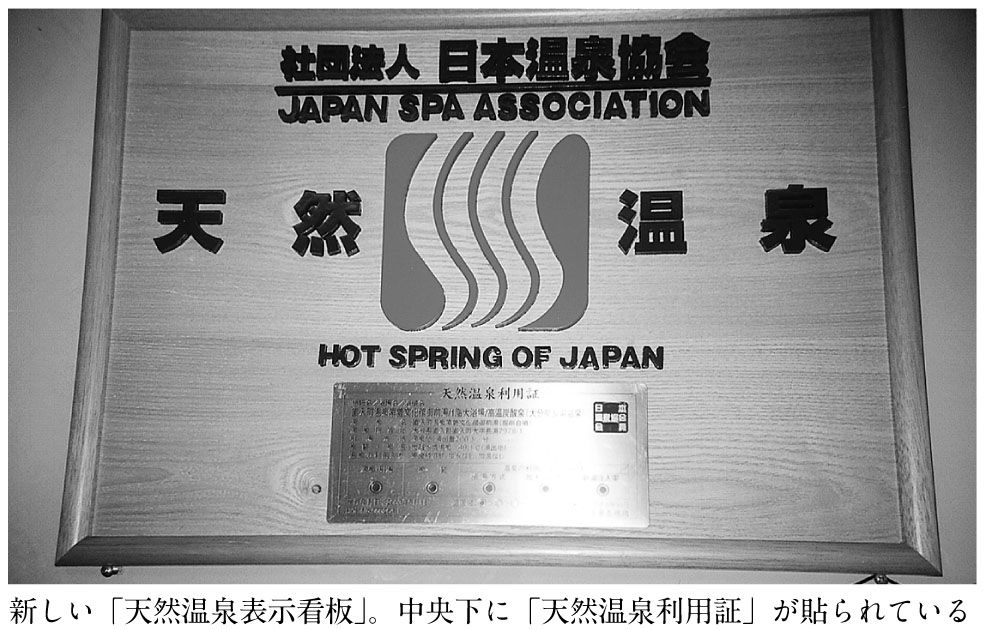
ネガティブなことばかりいうようだが、例えば今回の評価基準でもっとも良い⦿が五つ並んだこの利用証が掲げられていても、それが一枚だった場合には、いくつかある浴槽のうち、ある一つだけがその評価を満たしているということになる。浴槽が三つあったら、三つ全部がその評価ではないということを知っておいてもらいたい。そうでなければ、せっかく「最上級の評価の風呂」という惹句に惹かれて行っても、循環風呂に入ってしまう可能性があるからだ。
さて、その中身である。これは、「源泉・引湯」「泉質」「給湯方式」「加水の有無」「新湯注入率」という五項目を、⦿、◎、○の三段階で表示するというものである。ここで、「ん？」と首を捻られた方も多いことと思う。そう、表示は⦿、◎、○と全部丸なのである。⦿は「適正なもの」、◎は「おおむね適正なもの」、○は「それ以外のもの」を示すという。面白い日本語の使い方があるものだ。「それ以外のもの」ではなく「適正ではないもの」とするのが筋であろう。具体的に考えてみよう。
例えば全項目に○が並んだ、つまり全項目において最低ランクの評価が並んだ風呂があったとしよう。それを日本人が見た場合、どう判断するだろうか。なにしろ丸なのである。日本人は丸をもらったら喜ぶものだ。その喜ぶものがずらりと並んでいるのである。○しかなかったら、それはオール５と判断されるのではないだろうか。
もちろん日本温泉協会は、親切にもきちんと凡例を付している。この五項目の表の下には、「適性度：⦿＞◎＞○」と表示されている。近頃老眼の進んだ私の目にも鮮明に見えるかどうかは、また別問題としよう。
まあ、これをどう判断するかは、見る人個々の問題なのかもしれない。私が「全部丸じゃないか」と目くじらをたてても、「いいじゃないか」という人もあるのかもしれない。しかし私はあえて率直にいいたい。これは分かりにくい。利用者が一目で分かるものと考えれば、「適性度：○＞△＞×」とするのが適当ではないだろうか。
どうも話がスーッと流れていかない。気を取り直して先に進むこととする。五項目の内容は表１の通りである。
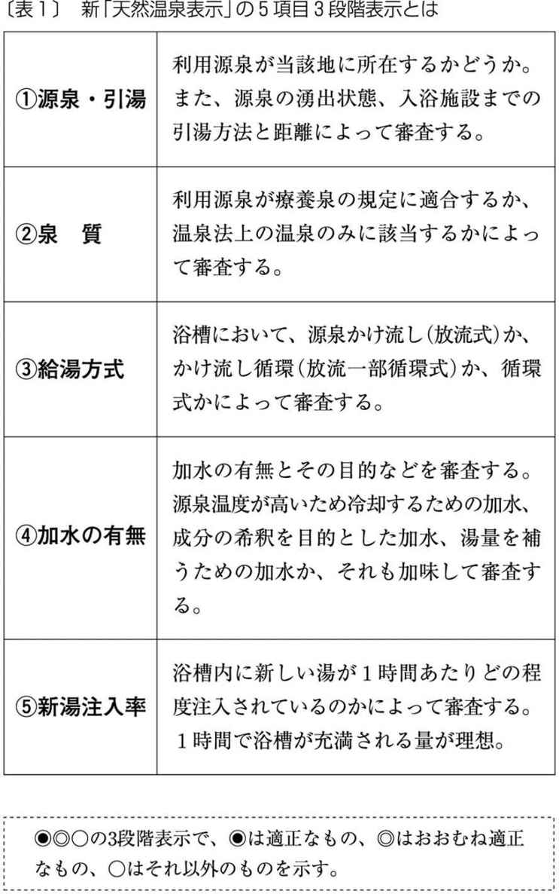
どうだろう。ここまできちんと項目が決められていたらもう逃げ道はない、完璧な情報開示だ、そう感じられた方も多いことだろう。しかし温泉というものは、そう簡単に一筋縄でいくものではない。しかもこれを⦿＞◎＞○というまことに紛らわしい表示で表すのだ。これらの記号が表す意味も利用者にとってそう誠実なものでないことを知った以上、充分心してかからなければいけない。
先入観をもって読む人が多いので何度も繰り返さねばならないのだが、私は循環式を悪だなどというつもりはまったくない。清掃と衛生管理をきちんと行い、それを誰にでも分かる形で表示し、利用者もそれを納得したうえで提供されるのならば、循環風呂には何の問題もない。提供したい人と利用したい人同士で、やっていただければよいことである。
しかし温泉の質ということを問題にした場合には、循環式がかけ流しの風呂の上位にくるということはないだろう。それが利用者の常識だろうと考える。仮にも今回の方式が、⦿＞◎＞○という三段階表示をしたのならば、そういう常識が適用されるべきだろう。それが利用者のための情報公開というものである。果たしてこれはそうなっているだろうか。利用者の関心が高い、循環かかけ流しかという点に注意して見てみよう。
給湯方式のところで説明されているように、循環式には大きく分けて二種類ある（細かく分ければもっとあるのだが、ここでは仮にそうしておく）。
ひとつは家庭にある二十四時間風呂と同じく、最初に温泉を満たしたらそれを循環させて使うものだが、温泉では新湯をまったく補給しないものはほとんどない。
もうひとつは、一部循環とか半循環などといっているもので、浴槽の中の湯は循環器に回され浴槽の中に戻されるが、新湯は浴槽の上から入れられ、かけ流し状態のように湯を溢れさせるものである（一部にはそれをも循環させるものもある）。
最初の「源泉・引湯」と「泉質」の項目は、かけ流しかそれ以外の方法（一部循環、循環）かは問題にならない。源泉がどのようにどれくらいの距離で湯船まで運ばれてくるか、またその使用されている源泉の泉質はということが審査の対象だからである。
つまりここをチェックすることは、循環かかけ流しかを見分けるポイントにはならないのだが、湯の鮮度を見るには、重要なポイントなのである。だが、これがよく分からない。というのも、協会が見本としてメディアに出しているものを見ると、表の上の源泉名・引湯方法のところが、「動力揚湯 混合泉 パイプによる引湯」となっているのに、表の源泉・引湯の部分が⦿になっているのである。
それでは、自然湧出している源泉の上にある温泉――例えば法師温泉や蔦温泉などがそうである――と同じ評価ということになる。一体これはどういう状態ならば、◎以下の評価になるのだろう。
動力揚湯というのは、動力泉などともいうが、要するにポンプで汲み上げなければ地上まで達しないか、湯量が少ない温泉のことである。草津のように知る人がないほどの昔から自然に湧き出しているか、黒川や由布院のように掘削して湯脈に当たればあとは自然に湧いてくる温泉とは、明らかに一線を画すものである。にもかかわらずここでは⦿になっている。
混合泉というのは、複数の源泉の湯を混ぜているということで、温泉を集中管理している城崎や下呂などのような温泉のことである。これは、かなり昔から混合泉にしているところもあるので難しいところだが、温泉は同じ温泉地であっても湧出口が百メートルも離れれば泉質がまったく違うこともあるので、一本の源泉をそのまま供するにこしたことはないといえる。しかしそれでも⦿である。
そもそもこの項目は、三段階評価にすることでむしろ分かりにくくなるのではないだろうか。自噴泉か動力泉か、単一泉か混合泉かということを単純に表示する方がずっと分かりやすい。
これは「給湯方法」についても同様だ。泉質の審査基準には「浴槽において、温泉がかけ流し（放流式）か、かけ流し循環（放流一部循環式）か、循環かによって審査」と書かれているが、それならかけ流し、一部循環、循環と書いた方が明快だろう。わざわざ三段階表示にして、一体何を審査するのだろうか。
私が一番問題だと思うのが、「新湯注入率」である。これは、新しいお湯をどれだけ注入しているかということだ。かけ流しが新しいお湯を常に注入しているのは当然だが、今回の審査基準では、高温の湯を冷ましながら少しずつ流すのは評価が低くなってしまうのである。
しかし、例えば八十度の温泉を持っている長野の五色温泉では、八十度もの源泉に水を一滴も加えずに提供している。つまり、源泉一〇〇％である。これには湯船までの湯量を絞るなど、昔からあるさまざまな技術が使われている。だが、今回はそれでは評価されないのである。源泉一〇〇％にもかかわらずである。
今回の場合浴槽の大きさによっても違うのだが、浴槽の湯が一時間で全部新しい湯と取り替えられるかが大きなポイントになっている（この基準のためか、法師温泉「長寿館」の有名な大浴場「法師乃湯」も、「新湯注入率」は◎！）。もちろん適温である四十二、三度の温泉が常にどんどん注ぎ込まれるのが一番良いのは当然である。しかし、湯の質を落とさないために豊富な湯量を調整して供しているところが評価されないのは、どうも納得がいかない。
実は私は、ここにひとつの疑念をもっている。それは、「加水の有無」という項目との関係である。先ほど私は、最初に五つ星制度が提案された際にその問題点を雑誌『温泉主義』（二〇〇二年九月、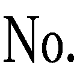３）に書いたことを紹介した。その時の問題点が、この加水のことだった。
今回の審査基準（五項目三段階表示）はよく分からないのだが、五つ星のときにはポイント加算制で表２のような方式になっていた。
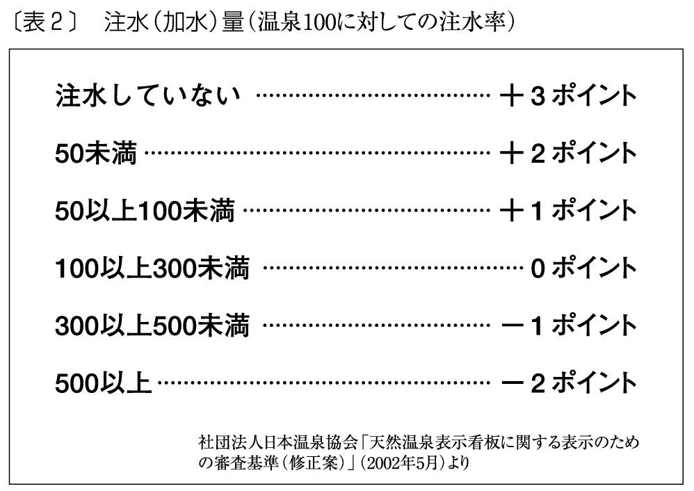
はっきりいって、加水に対しては非常に基準が甘いのである。なにしろ、温泉水を倍に薄めても一ポイントが加算されるのだから。
今回の審査基準の詳細は公表されていないため、私の推測であることを断っておくが、当初の五つ星制度の基準から類推すると、一〇〇未満なら、◎になる可能性が考えられる。もし仮にそうならば、源泉一〇〇％の湯を絞って注ぎ込んでいる風呂に対する評価に比べて、これは著しくバランスを欠いた基準になりはしないだろうか。
加水は泉質に直接影響する。泉質を重視するならば、加水についても厳しい基準をもってもらいたいと考える。なぜなら、今回の場合「泉質」という項目を立てて重要視しているからだ。しかしこの審査基準は「利用源泉が療養泉の規定に適合するか、温泉法上の温泉のみに該当するかによって審査」としているように、あくまで源泉の泉質なのである。だが問題は、浴槽の泉質ではないのか。なにしろ、この利用証は、浴槽ごとに与えられるものなのだから。
源泉の泉質を強調しながら、一方で加水はあまり問題にならず、適温にするために湯を絞っているところがマイナス評価になるなら、バランスを欠くというより大いなる矛盾である。本来、良質の源泉をいかにそのままの状態で湯船までもってくるかが、評価の基準になるべきではないのか。それが、浴槽ごとに評価することの基本思想だろう。
細かく見てみよう。「加水の有無」であるが、加水されていなければ⦿、「高温泉の温度調整のための加水」であれば◎、「それ以外の目的による加水」（筆者注：湯量不足等による水増し）は○とある。こと泉質に関していえば、理由はどうであれ加水すると温泉成分が著しく低下することは確かである。ちなみに「源泉のままでは成分等が濃すぎて入れない温泉がある。だから加水はやむを得ない」との温泉経営者からの声をよく聞く。だがこのような例は実際には玉川温泉（秋田県）など、わずかなのである。
日本温泉協会が泉質本意で評価するというなら、それはよいと思う。私も賛成だ。だがそうならば、それが利用者によく分かるようにしてもらいたい。それが多くの人の願いに違いない。利用者は評価をしてほしいのではなく、判断するための情報や材料がほしいのである。勘違いしないでいただきたい。
私は奥歯にものが挟まったような言い方はしたくないのではっきりいうが、この五項目三段階表示は分かりにくい。利用者が温泉を判断する情報にはなりえない。しかも、もっとはっきりいえば、故意に分かりにくくしているとしか思えない。前の項で疑問点をいくつか提出した。全体をいえばそういうことである。
なぜ浴槽ごとに審査するのに、源泉の泉質のみを審査するのか。
なぜかけ流しか一部循環か循環かを、⦿＞◎＞○の三段階表示にしなければならないのか。かけ流しか一部循環か循環かを、明示すればよいだけである。
わざわざ三段階表示にしたら、分かりにくいだけではないか。
なぜ加水せずに高温の源泉を絞って提供しているところが低評価で、なぜ加水することが前提になっているのか。
なぜ加水については一項目設けているのに、加温についてはまったく触れていないのか。
私はこれらの疑問に答えることができる。それは、いまや全国の温泉の七割を占めるという循環風呂をもつ施設や宿が、それを明らかにしたくないからである。必ずしも利用者のための情報開示ではないのである。
源泉の泉質のみを問題にするのなら、循環は問題にならない。⦿＞◎＞○で表示すれば、循環ということははっきり分からない。循環風呂なら、加水、加温は当然のことである。長野県議会に対し、循環だと表示したくない、と陳情した長野県の業者は今にして思えば、まことに正直な人たちであった。
何度もいうが、私は循環風呂は悪だ、この世から抹殺しろなどといっているのではない。循環風呂に入りたい人は、入ればいいのである。入りたい人の権利は認めるから、入りたくない人の権利も是非認めてほしいのである。でも、すべての施設が、循環かかけ流しかを明示しなければ、入りたくない人の権利は守られないではないか。利用者が求める情報開示というのは、そういうことなのである。日本温泉協会が業界のリーダーとしての自負心をお持ちなら、率先してこれに応えることである。
私は、五つ星制度が噂に出た頃には、何もしないよりはいいとコメントした。案が次第に明らかになってきたときには、その矛盾点を指摘した。しかしもっと根本のことをいえば、こんなものは利用者が求める情報開示ではないのだ。
利用者が知りたいことはもっと端的な情報である。湯はどこからどのような手段で湯船まで引かれているのか。湯は循環しているのか、それともかけ流しなのか。その結果湯船の泉質はどうなっているのか。加水、加温はされているのか。毎日湯船や洗い場の清掃は行われているのか。そういう簡単な事実なのである。
ところがこういうことをいうと、循環が悪いのか、という反論が必ずくる。だがこういう人も、自分のところが循環かそうでないかは決していわない。議論は必ず一般論である。循環は悪くないという信念があるなら、是非明らかな表示をしてほしい。循環は悪くないといいながら、循環であることを隠すのだけはやめてもらいたい。
もうひとつ不満を書かせてもらう。それは、日本温泉協会が相変わらず今回も「天然温泉」という言葉を使っていることである。温泉というのは、本来天然である。それにどうしてまた、天然という言葉をつけなければならないのか。私にはこれが分からない。
もちろん経緯は知っている。温泉マークが一時期、「逆さクラゲ」という隠語で連れ込みホテルのようなところを指すのに使われたからだ。そういう中で日本温泉協会は、危機感を持って一九七六年に「天然温泉表示マーク」の入った看板を協会の加盟施設に配ったのである。
しかし今、その手の宿泊施設で温泉マークを付けているところがあるだろうか。あったとしても、それは少数だろう。ならば日本温泉協会は、堂々と本来の「温泉」という言葉にこだわってほしい。それが、「温泉」という言葉を大切にすることではないだろうか。そもそも温泉法でも、「天然温泉」という言葉は認定されていない。
今や「天然温泉」は、循環風呂の隠れ蓑というのが、私の実感である。ホンモノの温泉を提供しているところで、「天然温泉」と表示しているところはほとんどない。少なくとも私の理解では「天然温泉＝循環風呂」なのである。そういう感覚も、是非日本温泉協会には持ってもらいたい。
日本温泉協会は、温泉という言葉に不安を持っているのだろうか。それとも何か物足りないのだろうか。それとも温泉法でいう温泉という言葉に、何か不満があるのだろうか。もし協会が、この業界の代表的な組織としてその自負心を持っているのなら、そして温泉法に何か疑問があるのなら、それは堂々と主張してもらいたい。
自ら温泉法改正の先頭に立って、温泉法の定義では温泉の真の価値は認められないから、「天然温泉」という言葉を使いたいとはっきりと主張してもらいたい。そうでないのなら、一般の利用者を混乱に陥れるだけである。これは長年私の心に引っかかっていたことなので、ここで書かせていただいた。
私はここで悪口雑言をいうことが目的ではない。だが、今回の試みは極めて残念である。是非二年後の正式なスタートの時までには、もっと分かりやすい利用者の側に立った情報開示をしてほしい。私が本書で「五項目三段階表示」について書くのは、それを諦めていない証拠である。
日本温泉協会は半世紀以上の歴史の中で、温泉の正しい衛生的な利用の仕方など、さまざまな面で素晴らしい啓蒙活動をしてきた。毎年三月に東京駅で行っている「旅と温泉展」、そしてそこで行っているアンケートなど地味ではあるが、内容の濃い活動を行っている。
五つ星制度に始まった今回の表示制度も、そのアンケートからでてきたものである。私はこうした試みも、日本温泉協会だからできたことだと思う。だが今回の表示ではあまりに残念である。吉良温泉のように水道水を沸かして平気で「天然温泉」と称したり、相次ぐレジオネラ菌感染死など、堕落した温泉業界への利用者の不信感を日本温泉協会は先頭になって払拭してもらいたい。是非あと二年間もう一踏ん張りして、良い制度にしてもらいたいと願う。そのためには、まず協会の加盟施設はすべて率先して情報公開に参加すべきだろう。公開は現在のところ任意なのである。
循環風呂を中心にさまざまな問題点を指摘してきたが、今日の結果はなにも経営者側にだけ一方的に責任があるわけではないだろう。利用者側もこれまで、例えば設備の便利さだとか、料理の豪華さなどを非常に求めてきた。
なぜそればかりを求めてきたかというと、温泉はあくまで温泉だと思っていたからである。かつては温泉と聞けば、それにマガイモノがあるとは誰も疑わなかった。つまり、あくまでも温泉のプラスアルファとして、設備や料理の良さを求めたのである。これもまた黙示の契約の上にそういう要望が出されてきたに違いない。だが、経営者側はそれを誤解したのではないか。そして今、温泉にホンモノとマガイモノがあることに消費者の側が気付いた。ところが今度は経営者側が、それに対して応えられなくなってしまっているのが現状なのである。
自分たちの身の丈に合った大きさの風呂、あるいは風呂の数を造ればよかったのに、自分の得られるお湯の量以上に大きな風呂場を造ったり、沢山の風呂を造ってしまった。多くの客をあてこんで、客室数も増やしてしまった。これを急に元に戻そうとしても、戻せないところがあるのだ。
それでも、多くの浴槽のうち一部を源泉かけ流しにして一部を循環にするなど、いろんな方法が考えられるのだが、もう今やそれができない、または、できないと思いこんでいる経営者がいる。
だが今は、利用者が温泉のあり方について、ちょっと前には考えられないくらい敏感になってきているし、その知識も格段に広く深くなってきている。二〇〇三年の七月末に発表された公取委の「温泉表示に関する実態調査報告書」は、明らかにそうした現象を背景にしている。
この調査の結論部分である表示上の問題点等については後に回すとして、いくつかの興味深いアンケート調査の結果をみてみたい。日本温泉協会などはこの結論部分だけをピックアップして、表示に気を付けましょうなどと会員に文書を流しているが、私にいわせれば何をいまさらである。これまで無意識にか故意にか、業界ではまったく不問に付されてきた問題が、白日の下にさらされただけなのだ。
まずアンケートは、利用者の情報源について聞いている。これは一番多いのが、旅館のパンフレット、二番目が書籍・雑誌である。このあたりは当然の結果ともいえるが、これらと大差ない回答数があったのが「友人・知人の紹介」、つまり口コミである。これも当たり前のことではあるが、如実に数字として表れている。
しかしさらに興味深かったのは、温泉に関する知識とその知識を元にした温泉の選び方である。これを見ると、温泉の〝業界用語〟とも思える言葉が、意外に広く浸透していることが分かるのである。
表１は、「『天然温泉』とは、どのような温泉だと思いますか」という質問である。一番多い「天然資源である温泉を利用している温泉」というのは、まさに読んで字の通りということだろう。
そして二番目には、「源泉をそのまま（加水・加温・循環しないで）利用している温泉」がきている。これは一番多い回答とは意味が違う。これを選んだ人たちは、源泉と湯船の湯が違うことを認識している人たちである。その上で、天然といえば源泉そのものだろうといっているのである。至極真っ当な認識である。
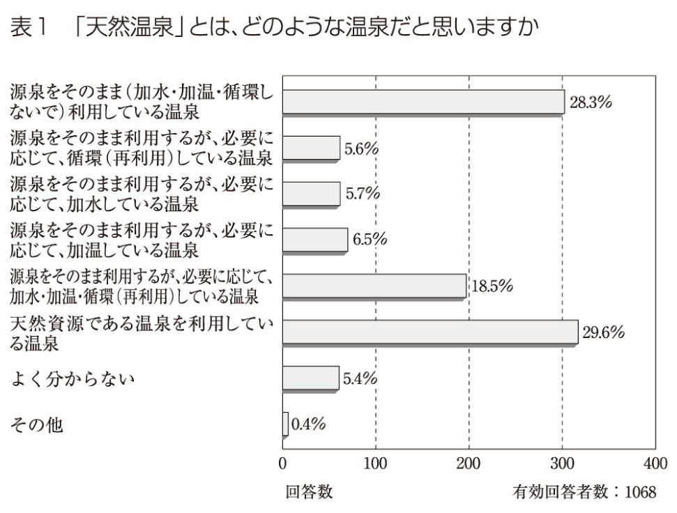
面白いのは、「源泉をそのまま利用するが、必要に応じて、加水・加温・循環している温泉」が、三番目に入っており、比較的高いパーセンテージを獲得している点である。私はこれを見て思わず笑ってしまった。利用者は理想と現実の乖離にちゃんと気付いているのだ。ちなみに私は大学の講義で、「『天然温泉』とはどんな温泉のことか？」と質問したところ、男子学生が「一カ月に一、二回しかお湯を抜かないような循環風呂のことです」と答えたものである。
表２の「『源泉一〇〇％』の温泉とは、どのような温泉だと思いますか」でも、同様の傾向が表れている。「源泉をそのまま（加水・加温・循環しないで）利用している温泉」という回答が一番多く、「源泉をそのまま利用するが、必要に応じて、加水・加温・循環している温泉」が三番目にきている。
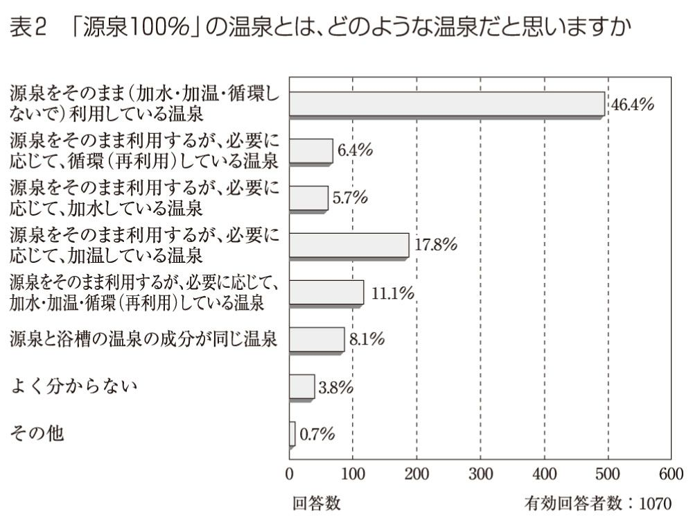
まさかそんな人はいないと思うが、この回答を見て安心する循環施設の経営者がいるといけないので、一言断っておきたい。利用者は決して現状を追認しているのではない。自分たちが求めているものが、現在の状況では得難いものになったという現実を知っているということである。もっというなら、これが続けば日本の温泉は、いつか完全に利用者から見放されることを示しているのだ。
それは、表３を見れば分かる。利用者がもっとも利用したいと思う温泉の表示（傍点は筆者。これは表示についてのアンケートである）は、やはり一位が「源泉一〇〇％の温泉」であり、二位が「天然温泉一〇〇％の温泉」なのである。
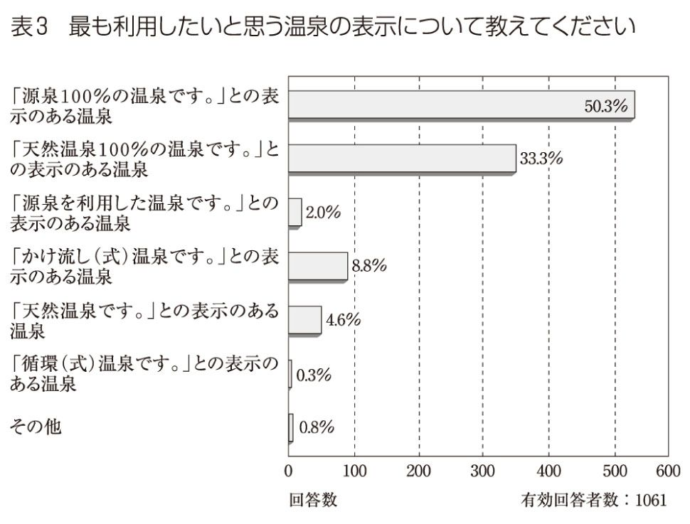
ここでもまた、誤解する人があるかもしれない。「ウチは『天然温泉一〇〇％』と表示している」と。しかし今や利用者は表示だけでは納得などしないのである。もっと厳しい、確かな目で見ている。
それが表れているのが、表４だ。今や、源泉成分と浴槽内の温泉成分が同じだと思っている人は、三割にも満たないのである。逆に違うところもあるだろうと考える人が、六割以上もいる。ホンモノの温泉に浸かりたいと願いながら、それが今や得難いものであるという現実をはっきりと認識している。悲しい現実であるが、利用者の温泉に対する認識は『温泉ゼミナール』以降、急速に高まっているのである。だから公取委が調査に乗り出したのであろう。
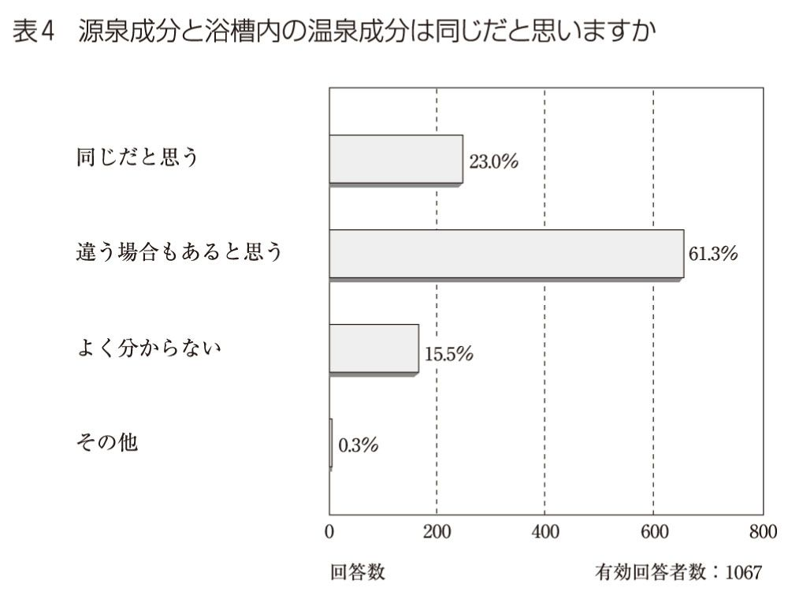
しかし逆に表５の結果をみると、まだ私の努力が足りないのかな、という反省が湧き起こってくる。いまだに多くの利用者が「源泉一〇〇％」「天然温泉」という言葉に弱い。残念である。
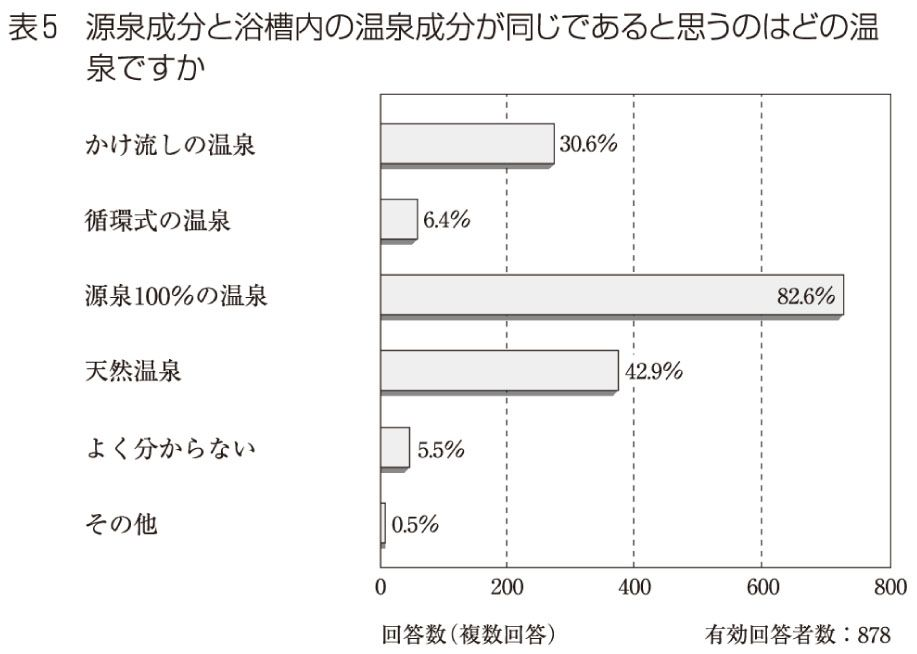
もう一度ここで書いておきたい。「源泉一〇〇％」「天然温泉」という看板が大きく出ていたら、一部の例外を除いてその温泉は要注意だといっていい。ホンモノの温泉をそのまま提供しているところで、そんな看板を出しているところはまずないことを知っていただきたい。そしてそういう言葉を断片的に憶えるのではなく、ひとつのフレーズにして憶えてほしい。「源泉一〇〇％かけ流し」。これがホンモノの温泉のスタイルである。問い合わせの際には、是非この言葉を使っていただきたい（ただし、これさえ当てにならなくなるかもしれないというのは前述の通りである）。また、温泉を正しく使用している誠実な経営者は「天然温泉」という言葉を使わないでいただきたい。自負心をもって「温泉」で通してほしい。
表６のうち、「温泉成分」に対するパーセンテージの高さについては、私はあまり興味をもたなかった。これは温泉には成分がある、という一般的な知識からでたものであって、本当の興味ではないだろうと思えるからだ。むしろ私がなるほどと思ったのは、消毒や清掃についての興味の深さである。レジオネラ菌のニュースなど、風呂に関わる事故や事件が報道されるなか、今や人々は温泉に安全を求めるようになっているのである。これも悲しい、といわざるを得ない。
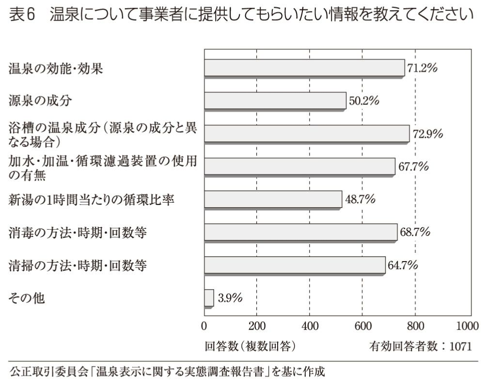
この調査を経て公取委は、次のような問題点を結論として提示している（要約）。
（１）源泉に加水、加温、循環濾過等を行っているのにもかかわらず、パンフレット等において「源泉一〇〇％」「天然温泉一〇〇％」など、源泉をそのまま利用しているような強調表示を行うことは、消費者の誤認を招くおそれがある。
また「天然温泉」との表示を行う場合には、あわせて、源泉への加水、加温、循環濾過装置の使用の有無に関する情報が提供される必要がある。
（２）パンフレット等において、療養泉としての適応症表示（効能についての表示）を行う場合で、その表示が湧出口における源泉を基準に判断したものである場合は、浴槽内の湯についての適応症であるとの消費者の誤認を招かないよう、その旨を明瞭に表示する必要がある。
また、浴槽内の湯について療養泉として適応症表示を行う場合には、消費者が実際に利用する浴槽内の湯が療養泉としての基準値を維持していることを確認したうえで表示する必要がある。
すべてがもっともである。なぜ厚生労働省や環境省などから、これまでこうした指導が行われなかったのか、私は不思議でならない。読者の皆さんも同じ思いに違いない。それが至極真っ当な温泉を愛する日本人の感覚であろうから。私は温泉経営者から、これら公取委の指摘に対する反論を耳にしていない。いや、それどころか沈黙している気配すら感じられる。日向市のレジオネラ菌騒動の時とはまったく雰囲気が異なるのである。心配なのは先に見てきたように日本温泉協会の加水に対する認識である。この公取委が指摘した問題点にどう応えるのであろうか。
私は、今日、本日、ただいまから公取委が提示したこれらのことが適性に行われることを望んでいる。また温泉を愛する多くの利用者に、正しいだけでなく、さらに深い温泉の知識を蓄えていただき、より温泉を享受してもらいたいと思っている。この本がその助けになれば、幸いである。
温泉の原点は湯治だ、という言い方がある。最近は温泉経営者の方々とお話ししていても、この言葉がよく出てくる。なるほど、とは思うのだが、ではこの言葉をどうやって現代の温泉ライフに活かすのか。それがなければ、ただのイメージになってしまう。この章では、この言葉の意味をもう一度考えてみたい。
例えば最近よく使われる言葉に、スローライフというものがある。しかもこれはどうやら、若い人達の間で支持され、広がっている。私のゼミの学生などもそういうことをよく言うし、最近の沖縄ブームなどもそんな感覚の中から現れたもののようだ。それは南の島のゆったりとした生活、あるいはまた共同体的な助け合いの生活、そういうものに対する憧憬が根底にあるのかもしれない。そういう発想やセンスを松田流に解釈すると、それは湯治場の風景とどこか一致する。
湯治を実際に経験したことのない人でも、日本人なら漠然とでもイメージできるものがあるだろう。湯治場での人々の動きをイメージしてみよう。ゆったりと風呂に浸かったり、また浴槽のヘリに座ったりして、仲間同士で仲良く話をしている。そしてそれは混浴であったりするかもしれない。男も女も湯のなかで、心から打ち解けあって語り合い、笑い合い、そうするうちに凝り固まった体の節々や疲弊した心も次第にほぐれてくる。
湯治は、お湯の成分をしっかりと体に染み込ませるためにある程度の長湯が必要となる。だから自然とスローになる。必ずしも浴槽に浸かっていなくても、浴槽の周りで寝転がっているだけでいい。浴舎のなかで過ごすこと自体が、心身にとっていいことなのだ。湯治におけるスローライフというのは、例えばそういうことだろう。
若山牧水の紀行などを読むと、そこには大正期のゆったりとした、また活きいきとした庶民の湯治風景が描かれている。春繭・夏繭・秋繭と飼い上げた、伊那谷や木曾谷の養蚕農家の人々が訪れた白骨温泉の様子などは、今日の日本人が読むと、その大らかな楽しみ方にほとんど嫉妬に近いような憧れを抱くことだろう。
そこでは終日若者たちが、共同湯の湯船から湯船を手拭い片手に裸のまま渡り歩き、折々木曾節や伊那節を声の限りに歌っていたという。当初こそこの高歌放吟に閉口した牧水も、次第にこれに馴染み、ついには渋面よりも微笑をもって聞くようになったという。牧水は彼らを評して、「粗野ではあっても、卑しいところは彼らには少なかった」と記している。
では現代の私たちの、温泉の楽しみ方はどうだろう。人々はよく温泉でゆっくりしたい、何もかも忘れてぼーっとしていたいという。本当にそうなのだろうと思う。しかし私が全国各地の温泉で見る光景は、どうもそうではないように見えてしまう。
私がもっとも驚き、あきれるのは、温泉に来てまでカランに向かってまず体を洗い、シャワーを使って頭を洗う。そしてまるで、おまけのように風呂に入っていく。甚だしいのは、露天風呂に来てまでせかせかと頭を洗い、湯船に泡を飛ばしたりする。要するに家庭の風呂に入るのと、なんら変わらない入浴スタイルなのだ。
とても良い風情の露天風呂だったのに、いつのまにかぴかぴかと銀色に光るシャワーやカランが設置され、どうしたのかと宿に聞くと、「お客様の要望が多くて」という。困ったことである。そんなことを要望する人たちは、鄙びた山の温泉に来てまで都会のマンション生活と同じものがなければ生きていかれないのだろうか。もしそうだとするなら、まったく気の毒な話である。同情に堪えない。おそらくこの人たちは、温泉から得られる楽しみの、一割も享受していないことだろう。
湯治場風情を残す山の静かな温泉というのは、都会の人々にとってこそ非日常の世界ではないのだろうか。その非日常の世界に没入して、普段は着ない浴衣を着、下駄を履き、家庭の風呂とはまったく違う天然の薬湯に浸かり、心身の再生を図るのが目的ではなかったのか。日常と同じ振る舞いを続けて、それのどこが楽しいのだろう。
例えば黒川温泉のようなところでも、同じような事態に接して悲しくなる。湯巡りツアーの観光バスで運ばれてきた人々が、「一時間後にここに集合ですよー」という添乗員さんの声と同時に早足で街に繰り出す。少しでも多くの風呂に入りたいのだろうが、それではまるで、デパートのバーゲンセールではないか。
また、日頃使っているらしいシャンプーやリンスを詰めた〝お風呂セット〟を、弁慶の七つ道具よろしく提げて歩いている人がいる。黒川温泉自慢の、それぞれに風情ある露天風呂に行って、この七つ道具にものをいわせるつもりなのだろうか。できればそれは、街の銭湯でやっていただきたい。ここは山の静かな温泉地なのである。
さてもう一度、湯治場風景を思い浮かべていただきたい。そこでは人々はただのんびりと湯に浸かっている。ときどきは上がって縁で寝そべったり、上半身を風になぶらせたりしているかもしれない。でも体を洗ったり頭を洗ったりしている絵は想像できないだろう。これぞまさしくスローライフではないだろうか。
おかしなことをいうと思われるかもしれないが、私は温泉の楽しみ方としてとりあえず頭を洗わない、体を洗わない、ということを提唱してみたい。お風呂に入ったらどうしても頭や体を洗いたくなる、そういう人もいることと思う。でも一度我慢して、試してみてはどうだろう。現代の贅沢というのは、むしろそういうことではないだろうか。わざわざお金と時間をかけて、東北の乳頭温泉郷や九州の黒川温泉に行くというのはそういうことではなかったのか。
また、それが良い温泉を育てることにもなるのだ。とくに露天風呂というのは、いわば自然を切り取ったような空間である。そこにシャワーを作ることで、まず自然のなかにいるような気分は損なわれるだろう。また水道水を沸かした湯をつくることで、露天風呂にそんなお湯が注ぎ込まれることにもなる。さらにそれが進んで、循環風呂ということにもなりかねない。循環風呂が急速に増えていった背景には、実際にそういうこともあるのだ。
資金を投じた設備の豊かさ。それを求めるならば、都会のホテルの方がよほどいい。空調が効いた、ピカピカで、夜景がきれいな、そんなホテルは都会にいくらでもある。しかし私たちはむしろ、精神的な豊かさを求めて鄙びた山の温泉を巡るのではないだろうか。そこに場違いなサービスを求めたところに、利用者の側も反省する点があるだろう。
今若い人たちの間から支持されてきたスローライフというのは、価値観の転換ということだろう。物質ではなく、心の豊かさ。そういう転換が今行われようとして、現在の温泉ブームというものが現れてきたのだろう。ならばスローな温泉浴、日本人の心の奥底に眠っている湯治の心を呼び覚まそう。私はそれを提唱したい。
頭も体も石鹸やシャンプーできれいにする。もちろんそれも快感である。私だってそう思う。でもちょっとそれを我慢してみると、きっとまた温泉に対する見方が変わってくるはずである。お湯に専念する、という言い方を私はするのだが、それを経験することでより深い愉しみや効能が得られることだろう。
まずお湯の質や風呂の風情、そういうものが非常に気になってくる。気になるというのは、ある意味で発見であるし、また思索である。体や頭を洗うという事務的な作業を捨て去ることによって、温泉をより深く味わえるのである。現在そういう人が少しずつ増えてきたことによって、温泉を提供する側にも精神的なものを探求しようという姿勢が出てきた。私たち利用者側の変化が、そういう良い循環を生んでいくのだと私は信じている。
今や全体の七割にもなるという循環風呂。それをまた、一つひとつホンモノの湯を注ぎ込んだ風呂に変えていく。それはおそらく長い時間がかかることだろう。しかし私たちが温泉の楽しみ方を変えていくことによって、少しずつそれは実現されていくはずだ。日本の温泉の将来は、この本を読んで下さるような方々にかかっているのである。
さてそれでは、日本各地にある私の愛する、また気になる温泉地を回って見ることにしよう。温泉は生きている。生きているから成長したり、変わっていったりする。そういうことを実感していただけることと思う。
まず二〇〇三年の春、私がガイド役となって行ったツアーのことをお話ししたい。これはある大手旅行会社の札幌支店が行ったもので、私が選んだ「百名湯」を巡るツアーである。もちろん百湯をいきなり回ることはできないので、ある地域、あるテーマでツアーを組む。この時は、別府、長湯、黒川、由布院という、いわば現代のゴールデンルートを回ることとなった。そこでは私自身も発見があり、感動があった。是非それをご紹介したい。
私は、『温泉ゼミナール』の冒頭で、鉄輪の湯煙にケチをつけた。また城崎温泉の歴史を繙き、湯の集中管理、循環と進んできた現状を嘆いた。常に日本の温泉界のトップを走ってきた熱海には、客をホテルに囲い込み、街を歩かせなかった結果が、歓楽街すら失ってしまった今日の不振の遠因ではないかと指摘した。
いずれも歴史、文化、規模において日本最大級の温泉地であり、ピークから落ち込んだとはいえ、今日もなお多くの湯客を集めている。私の狙いは、単純なものであった。これらの大温泉地に厳しい言葉を投げかけ挑発し、復活の力を引き出したかったのである。もし仮に、この三つの温泉地が一斉に本来の温泉への回帰を始めたら、日本の温泉状況は一気に好転するはずである。私の狙いはそこにあった。
前著の刊行以後真っ先に私に講演を依頼してきたのは、他ならぬ別府であった。初めての講演の日、私は久々に膝が震えるような緊張を憶えた。果たして私の真意は伝わっているだろうか。今日の私の話を斜めにではなく、正面から受け止めてくれる用意はあるのだろうか。私は正直不安だった。
私は第一声をこう始めた。「日本のお湯が循環になっていくのにお客さんが気付かなかったのは、宴会でどんちゃん騒ぎするのに忙しくて、風呂に入っている人がほとんどいなかったからだ、という説がある」
じつはこの時、本当に私の膝は震えていた。余裕の笑顔を浮かべていたつもりだったが、もしかするとそれは笑顔にはならず、ただ引きつっていただけかもしれない。しかし別府の聴衆の反応は、最高のものだった。一斉に爆笑が湧き起こったのである。喉元までせり上がっていた私の心臓は、この時すーっと定位置に戻った。そして同時に私は、別府の再生を確信したのである。
その後のレセプションは、さらに凄まじい反応だった。会は一時間ほどのものだったが、次々に名刺交換に訪れる人の対応に、私は食事はおろか一口の飲み物も口にすることができなかった。しかし極めつけは、その後だった。
最後に私に名刺を渡した人物は、挨拶もそこそこに携帯電話で話しはじめた。
「さっきからの話題の主が今、目の前にいるよ。うん、これからご案内するよ」
「ん？」
私は慌てて目の前の人物を見返した。すると笑顔のその人は、「先生、さあ行きましょう」と無理矢理私を別な場所に連れ去ったのだった。
この時私を拉致した人たちは、別府の街作りを進めるグループの中心メンバーだった。そしてこの日は、夜を徹しての語り合いとなった。別府の現状について、別府の未来について、彼らは熱く語り続けた。もちろん私が、これを意気に感じないはずはない。この夜から私は、別府復興の片棒を担ぐことになったのである。
今、私と別府の関係は、このようなものとなった。二〇〇三年春のツアーでは、「別府八湯」という彼らが掲げた、湯を中心とした取り組みの成果を参加者にお見せしたかった。なんといっても別府は湯が豊富なのである。この湯を大切にしていけば、必ずこの街を愛してくれるファンが拡大するはずだ。
別府のなかでも鉄輪温泉は、今もなお湯治場のスタイルを残す数少ない温泉地である。貸間旅館という、低料金で泊まれる自炊施設付きの宿が、今もなお活躍中である。これほどの規模で湯治宿が残っているのは、他には宮城県の鳴子温泉や山口県の俵山温泉くらいのものだろう。しかも鉄輪の場合、これが別府という十二万都市のど真ん中に存在するのだ。このインパクトは強烈なものがある。しかも宿だけではなく、街全体に湯治の風情が残っている。
鉄輪は平安末期に一遍上人が、熱湯や蒸気が吹き出すままになっていたのを整備し、温泉地として形作ったといわれている。温泉地には必ず信仰の跡が残っているが、ここも同様である。一遍上人が開いたという永福寺のすぐ下には「渋ノ湯」、「元湯」という共同湯があり、源泉と信仰の対象が一体となっていることが感じられる。
さらに路地裏を回っていくと、地元の人気ナンバーワンの「筋の湯」という共同湯もある。しかもこの周辺は、土産物屋の店先が土地の老人たちの社交場のようになっており、通りを歩く人々の心をなごませる。東京あたりではもう見られなくなった、いい風情の商店も並ぶ。温泉街に人が生きている、という感じが伝わってくるのが鉄輪の路地裏である。
湯治であるから、もちろんお年寄りが多いのだが、現在では宿泊料金の手軽さが受けて、外国からの旅行者や若者にも受けている。部屋は清潔であり、別府の地下から吹き出す蒸気を使った蒸し料理も体験できる。最近では、インターネットがいつでも使えるパソコンが置かれている宿もあるので、むしろこれは若者向きかもしれない。ここを起点にして、湯布院や黒川温泉、阿蘇、あるいは国東半島あたりまで回る人も多いと聞いている。
こんな街に住む別府の仲間たちは、気っぷがいい。そして何よりもてなしの心が篤い。今回のツアーでも私はそれに甘えさせてもらった。
この日の泊まりは、鉄輪温泉でもお湯がいいと評判の「おにやまホテル」だった。だが私は湯ばかりでなく、別府の街歩きツアーを皆さんに堪能してほしかった。別府の○○旅館に行った、というだけの旅は決してしてほしくない。そんなものは旅ではない。別府に来たなら、別府の街、そして別府の人情に触れてほしい。そこで私は、ホテルでの夕食前に共同湯「竹瓦温泉」に行くことを計画していた。
しかし私は、当日さらに欲張った。忙しいところを本当に申し訳ないと思ったのだが、竹瓦温泉に近い野上本館の社長に竹瓦界隈の路地裏散歩の案内をお願いしたのだ。自分の宿に泊まるわけでもない私たちに社長は、「はい、いいよ」と二つ返事で応えてくれた。これが別府の心意気である。これには私はもちろん、ツアー客全員が感謝と感激で一杯だった。
ところが、これほど篤いホスピタリティーをもった人がいる別府の、最大の問題点が実はこの竹瓦温泉なのである。これは隠しても決して別府のためにならないと思うので書かせてもらうが、竹瓦温泉は対応が悪い。過去には私の知人が、ここの砂風呂でぞんざいな扱いを受け、火傷をさせられたことがある。それ以来私にとってここは要注意なのだが、この日もおかしなことがあった。
旅行会社の添乗員さんが先に行って、これから男女合わせて四十人ほど入りにくるというと、いきなり今は入れないと断られたというのである。この時、私はピンとくるものがあった。またか、という思いである。以前私が小グループで訪れたときにも、いかにも入れてやるという態度だったことを思い出したのだ。そこですぐに私は、自分で交渉に出向いた。
事前に営業時間はチェックしてあるし、現に温泉は開いているのである。私は一体どういうことかと説明を求めた。先方の説明は聞いて呆れるような言いぐさだった。「四十人分の桶がない」というのである。しかもその説明は、先に出向いた添乗員さんにはしていない。その時にはただ「入れない」というばかりだったのだ。「体を洗うわけではない。湯に浸からせてもらうだけだから、桶は必要ないですよ」というと、やっと入場がかなった。
これをいうと皆さんはさらに驚くかもしれないが、この竹瓦温泉は市営なのである。「世界の泉都」を標榜する、別府市営の共同湯がこの対応なのである。街のイメージ造りに懸命になっている市民に対し、一体どういうつもりなのかと腹が立つ。
私は、ここは別府の顔となるところだと思っている。「世界の泉都」というなら、竹瓦温泉はその市役所のようなものだろう。私が毎度こんな目にあっているのだから、他の湯客はどんな思いで帰るのかと本当に心配になる。
どこの市町村営温泉も、外からくる人にとっては町の顔である。ところによっては、特産物を売るところもあるが、訪れた人はそこで「ああ、こういうものが採れる町なんだ」と知ることになる。良いことも悪いことも、すべてそこで起きたことで判断されてしまうのだ。私たちは幸い、野上本館の社長のような人にも出会ったから、ここでのマイナスイメージは相殺され、むしろプラスの方が多くなったかもしれない。でもそうでなければ、別府はとんでもないところだ、ということで終わってしまう。
そんな一幕もあったが、別府温泉の路地裏巡りで湯の町情緒や湯治風情を堪能したツアー客たちは、大満足の様子だった。巨大温泉地のイメージが染みついた別府だが、その背景には湯治を中心とした重厚な温泉文化がある。二泊三日の旅の初日から、楽しい発見と出会い、そして感動に巡り会えた旅となった。
「自然が豊かで、水と空気がきれい。おまけにいい温泉が湧き出ている。そんなところありませんか」と聞かれたら、私にはすぐに紹介したいところがある。でも私はここで、「それは」と喉まで出かかった言葉を飲み込んで、失礼ながら相手の人品骨柄をもう一度改めさせていただく。なにしろ私が紹介したいところは、二十一世紀の日本においてはまさに地上の楽園である。俗世間の塵芥に蹂躙されるようなことは、ゆめゆめあってはならない。
ところが今回私は、このツアーの人たちをどうしてもここに案内したくなってしまった。こっそり隠しておきたいのだが、同時に是非とも人に教えたい。最高のものに出会ったとき、人にはこの相反する気持ちが、必ず湧き起こってくるもののようだ。鉄輪温泉を出た私たちのバスは、大分県直入町に向かった。神秘の炭酸泉長湯温泉は、ここに湧き出すのである。
私が今この本を書いている二〇〇三年も暮れようという時点で、どれほどの人が長湯温泉を知っているだろう。私が九州の温泉地で尋ねてみても、まだまだ知らない人が多い。それでも私は最近ある航空会社の機内誌で、ここを紹介したエッセイを見つけた。『温泉ゼミナール』で長湯温泉の名を知って訪ねてみることになったと書かれていた。次第にここの魅力が、全国に知られようとしている。
私は『温泉ゼミナール』で、この町の公共温泉「御前湯」を全国の公共温泉の鑑と紹介した。しかし直入町の魅力というならば、それはごく一部かもしれない。この町はそれほどの魅力を湛えているのである。
直入町に初めて信号機がついたのは、十年ほど前のことである。当時の町長さんがくす玉を割って、お祝いしたという。どうだろう。このエピソードひとつで、そそられる人も多いのではないだろうか。豊かな緑に囲まれた美しい自然景観。澄んだ空気、おいしい水。そのなかで子供たちは元気に遊び、お年寄りたちは穏やかに微笑む。そしてそこには日本で唯一、高温の炭酸泉がこんこんと湧き出ている。
しかしこのＪＲの駅も国道もない山間の町で、これだけ豊かな自然や温泉資源を守ってきたのは、他ならぬ過疎であった。最盛期六千人いた町民は、二千九百人にまで落ち込んだ。つまり日本人は永く、宝石のようなこの町の魅力を知らず、ただ山間僻地に捨て置いたのである。もちろんこれは、町民にとっては苦しみの歴史だった。だがおかげで私たちは今、この宝石の輝きを楽しむことができるのである。
しかしなにしろ、五十度近くの高温の炭酸泉が湧くのは、日本ではここ長湯温泉だけである。どうしてこれがこの地に埋もれることになったのか。また逆にいえば、なぜこの山間の地に忽然と日本一の公共温泉が生まれ、効能を聞きつけた人々が訪れるようになったのか。この町が辿った数奇な運命をここで簡単に紹介したい。
昭和六十二（一九八七）年のある日、直入町役場に東京の企業から一本の電話が入った。その電話の主は、炭酸入浴剤を発売している花王の研究所だった。
「実は、わが社の製品に関連して日本中の炭酸泉を調査していたのですが、その結果そちらの長湯温泉が炭酸の量、湯温ともに日本一であることが分かりました」
電話の内容は、概略そんなものだった。これに対し、町民の反応は複雑だった。町に温泉があることは誰でも認識していた。しかしそれは寂れた湯治場であって、賑やかに人が集まるような観光温泉地ではなかった。町民にとって直入は、農業と林業の町だった。「あの温泉はそんなにいい温泉だったのか」、この時町民の思いはまだその程度のものだった。
しかし、花王の炭酸入浴剤といえば、冬場ともなれば連日テレビコマーシャルが流れる。過疎に苦しむ町役場の一部からは、これが何か町おこしに結びつかないだろうかという声が上がった。何もしないではいられない。町にとって過疎は常に最大命題だった。
平成元（一九八九）年十一月、直入町は温泉療養地として発展の可能性をさぐり、活動を開始する。国内においては「全国炭酸泉シンポジウム」を開催し、全国に「炭酸泉の長湯温泉」をアピールした。そして同時に本格的な温泉療養の先進地、ドイツのバートナムハイムとバートクロチンゲンという二つの都市と友好親善関係を結んだ。
前年日本の自治体には、ふるさと創生資金一億円が交付されることが決まっていた。直入町の素晴らしいところは、これを箱ものに使うのではなく、もっぱら人材と文化の交流に投じたことである。これが見事な成果を現した。
大分県でももっとも過疎が深刻なこの町に、常に数人のドイツ人がいるようになった。同時にこの町の職員数人も常にドイツにいる。生徒たちも交換され、ドイツからやってきた子供たちはこの町の家庭にホームステイした。人材の交流は、着実に町の中に定着していった。
もうひとつ直入町の国際交流に実があったのは、これが経済活動を伴ったことである。これによって交流がイベント的なものに終わらず、町同士の絆も太いものになった。まず顕著だったのが、この町のワインの輸入量がいきなり急増したことだ。しかもこれを消費するのは町民ではなく、ドイツから良質なワインが直輸入されると聞きつけた全国のワインファンだった。小さな過疎の町で日独経済は活性化し、これによって双方の交流は本気になった。
それがドイツ側においても重要なものとなったことを示すのが、平成十（一九九八）年のバートクロチンゲンにおける「直入町ぶどう畑」の贈呈だろう。この畑で収穫された葡萄は、すべて直入町ブランドのワインとなる。バートクロチンゲンのワイン産業にとって、直入町はそこまでの存在となったのである。
温泉療養文化館「御前湯」と温泉交流館「長生湯」が完成したのもこの年である。全国ではふるさと創生資金による公共温泉バブルが繰り広げられていたが、この町では平成元年からその構想を抱きながら、造りあげたのは十年後だった。そして完成したこの町の公共温泉は、源泉を一〇〇％かけ流しにした、まさに温泉療養地にふさわしい、ホンモノの温泉だったのである。
ここまでが平成に入っての歴史である。過疎に苦しんでいた町が、いま温泉を中心に活気づいている。最近では顕著な温泉の効能に引きつけられ、東京や大阪からこの町に移住する人が現れた。まさに温泉効果による人口流入である。
この間に温泉街も次第に復活してきた。私はあまり急激にそうならないでほしいと思っているのだが、ここがこれから強烈に都会人を引きつけることは間違いないと思う。まだいろいろと整備しなければならない部分もあるので、すぐにとはいかないかもしれない。しかしきっと人は押し寄せてくるだろう。その時町は変わるのだろうか。
温泉街の復活が始まった、と書いた。そう、この温泉街は復活したのである。つまりここには前史があったのだ。しかも輝かしい前史が。
ドイツとの交流を進め、温泉療養地として町おこしをしよう、と町全体が盛り上がりを見せた頃、一冊のアルバムが埃を払われて町民の前に差し出された。それは昭和五十二年に七十七歳でこの世を去った、御沓重徳の遺品だった。この御沓こそ、昭和の初めにドイツのカルルスバードを範とした療養型の温泉保養地を目指し、さまざまな活動を展開した人だったのである。アルバムにはその活動の軌跡が収められていた。
昭和初年から御沓とそのグループは、当時から山間僻地で発展に苦しむこの村を温泉で救えないかと考えていた。しかし鉄分が多く、地上の湯船に注がれるやすぐに茶色に変色する湯は、温泉観光地には向かないといわれていた。しかしこの温泉の効能が抜群であることは、周辺の人々にもよく知られていた。御沓はそこに活路を見出そうとしたのである。
御沓は当時の常套手段だった、作家、歌人、画家を招待し、温泉の宣伝に務めた。しかし療養型を目指した御沓はそればかりではなく、ついに昭和八年、当時の九州大学別府温泉治療学研究所の松尾武幸博士の調査招聘に成功する。
実地調査に訪れた松尾博士は、長湯の湯に接し驚く。湯に含まれる炭酸の量がとんでもなく多かったからである。博士は留学したドイツで、炭酸泉が心臓病や脚気、神経衰弱に著しい効能があることを学んでいた。そこで日本でもこういう炭酸泉がないものかと、折に触れて各地を歩いていたのであった。
「飲んできき、長湯して効く長湯のお湯は、心臓胃腸に血の薬」
博士が捻ったこの小唄ふうの惹句に、長湯の効能は示されている。これに自信を得て、前年設立された「長湯温泉協会」を中心に活発な宣伝活動が行われた。文化人も多く訪れるようになり、長湯の名前は次第に知られていった。最近復活した大丸旅館の外湯「ラムネ温泉」の名付け親は、戦前ここを訪れた大佛次郎であった。「東方日本の長湯温泉、西方独逸のカルルスバード」を看板に押し立て、長湯温泉は隆盛の道を辿るかに見えた。
しかし、昭和は戦乱の時代だった。中国大陸の戦火は拡大し、ついには日本も世界大戦に突入する。人々の生活からは温泉地で保養する余裕は急速に失われていった。終戦を迎えたとき、すでに老境に入っていた御沓には、長湯温泉復興に動くエネルギーはすでになかったのだろうか。御沓も動かず、次第に長湯は忘れられ、わずかに効能を知る近在の人々のための湯治場となっていった。そして直入の町は急激な過疎の時代を迎え、まるでタイムカプセルに収められたかのように山間の地に埋もれたのである。
日本で唯一という希少な温泉資源をもちながら、それが山村に捨て置かれた事情はこのようなものだった。しかし先にも書いたとおり、それがこの町の魅力を保った理由でもある。効能の強い温泉、豊かな自然、素朴な人情。今や多くの湯治場から失われようとしている、日本人の活力の源泉がここ長湯には今も息づいている。
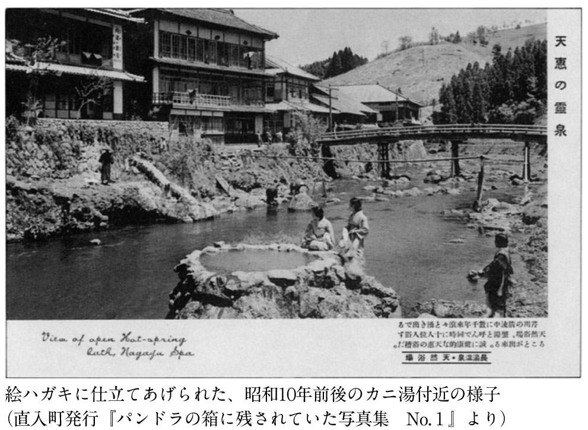
この集団が歩くうち、野良から戻ってきたらしい年輩の婦人とすれ違った。温かな笑顔を満面にたたえたこの婦人は、私たちに「どちらからいらしたんですか」と声をかけてくれた。同年輩のツアー客が「札幌からです」と答えると、その婦人は深々と頭を下げ、「それはそれは、遠いところありがとうございました」と挨拶した。一同は、この短い一場のやりとりに大感激だった。
「先生、ここは素晴らしいところですね！」
メンバーの一人が、顔を輝かせて私にそう語りかけた。
ここではほかにも、嬉しい体験がいくつもあった。議会中であるにもかかわらず、町長が是非挨拶をしたいといって、御前湯の私たちの元を訪れたのである。また御前湯で出前を取って昼食を済ませるつもりだった私たちに、現在九州で人気急上昇中の旅館「翡翠之庄」がお昼を用意してくれたのであった。
これは私が、わずか一時間前になって無理をお願いしたのだが、「翡翠之庄」ではこれを快く引き受け、四十二人分の膳をつくってくれたのだ。これにもツアーの一同は大感激だった。
今回私たちはこんな贅沢をさせてもらったが、町営の「御前湯」では食事類は一切出さず、町中から出前を取る方式を貫いている。その出前が、年間で二千万円にものぼるのだという。これも町とともに温泉が栄えるという、温泉地の模範である。
私はごく稀に、こうしたツアーに企画から参加している。現在は大学の授業もあり、合間には全国を講演で飛び回る日々だが、それをかいくぐってでも年に数回はこれをやりたいと考えている。それは一般の利用者の反応を、直接間近に見ることができるからである。その意味からいうと、今回の旅における私のメーンイベントはこの長湯温泉だった。
現在のところ、もっとも日本人の心に訴えかける温泉地であろうと考えていた長湯温泉。ここでツアー客がどんな反応を見せるのか、私はそれを今回のテーマにしていたといってもいい。そして結果は、私の想像を超えるほどの反応だった。
私たちが今回ここに滞在したのは、わずか三時間である。その三時間の間に、「ラムネ温泉」と「御前湯」を体験し、町を歩き、「翡翠之庄」で食事をとった。この日黒川に移動して宿泊するためにはこれが限度だった。しかしこのわずか三時間に、ツアーに参加した人々はおそらく終生忘れられない感動を得たのだった。
その感動とは何だろうか。バスが直入の町に入ると、メンバーは口々に「いい風景ですねえ」「いいところですねえ」を繰り返した。しかし山を見れば、ここは植林した杉が真っ直ぐに伸びるばかりである。そしてあとは、普通の畑が広がる何でもない農村風景である。黒川の人々が懸命に植えた落葉樹も決して多くないし、目を引くような花もない。だが人はそれに心を奪われるのである。
私は、黒川温泉新明館の後藤哲也社長の言葉を思い出した。
「人の心を癒す木というのは、そこに人が植えたと見えた瞬間にもうダメだ」
後藤さんはそういった。後藤さんは木を植えることに関しては、たった今植えた木が百年前からあるように見えるという超名人である。後藤さんが語った極意が、この直入町には天然自然にあるのかもしれない。巧まざる美、というものだろうか。
もうひとつ私なりに考えてみたのは、人の心、ということだった。それはこの町の子供たちの表情からも感じられるものである。おそらく都会からやってきた人は、この町の子供の顔を見ると、それだけで何ともいえない懐かしい思いを味わうことになるだろう。それは、一瞬のうちに何十年も前の日本に戻ったかのような快い錯覚である。そういう目でこの町を見てみると、すべてがそう見えてくる。
私は古いということをいっているのではない。そこにある人の心、それが懐かしいのである。ゆっくりと湯に浸かったり芹川の流れをじっと見たりしていると、まるで胸のなかに水がしみ込むようにその懐かしさが広がってくる。不思議な町である。
もしかすると、これが私たちが時間のなかで完全に見失ってしまった、温泉の原点なのかもしれない。私はそんなことも考えている。
バスが長湯を離れようとするとき、私は直入町が編集した昭和初年の長湯の姿を収めたリーフレットを開いていた。御沓重徳の遺品を整理したものである。その最後のページには、御沓たちが昭和七年に設立した長湯温泉協会の宣言が昔の活字のまま刷られていた。その決議の一には、こう記されている。
「一、温泉場ヲ美化シ自然ヲ愛護シ以テ天下ノ楽土タラシムルヲ期ス」
七十年を経て、長湯はここに現代人の楽土を甦らせようとしている。
黒川温泉の泊まりは、「湯峡の響き 優彩」である。ここは元瀬の本観光ホテルという、黒川温泉では最初のホテルだった。それが二〇〇〇年にリニューアルした際、名前を改めたのである。
黒川といえば、露天風呂のある和風旅館というイメージが強いので、ツアー客の一部には不満もあったようだ。しかし現在の大手旅行会社の考え方では、ツアーの客を分宿させるということはできないようである。それに現在の黒川温泉は、どの宿に泊まっても接客のレベルにはばらつきがない。そういう意味では、黒川温泉はすでに全国でもトップクラスの温泉地といえるだろう。
例えば最近私は、「山河旅館」という、温泉街からぽつんと一軒だけ離れた旅館に泊まった。私にとっては、ともに温泉を語り合える後藤社長のいる新明館が一番居心地が良いのだが、黒川ではどこも一万円台の料金でまったく見劣りのしないもてなしや料理を味わうことができることを、ここで再確認した。
ただここで改めて考えさせられたのが、「湯巡りツアー」というものの弊害であった。これは今、全国の旅行社が企画しているものだが、黒川周辺、場合によっては別府あたりに宿泊してバスで日中旅行者を黒川に運び、入湯手形を配って湯巡りをさせるというツアーである。どうやら入湯手形も使い回しているようである。
こうして押し寄せる日中の湯客が、今明らかに黒川の雰囲気を崩壊させようとしている。女湯では洗髪のため、シャワー待ちの行列ができているとも聞いている。いったいこれはどういうことであろうか。旅行社は寄ってたかって黒川を潰そうとしているのか。
由布院を見ながら育ってきた黒川温泉も、いつかはこの洗礼を受けなければならなかったのかもしれない。ここを乗り越えなければ、一級の観光地とはいえないのかもしれない。たしかにそういう声もある。しかし私には、それに耐えない、という選択肢もあるように思える。黒川温泉よ耐えるな。私はそう呼びかけたい。
しかも周囲からは非常に誤解されている。ある温泉地に行ったところそこの経営者が、「今黒川は湯巡りのツアーがいいっていうんで、どんどんそういう客を取っている。目の前の利益に引かれて町の雰囲気は随分悪くなってるって、そういう声をよく聞きますよ」というのである。しかしこれは誤解である。黒川はそんなことはまったく望んでいない。黒川の旅館にとって今の騒ぎは迷惑こそあれ、けっして自ら望んだものではない。こんな誤解までされて、現在の湯巡りを続ける必要があるのだろうか。
私には、黒川が現在のような状態になることはまったく予想できないことだった。現在のような状況は、日本の観光史上でも例を見ない、まったく異常な状態ではないだろうか。こんな狭い温泉地に泊まらせもせず、日中の風呂だけの客を送り込む。そして町の人たちが苦心して作りあげた町の雰囲気を台無しにする。これが今、日本中のエージェントがやっていることである。
二〇〇二年のお正月明けから、すでに後藤さんからは悲鳴があがっていた。町が少し異常な状態になってきた。エージェントからは泊まらない客ばかり送り込まれてくる。日中の町の通りはまるでデパートのようだ。私には後藤さんの気持ちが、痛いほど分かる。ここは後藤さんがリーダーとなって、街の人々が行政の手も借りずにこつこつと作りあげてきた温泉街なのである。その結果、全国のモデルとなるような、本物指向の温泉街ができあがったのだ。利用者がこういうものを望むのなら、それを守るということも必要なのではないだろうか。
例えば本当の温泉好きが車で三人、四人というグループでやってきて湯巡りをしていくというなら、もちろん黒川だって大歓迎である。心から楽しんでほしいと思うだろう。しかしバスを仕立てて、数十人ががやがやどたどたと静かな町を闊歩し、町を汚していくとなればこれはまた別である。
それにこういう連中ほど、「黒川？ ああ、行ってきた。人ばかり多くてろくなところじゃないよ」などというのである。泊まりもしないで、温泉旅館の真価など分かるはずはない。大体「人ばかり多くて」という人のなかに自分は勘定にいれないという、図々しさである。こんなことで黒川温泉の評価が下がるとしたら、本当に情けない。
私が黒川を評価するポイントはいくつかある。それは現代人、とくに都市部のサラリーマンやＯＬの生き難さを地方にありながら的確に捉え、それに対する処方箋のような形で癒しの温泉を造りあげたこと。そしてそれを旅館単位ではなく街全体で行ったことなどである。
しかし温泉旅館の経営という面からみた場合、黒川温泉というのは、日本で初めて自分たちの力で自らを変革し、理念造りをし、それを街造りに用いた点を評価すべきではないかと考えている。
日本の戦後の大型観光地は、すべてその頭脳の部分をエージェントに任せてきた。大宴会場を造れ、そうしたらバスを何台送る。浴場を大きくしろ、そうしたらバスを何台送る。そうやって無駄な贅肉をつけ、ついには糖尿病状態に陥ったのが、別府、熱海の巨大ホテルなのである。
簡単にいえば、黒川温泉は大手エージェントからは顧みられない存在だった。現在の「日本秘湯を守る会」の会員旅館もそうだ。だからこそ懸命に自分たちで考え、変革し、利用客に支持される宿造りをしてきたのである。黒川は、それを日本で初めて温泉街単位でやったところだろう。それが黒川の凄さなのである。
そうやって造った町に、まるで無料のテーマパークでもあるかのように、バスを連ねてエージェントが人を送り込む。泊まりはよそだ。なぜだと聞けば、お宅は宿が小さい。ツアー客は宿を分散できない。そういう言い分が返ってくるという。これでは黒川はたまらない。ここは、少人数で温泉をゆっくり楽しむところなのだ。
黒川温泉の入湯手形は、たしかに話題作りという面はあったろう。こうしたことが町のＰＲになれば、とは考えたと思う。しかしその心は、サービスなのである。泊まる人だけがお客さんではない。温泉好きな人にも黒川の湯を楽しんでもらおう。そういう心から生まれたものなのだ。それを逆手に取るような真似はしてほしくない。日本の温泉のために、旅行社の方々にも是非考えていただきたい。
黒川の湯も宿も少しも劣化していない。むしろ私の実感としてはどんどん進化している。料金は以前のままで、宿としての高級感、グレードがどんどん上がってきている。今黒川に来られる方は、非常に幸運といえるだろう。是非噂の黒川温泉を多くの方に体験してもらいたい。それがまた、黒川温泉を育てることになるのである。
私たちの旅の最後は、由布院温泉だった。ところがこれに温泉が付いてないのである。由布院に行きますよといってツアー客を集めながら、温泉には入らないというのはひどい話である。それは客に対しても温泉に対してもひどい。私は前日の「翡翠之庄」での昼食のように、よく現地で修正を加える。今回も何とか皆さんに由布院の温泉に入ってもらいたい。
ところがここにひとつ問題があった。札幌に帰る飛行機の時間を考えると、昼食をどうしても十一時にはとらなければならない（ちなみにこの日の昼食は、「亀の井別荘」でとる予定になっていた）。ところが由布院のいい宿は、チェックアウトがいずれも十一時と遅いのである。もちろん通常は、チェックアウトにならなければ立ち寄り入浴はできない。由布院での入浴が組み込まれていなかった理由にはそういう事情もあった。
しかし現在この手のツアーが多いことも確かなのである。多くは金鱗湖の周りで自由行動の時間を一～二時間とり、それで由布院を巡ったことにしてしまうのである。「由布院温泉」とツアーパンフレットにうたっておきながら、である。
私はいろいろと頭を巡らし、考えた。そこで「庄屋の館」に電話を入れてみたところ、快く引き受けてもらえた。もちろん先に述べたような時間の問題もあったのだが、私は由布院に来たなら是非ここの湯を体験してもらいたいと思っていた。
というのも、由布院のお湯は基本的に、無色透明のアルカリ性単純泉である。肌に優しい美人の湯ではあるが、やや特徴に乏しい。ところがここ「庄屋の館」の露天風呂は、独特の食塩泉なのだ。これは由布院でも珍しい。しかも湯船にたまった湯は、神秘的なコバルトブルーである。
もちろん「亀の井別荘」の食事にもみな大満足だったが、やはり日本百名湯の旅である以上、最後は名湯で締めたかった。案に相違なく皆さんから「すごい！ 感動ですよ」という最大級の賛辞が得られた。私は、「是非、それを宿の人に直接伝えて下さい」とお願いした。
良い湯、良いもてなしを維持することは、決して容易いことではない。それぞれに人に言えぬ努力を積み重ねている。湯を守る人々にその努力を続けてもらうことによって、私たちは豊かな温泉ライフを得ることができるのである。良いものに出会ったときには、是非感謝とねぎらいの言葉をかけていただきたい。
関東でも一般客に温泉を提供しながら、湯治客も低料金で受け入れている宿は多い。法師温泉「長寿館」などもそのひとつである。しかし温泉街として湯治の流れを受けついでいるところといえば、やはり四万温泉がその筆頭だろう。
四万温泉が湯治場として開けてきたのは、戦国時代の終わり頃である。そして泰平の世となった江戸に入り、湯治客を多く集めるようになっていったようだ。もともと山深い地に開けた温泉であるから、自然に長逗留となったのだろう。明治に入ってからも、最低でも一週間、二週間以上の逗留は普通だったようである。
大正時代にこの付近をよく歩いた若山牧水は、気まぐれに立ち寄った四万で、一泊だといったところぞんざいな扱いを受けたといって憤激している。この頃でもすでに珍しかった草鞋履きだったことから安く見られたのかもしれないが、まだ当時も四万では長逗留が主流だったという事情もあったようだ。
私も初めて四万を訪れた際、慣れない山道を暗くなってから走ったため、到着時間が遅くなった。やっと到着した宿で、時間を厳しく指定されて松花堂弁当を突き出されたときにはむっとした。やはり遠路やってきた客は、まずは道中を労ってもらいたいものである。まあこれも、牧水と同じくその場の行き違いなのかもしれないが。
四万の魅力は、何といってもお湯の良さである。しかもそれが豊富に湧き出している。前章でも紹介したように、四万ではほとんどすべての宿が源泉をそのままかけ流している。ナトリウムやカリウムを含んだ硫酸塩泉が主流だが、これがあくまでも無色透明で、湯を見ただけで嬉しくなってくる。しかも飲泉すると胃腸の薬という薬湯である。交通がそれほど便利でなかった時代から多くの湯治客を集めただけのことはある。
四万温泉は、人々の心身を癒すという湯治場の姿勢を戦後になってからも崩さなかった。それは昭和二十九（一九五四）年に、青森の酸ヶ湯、栃木の日光湯元とともに最初の国民保養温泉地の指定を受けたことにも表れているだろう。国民保養温泉地の指定には、泉質が療養泉として顕著であること、温泉の湧出量が豊かなことなどが条件となっている。まさに四万温泉はこの条件にぴったりなのである。
湯治場風情という意味で四万温泉の魅力を際だたせるものに、「積善館」の「元禄の湯」の存在があるだろう。これは最近とくに雑誌などで取り上げられているから、大正ロマンの雰囲気に多くの人が憧れを抱いていることと思う。もちろん建物の魅力も強烈であるが、ここも湯が素晴らしい。
伝統のある四万温泉に対して、ポスト黒川温泉などというのは失礼かもしれない。しかしお湯の良さを自らの魅力と捉え、それを戦略化している点では、四万は関東随一ではないだろうか。関東では逆にこれが、今ニューウェーブになっている。
私もここ三、四年、東京やその近隣で講演する場合や雑誌のインタビュー等で、四万温泉や那須湯本温泉をもっと評価するように、行くように勧めてきた。幸い四万温泉の宿泊客は二年前から上昇に転じている。今後は栃木の湯西川温泉にもスポットを当てたい。これは黒川温泉に人が集中し過ぎないようにとの松田流の配慮なのである。
「お湯が自慢です」といいながら、「源泉かけ流しの宿を紹介して」という要望に応えられない温泉が多いなか、四万の姿勢は素晴らしいことである。是非今後もこの温泉の王道を突き進んでもらいたいものである。
先に長湯温泉の素晴らしさを書いたが、残念ながら長湯にはまだ、全国レベルのハイクオリティーな宿が少ない。そういう意味ではポスト黒川というのは、もっと先のことになるだろう。しかし四万には伝統ある、もてなしの心を知った名旅館が揃っている。関東の温泉好きがこれから是非育てていってほしい温泉である。そしてここでも、良い温泉、良いサービスに出会ったなら、必ず一声励ましてあげてほしい。そうすれば、いつかまたそれがあなたに返ってくる日があるだろう。温泉とはそういうものである。
私は大阪でも毎年、何度か講演をしているが、こちらは東京に比べて非常に反応がいい。東京以上にデフレ経済の影響を受けている大阪では、より切実に癒しの温泉を求めているのだろう。そういう雰囲気がいつもひしひしと感じられる。
関西人は、合理的なものの考え方をするといわれる。もちろん温泉も簡単に行けていいものを得られれば一番いいだろう。しかし温泉というのは、多少不便なところに出かけていって、そこで素晴らしいものに出会うことで感動が生まれる。そして、その不便な温泉を利用者が支えることで、温泉地や宿が育っていくのである。
私が今関西でもっとも期待しているのが、奈良県で唯一の本格的な温泉である十津川である。ここには二〇〇二年の暮れに講演に出かけた。この時十津川村役場の人々はすべてを私に対しさらけ出し、十津川温泉復活に協力を求めた。元来が十津川温泉ファンである私はこれを快諾し、以降たびたび助言を行ってきた。またこの村の人々も私の助言を受け入れ、それに対応することも非常に迅速だった。
その結果十津川は、本来のお湯の良さを活かした温泉として復活しようとしている。私は関西の人々に、この十津川温泉を是非応援してもらいたいと思う。この温泉は、応援に必ず応えてくれる温泉である。
最初に私がここを訪れたときに見せてもらった、村の立派な施設が循環風呂だった。そこで私は、これだけのいいお湯をなぜ循環にするのか、というところから話を始めた。どうやらここでは、源泉温度が九十度と高いことが悩みのひとつのようだ。だが、こうした問題には様々な対処法があるのだ。
そもそも十津川温泉が苦しんでいる理由のひとつには交通の便の問題もある。しかしそれよりも、周辺の市町村でいかにもお金をかけましたという豪華な外観の循環風呂施設が増えたことが大きな原因だった。十津川が同じ土俵に上がっていったのでは、話にならない。そういう考え方も含め、私は具体的なアドバイスを続けてきた。そして今、ようやくその努力が実ろうとしている。
十津川温泉には現在、公共の施設も含めて三十数件の宿、入浴施設がある。現在のところ、これがほぼ源泉かけ流し一〇〇％になった。ある一軒の宿の露天風呂だけが、事情があって循環器を使用しているが、それを除けば、ほぼ完璧である。二〇〇四年には、十津川全施設で源泉一〇〇％かけ流し宣言を行う予定である。
関西では十津川村は、とんでもない山深い地にある秘境だと思われているようだが、現在では道路はほぼ整備されている。比較的便利な秘境になったといってもいいかもしれない。そこに極めて良質な温泉が、こんこんと湧きだしている。自然の豊かさはいうまでもない。私の印象では、九州の長湯温泉と黒川温泉の良いところを合わせたような温泉である。是非関西の人たちにここを利用してもらい、心身の再生を図ってほしい。十津川の湯は、それだけの力を秘めているのである。本物とは、距離感を帳消しにしてくれるものであることを、関西の一級のビジネスパーソンに実感してもらいたい。
全国にはこうした力を秘めた温泉はまだまだある。九州鹿児島の新川渓谷温泉郷、北海道のニセコ温泉郷などは近い将来黒川温泉のような支持を受ける可能性が、非常に高いところである。
少々不便で行きにくいところであっても、ホンモノの温泉が与えてくれる感動はそれに応えてあまりあるものだ。思い切ってそういうところにも足を伸ばして、生命再生の感動を体験していただきたい。
〝熊野古道〟が脚光を浴びている。
人生に傷つき絶望した時、中世の人々は熊野三千六百峰の果てにある熊野三山（本宮、新宮、那智大社）を目指した。
千八百年前に発見された最古の温泉といわれる和歌山県湯の峰は、熊野本宮大社から約六キロの山間に現在もなお、濃い湯煙を上げる。平安・奈良時代から、熊野詣の際の心身を清める〝湯垢離〟として知られる名湯である。当時の賑わいは〝蟻の熊野詣〟という表現からも窺い知れる。本宮大社へ通じる街道を蟻のように人が連なっていたに違いない。
渓谷の底の静寂境を流れる湯の峰川の両岸のわずかばかりの土地に、十数軒の温泉旅館や民宿が軒を連ねる。素朴だが、それでいて歴史の重みを感じさせる好感度の極めて高い山峡の温泉街である。
湯の峰は九十二度の含重曹硫化水素泉。河畔から熱湯が自然湧出する湯元は「湯筒」と呼ばれ、ここで土地の人々が、野菜や山菜をゆがいたり、卵をゆがいたりする姿がよく見受けられる。
私は、ここ湯の峰をポスト黒川の本命だと思っている。今年、大阪の講演でもそう語ってきた。ここはまさしく生命再生の湯である。千八百年前に開湯された湯の峰温泉は、日本最古の温泉だといわれている。さらにここは、歌舞伎で有名な小栗判官と照手姫の伝説の地である。小栗が地獄から帰還した体を甦らせたのが、現在も入浴可能な湯の峰温泉の「つぼ湯」で、地元では日本最古の共同湯といっている。まさに生命再生の湯である。少なくとも戦前までは、病を治療できないお湯は温泉と認められることはなかった。だから小栗判官を生き返らせた説話をもつここ湯の峰は、日本人にとっての温泉の象徴であるといってよい。
私は最近この「生命再生」、あるいは平成の現代なら「心身再生」といった方が適切だろうか、これが現代の温泉のキーワードではないかと考えている。例えば、熱海は今東京が不景気だから自分たちの景気も悪くなっていると感じている、あるいはそういうことをいっている。しかし本来、これは逆なのである。
関ヶ原で傷ついた武将を、家康は熱海で再生させた。もし今でも熱海が本来の温泉としての機能を果たしていたら、今こそ東京の人は熱海に来たはずである。心身再生のために、である。ところが来ていない。そこを考えるのが、熱海の再出発地点だと私は思う。
これはひとり熱海の問題ではなく、すべての温泉地の皆さんに考えてほしいことである。平成の不況感からなかなか脱しきれない今こそ、人々は本当に温泉を求めている。そのことに今気付いていない人も、ホンモノの温泉で癒されれば必ず気付くはずである。なぜなら、温泉はストレスや過重な労働に挫けそうになっている人々が、もう一度再生していく場所なのだから――。
経営者の方々には、是非ホンモノを提供してもらいたいし、またそれを求めてもらいたい。それが本当の、人間と温泉の関係ではないだろうか。
もうレジオネラや塩素の話はやめてくれ、という声が聞こえてきそうだが、最後にひとつ。
これまで、もし循環するのであれば塩素殺菌はやむを得ないという前提で話を進めてきた。しかしそもそもそういった理屈が成り立たない可能性がある。
二〇〇三年三月十二日付の『下野新聞』で、独協医大の増田道明教授はレジオネラ症についてこうコメントしている。
「この菌（筆者注：レジオネラ菌のこと）は塩素に対する抵抗性を獲得しやすいとされています。また、アメーバの細胞中に寄生して増えることもでき、そうした性質からも塩素が効きにくい。従って、塩素消毒で解決しようとするのは適切ではないと思います。やはり、繁殖の元となっている汚染箇所を洗浄して清潔に保つことが重要だと言えます」
塩素がレジオネラ菌に効きにくいとは何とも恐ろしい。全国の保健所による指導がそもそも意味のないことになってしまう。かけ流しの風呂に塩素が投入され、しかもそれが実はレジオネラに対して効き目が薄いとは、われわれ利用者は踏んだり蹴ったりではないか。
保健所が本来、宿に対して徹底して指導すべきことは、毎日風呂のお湯を抜き、心を込めて清掃することではないのか。これを温泉宿の基本的なホスピタリティー〝もてなしの心〟というのではないか。人間が手抜きをして、その代わりを殺菌剤で済ませる。この発想が、日本人がなぜかくも温泉に向かうのか、その本質とこれっぽっちも相容れないことに保健所は気付かないのだろうか。体を洗うためなら家庭風呂で十分なのである。心を清浄にすることが癒しになることを知っているからこそ、温泉に向かい続けるのである。それが豊かさだということも知っているのである。
もし仮に、循環風呂に使われている保健所推奨の塩素がレジオネラに効かないとしたら、何をもって循環湯の殺菌消毒をすればいいのか。私が注目しているのはある貝殻である。貝殻？ という声が上がりそうだが、間違いなく北日本の海に生息する貝の貝殻である。貝殻を特別な温度で焼き、何ら人工的なものを添加せずそのまま塩素の代わりに使うのである。
この貝殻のいい点は、まず塩素のような臭いがしないということである（臭いがしないため、入浴客が循環湯に対する用心をしなくなる可能性が恐い。ただそれは施設側がきちんと表示すればいいだけの話である）。しかも人体にも無害であると報告されている。肝心の殺菌効果も公的な試験場で確認されている。さらにこの貝殻の優れている点は持続力である。六カ月使い続けても大丈夫だといわれている。
殺菌剤としての塩素が優れているのは、安いことと持続力があることである。値段はともかく、持続力という点でこの貝殻は塩素に負けていない。おまけに塩素注入のシステムをそのまま使えるという点で、その他の殺菌方法、例えばオゾン殺菌とか銀イオン殺菌より導入しやすいだろう。難点は、値段が少し高いことであるが、貝殻は産業廃棄物である。材料代はタダみたいなものだから、需要が伸びれば値段は下がるだろうし、リサイクルにもなるだろう。洒落ではないが、貝殻だけに食塩泉には最適かもしれない。
ヨーロッパのホテルであれば、「ミシュラン」の五つ星というのは大きなステイタスである。同じく日本の多くの温泉旅館にとっては、毎年ＪＴＢが発表する「満足度九十点の宿」というのが大きなステイタスになっているのである。
これは、利用者に対するアンケートをもとに宿のランク付けを行ったもので、旅館にとっては、対外的な宣伝になるだけでなく、ＪＴＢが個人客に宿を紹介する場合、点数の高い方から紹介していくということもあり、大きなメリットになる。
しかし私はこれが、ホンモノの温泉にとっては大きな問題だと思っている。
例えば二〇〇二年に「満足度九十点の宿」で最高点を取った北海道のＣという温泉ホテルがある。団体旅行も受け入れる鉄筋の大型ホテルである。北海道にしてみれば中規模だが、本州のホテルに比べたら大型の部類に入るだろう。確かにここは接客、料理、設備などいろんな面でクオリティは高い。しかし、実は何を隠そう風呂は循環式なのである。
なぜホンモノの温泉を提供しない循環風呂の温泉宿が最高点を取れるのか。これはＪＴＢが実施しているアンケートに問題があるといっていいだろう。風呂を評価する項目が、「清潔か」「設備はいいか」の二つしかないのだ。そして循環風呂は、常にお湯がきれいだという意味で、まさにこの評価に適っているのである。
これが何を意味するのか。日本の有名な温泉地の有名な宿は、「九十点の宿」になることが目標だった。風呂に関する項目は「清潔か」「設備はいいか」の二つだけ。そうすると、点数のほしい宿は必然的に循環風呂にせざるを得ない。湯花が浮いていたら「清潔性」の面でマイナスかもしれない。カランやシャワーがなければ、「設備」の面でマイナスだろう。その行き着く先は......。
ＪＴＢは間違いなく日本の旅行界のリーダーである。観光業界に対する影響力は非常に大きい。ならば今こそ、風呂のアンケート項目を見直すべきではないのか。例えば「お湯そのもの」を評価する項目をひとつ増やすだけでもいい。それだけで温泉をめぐる状況は一気に変わる可能性がある。
先のＣにしても、お湯がふんだんにある全国的に知られる温泉観光地のホテルである。かけ流しにしようと思えばできるのではないかと思う。なのにそうしない。経営者の温泉に対する無知に起因するのか。やはりそれだけＪＴＢの影響力、「九十点の宿」の影響力が大きいということだろう。実際私は、温泉経営者の方から「九十点の宿になりました」という喜びの手紙を時々いただく。
私は、個人旅行の増加は、ある面、エージェントが旅行者の嗜好の変化、興味の多様化についていけていないことを示していると考えている。「九十点の宿」アンケートの風呂の項目の貧弱さは、まさにこの象徴だとはいえないだろうか。ＪＴＢが今のやり方を続けるのならば、「時代に合わない温泉ばかり紹介する」と言われかねない事態がくるだろうと私は思う。いや、実際にきているのである。それは若い女性が選ぶ宿を見ても一目瞭然である。昭文社の『まっぷる温泉＆やど』シリーズの読者アンケートによる「九州人気の宿」で六年連続ナンバーワンに選ばれている黒川温泉「新明館」なども、ＪＴＢ始めエージェントのツアー客受け入れを止めている。
恐れていた事態が起きてしまった。しかしこんな形で起きるとは想像もつかなかった。
事件の経緯は以下の通りである。
国立ハンセン病療養所「菊池恵楓園」（熊本県合志町）の入所者を対象にした「ふるさと訪問事業」で、熊本県が同県南小国町の黒川温泉のホテルに宿泊を申し込んだところ、「他の客に迷惑になる」と拒否されていたことが十八日、分かった。県は「人権侵害にあたり、旅館業法違反の疑いがある」と調査に乗り出し、熊本地方法務局も「早急に調査し、勧告など何らかの対処をしたい」と話している。
県によると、同事業は十八日から一泊二日の日程で、同園の元患者十八人と職員ら四人の計二十二人が参加予定だった。九月十七日に県が黒川温泉の「アイレディース宮殿黒川温泉ホテル」に宿泊を申し込み、十一月にファックスで宿泊希望者の名簿をホテルに送付。ホテル側は宿泊者が同園の入所者であることを知ったという。
県に対しホテルは「当日は乳幼児が宿泊予定なので心配」と話したという。県は感染の可能性がないことを再三説明。同温泉の旅館やホテルでつくる黒川温泉観光旅館協同組合も説得したが、今月十三日に支配人から「他の客の迷惑になるので宿泊を遠慮してほしい」との返事があった。
県は十四日、潮谷義子知事名でホテルを経営する「アイスター」（東京）に「偏見と差別に基づくもので、人権侵害として遺憾」と申し入れたが、最終的に「社の判断で拒否する」との回答があった。
潮谷知事は十八日の会見で「この時代にどうしてこういうことになるのか、戸惑いを覚えている」と語った。県は「正当な理由なく宿泊を拒否された可能性がある」と旅館業法違反の疑いもあるとして調査している。同事業は、県内の別の宿泊施設で実施している。
（中略）
九州有数の人気を誇る黒川温泉は、イメージダウンを心配する。同温泉観光旅館協同組合の小林茂喜組合長は「大変遺憾。町長と一緒にホテルを説得したが、だめだった。十二月中旬に組合員全員で菊池恵楓園へうかがって、研修をする」という。
（後略）
（二〇〇三年十一月十八日付『毎日新聞』より）
この後、熊本地方法務局は、同ホテルを旅行業法違反容疑で地検に告発、受理される。
黒川温泉観光旅館協同組合は、「組合の信用を傷つけた」として同ホテルを除名。観光案内のホームページから同ホテルの部分が削除され、露天風呂巡りができる「入湯手形」の対象からも外れた。
事件発覚からほぼ一月後の十二月二十日、全国ハンセン病療養所入所者協議会が同ホテルを経営するアイスターからの謝罪を受け入れ、一応の決着をみた。
この間、同ホテルの支配人や社長が「宿泊拒否の判断は間違っていなかった」と述べたり、県や国に責任転嫁するような発言をしたため、一連の事件は新聞、テレビで継続的に報じられた。
以上が事件の大まかな流れである。
この事件で何ともやるせないのは、新明館の後藤哲也さん始め、地元の青年たちがゼロから努力して築きあげてきた黒川温泉の名声を、いわば地元と関係ない東京資本のホテルがぶち壊しにしてしまったことである。
私は常々温泉経営者は自分の宿の側に住むべきだ、といってきた。住むことで、初めて自分の宿には何が足りないのか、自分の街には何が足りないのかということが見えてくる。それがお客にとって心地良い宿造り、街造りにつながっていくのである。
後藤さんは新明館に住んでいる。自分の手で風呂を掃除し、庭木の手入れをし、自分の耳でお客の声を聞く。庭木を手入れしている後藤さんの姿を見ても、誰も経営者だとは思わない。造園業者だろうと思う。お客は安心してホンネをポロッと漏らす。お湯について、料理について、接客について。後藤さんはそれを聞き逃さず、宿造り、街造りのヒントとするのである。
もちろん、すべての経営者がここまでやるべきだといいたいのではない。これは後藤さんだからできることであって、真似しろといっても不可能な部分が多いだろう。それでも、少なくとも宿の側に住んでいれば、自分にとって不快なことをしようとは思わないのではないだろうか。それはつまり、お客にとっても不快なことにならない、ということである。
しかし「アイレディース宮殿黒川温泉ホテル」の経営者は東京にいた。おそらくこの経営者は、なぜ黒川にこれほど多くの人が惹かれて集まるのか、知らないだろう。癒しのお湯、癒しの風景、癒しの接客、癒しの料理を求めて人が押し寄せてくるということを、まったく理解していないに違いない。そして、最も癒しを求めている人々を、最も癒されなければならない人々を拒絶した――。
東京資本のホテルが引き起こした事態とはいえ、ほとんどの国民はこれを黒川の問題と捉えるだろう。もしかしたらこういう事態を引き起こすような〝驕り〟が、黒川全体にあったのかもしれない。今や日本の温泉地をリードしていく立場の黒川が、この挫折から何を学びどういう方向に進んでいくのか、じっと見守っていきたいと思う。
松田忠徳（まつだただのり）
北海道洞爺湖温泉を〝産湯〟に1949年、有珠山麓に生まれる。東京外国語大学大学院（修士課程）修了。モンゴル学専攻。現在、旅行作家、翻訳家、札幌国際大学観光学部教授（温泉文化論）。夫人はモンゴル出身。主な著書に『列島縦断2500湯』（日本経済新聞社）、『温泉主義』（くまざさ出版社）、『温泉教授の温泉ゼミナール』『カラー版 温泉教授の日本全国温泉ガイド』『温泉教授の日本百名湯』（以上、光文社新書）、『日本の千年湯』（監修、新潮社）、『温泉力』（集英社インターナショナル）、『おとなの温泉旅行術』（ＰＨＰ研究所）がある。
これは、温泉ではない 温泉教授の温泉ゼミナールⅡ
2004年１月20日初版１刷発行
2004年２月15日 ２刷発行
2013年４月30日電子書籍版発行
著 者─松田忠徳
発行者─丸山弘順
装 幀─アラン・チャン
発行所─株式会社光文社
東京都文京区音羽１‐16‐６（〒112‐8011）
電 話─編集部 03（5395）8289
メール─sinsyo@kobunsha.com
®本書の全部または一部を無断で複写複製（コピー）することは、著作権法上での例外を除き、禁じられています。
©Tadanori Matsuda 2004